按固定的十二个维度，记下每款竞品本期录屏里能看到的内容，不论与我方项目是否相关；下期照同一维度记，对比变了什么。维度：样本、大厅与游戏、运营活动、商城与付费、福利与留存、社交与排行、经济系统、账号与安全、公告动态、品牌营销、功能入口、界面与体验。
三款都是一个像新号的账号、一段录屏所见；「录屏中未出现」不等于没有。
只收画面上写了日期的活动（至少写了开始或结束一端），按期滚动的「天天大樂透」不计；没写日期的活动见第四章各款档案的「运营活动」一节。悬停横条可看日期与出处。
| 竞品 | 名称 | 起止 | 备注 | 帧号 |
|---|---|---|---|---|
| 金好运 | 「登入月曆」 | 10/1–10/31 | 每日 00:00 重置 | 录屏1 t0002.0 |
| 金好运 | 「限時組裝萬聖趴」 | 开始未写–11/3 | 开始日期未写；结束日见「組裝行動」页（推断为同一活动） | 录屏1 t0119.5 |
| 星城 | 「夠烈才夠強運」 | 9/1–11/30 | 异业合作 | 录屏2 t0028.0 |
| 星城 | 「萊爾富儲值」 | 9/16–10/13 | 储值渠道活动 | 录屏2 原视频 t26.5 |
| 星城 | 「全家儲值」 | 9/30–10/27 | 储值渠道活动 | 录屏2 原视频 t22.5 |
| 星城 | 「悠遊付儲值」 | 10/1–12/31 | 储值渠道活动 | 录屏2 t0024.0 |
| 豪神 | 「無限禮包」 | 9/22–10/1 | 嘉年華（只见横幅） | 录屏3 t0024.5 |
| 豪神 | 「捕魚外贈禮」 | 9/22–10/1 | 嘉年華（只见横幅） | 录屏3 t0024.5 |
| 豪神 | 「登入集字」 | 9/22–10/12 | 嘉年華（只见横幅） | 录屏3 t0024.5 |
| 豪神 | 「蛋蛋向前衝」 | 9/22–10/11 | 嘉年華 | 录屏3 t0036.0 |
| 豪神 | 「支援金升級加領」 | 9/22–10/31 | 嘉年華 | 录屏3 t0029.0 |
| 豪神 | 「豪運歡樂券」 | 9/22–10/31 | 嘉年華 | 录屏3 t0099.5 |
| 豪神 | 「生肖奪寶」 | 9/25–录屏日仍在 | 嘉年華；横幅写到 10/1，录屏日仍在活动列表、底栏标「6天」，结束日判不了 | 录屏3 t0024.5、t0032.5、t0101.5 |
| 豪神 | 「最大押分提升」 | 9/25–10/11 | 规则调整 | 录屏3 t0038.0 |
| 豪神 | 「平安禮包」 | 10/5–10/14 | 大甲媽公益 | 录屏3 t0040.5 |
| 豪神 | 「積分爭霸」 | 10/8–10/11 | 录屏3 t0033.0 | |
| 豪神 | 「衝等娃娃機」 | 10/12–10/22 | 嘉年華（只见横幅） | 录屏3 t0024.5 |
| 豪神 | 「幸運時刻」 | 10/23–11/2 | 嘉年華（只见横幅） | 录屏3 t0024.5 |
| 豪神 | 「明日驚喜禮包」 | 10/24–11/2 | 嘉年華（只见横幅） | 录屏3 t0024.5 |
| 金好运 | 「嘎哩迺夜市」停止营运 | 10/22 | 公告：因代言人合约即将到期 | 录屏1 t0031.5 |
「看过」＝录屏里看到了内容；「只见入口」＝只看到入口、没点开；「录屏中未出现」不等于没有。
| 类别 | 功能 | 金好运 | 星城 | 豪神 |
|---|---|---|---|---|
| 大厅 | 场馆或分类 | 看过 金幣館、電子館、籌碼館 | 看过 SLOT、特殊、魚機等 7 类 | 看过 熱門、SLOT、經典、銀幣、最愛 |
| 彩金显示 | 看过 游戏格上的 JP 金额 | 只见入口 「彩金」分类 | 看过 顶部「彩金巨獎」 | |
| 中奖播报 | 看过 跑马灯等 | 看过 播报卡 | 看过 红框、系统提示等 | |
| 运营活动 | 汇总活动的窗口 | 看过 火焰分页 15 项活动 | 看过 活動 5、推薦 10 | 看过 看到 18 项 |
| 排行赛活动 | 看过 海神、賭神、虎神爭霸榜 | 看过 「行星大獎賽」每日前 100 名 | 看过 「積分爭霸」横幅，只写累积分，排名规则没看到 | |
| 收集与合成 | 看过 「組裝行動」 | 录屏中未出现 | 看过 「神龍獻豪禮」集字 | |
| 任务或通行证 | 录屏中未出现 | 看过 「任務通行證」横幅 | 看过 「徽章任務」横幅 | |
| 刮刮乐 | 只见入口 | 只见入口 「Lv.50開放」 | 看过 | |
| 乐透、宾果或摸彩 | 只见入口 「LUCKY BINGO」 | 只见入口 公告标题「摸彩－每日摸千萬」；另有宾果游戏「賓果行星」 | 看过 「天天大樂透」 | |
| 储值渠道活动 | 看过 4 项 | 看过 4 项 | 录屏中未出现 | |
| 异业合作或公益 | 录屏中未出现 | 看过 伏特加合作 | 看过 大甲媽公益 | |
| 实物大奖 | 看过 iPhone 18 | 看过 LG 触控屏 | 看过 iPhone 18；另有金禮盒卡等奖品卡，是否实物画面没写 | |
| 商城 | 商城分页 | 看过 2 个 | 看过 4 个 | 看过 7 个 |
| 新手专属礼包 | 录屏中未出现 | 录屏中未出现 | 看过 「新手助力包」 | |
| 每日或每周限购包 | 录屏中未出现 | 看过 | 录屏中未出现 | |
| 官网专属包 | 看过 2 档 | 录屏中未出现 | 录屏中未出现 | |
| 卡别或 VIP 显示 | 看过 赠礼页「當前VIP X」 | 录屏中未出现 | 看过 「再儲值1vip值」 | |
| 福利与留存 | 签到或登录领取 | 看过 「登入月曆」 | 录屏中未出现 | 看过 登录送彩券、周五至周日登录领钥匙 |
| 在线时长奖励 | 录屏中未出现 | 看过 「每日挖寶」 | 录屏中未出现 | |
| 定时领取或配发 | 只见入口 「發財金」（没点开，按名称归类） | 看过 铜币配发倒数 | 看过 支援金 0 点、12 点重置 | |
| 付费后每天领 | 录屏中未出现 | 看过 「星城回饋卡」 | 看过 「7日優惠禮」 | |
| 社交 | 排行榜 | 看过 「富豪榜」 | 只见入口 「排行」 | 看过 「大獎名人榜」 |
| 公会 | 只见入口 | 只见入口 | 录屏中未出现 | |
| 聊天 | 看过 大厅聊天栏（聊天窗口没点开） | 看过 大厅「[全頻]」栏（聊天窗口没点开） | 看过 大厅聊天播报（聊天窗口没点开） | |
| 赠礼 | 看过 赠礼页 | 看过 金庫页说明写保险箱星币可赠礼（没看到赠礼界面） | 只见入口 | |
| 邀请或应援 | 录屏中未出现 | 看过 「應援團」横幅 | 录屏中未出现 | |
| 官方社群引导 | 录屏中未出现 | 录屏中未出现 | 看过 「好康資訊」 | |
| 经济 | 币种 | 看过 金币，另有橙色币与「P」 | 看过 星币、银币、铜币 | 看过 豪币、银币 |
| 保险箱 | 录屏中未出现 | 看过 | 看过 | |
| 货币兑换 | 录屏中未出现 | 看过 | 看过 | |
| 序号或兑换码 | 只见入口 商城分页没加载出来 | 看过 | 看过 | |
| 背包 | 看过 | 录屏中未出现 | 只见入口 | |
| 交易记录 | 只见入口 「贈禮紀錄」「凍結明細」按钮 | 录屏中未出现 | 看过 「存摺」 | |
| 账号 | 绑定提示 | 录屏中未出现 | 看过 手机 | 看过 手机、LINE |
| 防诈或安全提醒 | 看过 「防詐安全提醒」公告 | 只见入口 公告标题「反詐騙宣導」 | 看过 「帳號安全提醒」弹窗，以安全为由引导绑 LINE | |
| 公告与品牌 | 公告列表 | 看过 7 篇，含 2 款游戏关闭 | 看过 「官網公告」6 条，只有标题 | 只见入口 顶栏信封（没点开） |
| 代言人 | 看过 只在停运公告里出现「代言人合約」字样 | 录屏中未出现 | 看过 刮刮乐 logo「憲哥 頂刮刮」，多个活动画面用真人照片 | |
| 界面 | 关闭方式 | 看过 多数右上「X」；「恭喜獲得!」只有「確定」 | 看过 多数右上「X」；绑定提示只有「確定」 | 看过 多数右上「X」；「恭喜您」只有「領取」 |
| 「今日不再顯示」 | 录屏中未出现 | 看过 | 录屏中未出现 | |
| 红点或角标 | 看过 底栏、活动分页红点，看过后消失 | 看过 顶栏、「推薦」红色「N」 | 看过 活动分页与列表红点，看过后消失 | |
| 气泡提醒 | 录屏中未出现 | 看过 「立即前往一鍵下載」 | 看过 刮刮乐「獲得了新的彩券」 | |
| 加载等待 | 看过 商城约 53 秒才出礼包 | 看过 进功能页先「Loading」约 2–3 秒 | 看过 存摺、转盘等打开时转圈 |
「大厅按钮」只数可点的图标或文字按钮，不含头像、币值等显示项。
活动窗口火焰分页 15 项：新机宣传 3、爭霸榜 3、游戏加成 3、储值渠道 4，另有万圣组装和登入月曆；商城只加载出两档万元官网包；看得到赠礼、合成、背包，保险箱录屏中未出现。
「活動快訊」15 项，写了日期的 4 项都是渠道或异业合作；商城 4 个分页、11 档 NT$1–3,000；三种币，保险箱里的星币可赠礼或到官网移转。
「最新活動」看到 18 项，主线是「2026 豪神嘉年華」；商城 7 个分页，点「藍新」后出现 10 档 NT$30–20,000，档位本身没有加送；加送见于新手助力包（566%、500%）、7日優惠禮（平均加贈 500%）和平安禮包（加贈卡）；两种币，保险箱 50 级以上可用。
本期看到的要点： 一段 2026-10-09 傍晚约 175 秒的录屏，从「恭喜獲得!」宝箱 x1 弹窗（压在「登入月曆」上）开始、到手机控制中心结束；账号是 Lv.1、贈禮页显示「當前VIP X」，看了大厅、活动窗口、商城、組裝行動、贈禮、富豪榜、背包和電子館，没有进入任何游戏。
| 项目 | 内容 | 帧号 |
|---|---|---|
| 录制日期 | 2026-10-09（文件名「20261009_173008」） | 文件名 |
| 时段 | 推断：约 17:27–17:30（依据：状态栏「17:30」出现在第 170 秒；文件名「173008」若是开始时间，第 170 秒应在 17:32 以后，对不上，所以是结束时间；組裝行動掉落播报「10/09 17:27」也落在这段） | 每秒帧 t0170.0、t0119.5 |
| 时长 | 约 175 秒 | 每秒帧 t0000.0–t0175.0 |
| 起点 | 录屏开始时已在游戏里：「恭喜獲得!」宝箱「x1」压在「登入月曆」上；冷启动画面和登录画面录屏中未出现 | t0000.0 |
| 终点 | 在「電子館」停留后下拉手机系统控制中心，录屏在控制中心画面结束 | t0168.0、t0173.0、每秒帧 t0175.0 |
| 等级 | 「Lv.1」 | t0042.0 |
| 昵称 | 「好運…」（只记前两字，后面是数字） | t0042.0 |
| 卡别／VIP | 贈禮页「當前VIP X」「公會 X」；大厅上没有 VIP 标志 | t0130.5、t0042.0 |
| 币值 | 金色「$」币「1,179.32」（两位小数），整段没变；左边橙色圆形币图标旁没有数字 | t0042.0、t0130.5、t0168.0 |
| 绑定 | 录屏中未出现 | — |
| 账号新旧 | 「恭喜獲得!」背后的「累積天數」是「0 天」，点「確定」后月曆显示「1 天」，10 月只有 9 日打勾；背包只有「月曆寶箱II」「x1」；組裝零件全是「0/…」；贈禮「可送禮數量:」「0」；金幣館游戏格带绿色向下箭头。推断：新开或很少玩的账号（依据同左；画面上没有「新手」字样） | t0000.0、t0002.0、每秒帧 t0144.0、t0119.5、t0130.5、t0042.0 |
| 版本号 | 录屏中未出现 | — |
| 录屏设备 | 系统界面是简体中文，「无 SIM 卡 • 仅限紧急呼叫」（录屏手机的信息，不是游戏的） | t0171.5 |
| 本期没覆盖 | 登录过程、所有活动内页、商城付款、游戏内画面等，明细见第十二节 | — |
---
本期看到的要点： 大厅分「金幣館」「電子館」「籌碼館」三馆；金幣館一排至少 14 款，3 款标「新機」（第 1、2、4 格），其余看得清的都标「熱門」；4 款游戏格上方显示 JP 彩金；中奖播报有跑马灯、WIN 浮窗、聊天系統訊息、活动窗口福袋分页、組裝行動掉落卡五种形式。
| 项目 | 内容 | 帧号 |
|---|---|---|
| 场馆 | 左侧竖排「金幣館」（默认选中）「電子館」「籌碼館」；「籌碼館」没点开 | t0042.0 |
| 切换 | 点「電子館」后有约 4.5 秒蓝色帘幕过场，電子館背景是夜晚赌城街景（招牌「Las Vegas」「CASINO」） | t0165.0、t0168.0 |
| 序 | 游戏名 | 标签 | 其他标记 | 帧号 |
|---|---|---|---|---|
| 1 | 「火焰之鎖 LOCK」 | 「新機」 | 中间绿色向下箭头 | t0042.0 |
| 2 | 「華燈盛宴2 來自月亮的妳」 | 「新機」 | 上方「JP115,135,792」；绿色向下箭头 | t0042.0 |
| 3 | 「戰神賽特 STORM OF SETH」 | 「熱門」 | 上方「JP 40,388,019」；绿色向下箭头 | t0042.0 |
| 4 | 「威鯨傳奇7 破日之神羿」 | 「新機」 | 捕鱼机台，下面两个「BONUS UP」；绿色向下箭头 | t0042.0 |
| 5 | 「瘋狂漢堡」 | 「熱門」 | 绿色向下箭头 | t0042.0（露出「瘋狂…」）、原视频 t159.6–t160.4 |
| 6 | 「今天你撞柱了嗎?」 | 「熱門」 | 绿色向下箭头 | 原视频 t159.6–t160.4 |
| 7 | 「宙斯2 黃金雷霆」 | 「熱門」 | 上方「JP 31,094,258」；绿色向下箭头 | 原视频 t159.9 |
| 8 | 「勇者戰紀 凜冬將至」 | 「熱門」 | 绿色向下箭头 | 原视频 t159.6–t160.4 |
| 9 | 「福星報喜2 指路聚財」 | 「熱門」 | 上方「JP233,792,010」；绿色向下箭头 | 原视频 t160.0 |
| 10 | 「威鯨傳奇5 黃金財神」 | 「熱門」 | 捕鱼机台，下方「出現中」；绿色向下箭头 | t0161.0 |
| 11 | 「阿茲特克」 | 「熱門」 | 绿色向下箭头 | t0161.0 |
| 12 | 「超級王…」（后半被浮窗挡住） | 看不清 | 绿色向下箭头 | t0161.0 |
| 13 | 「…爆喜…包」（前后被挡住，红包图） | 看不清 | 绿色向下箭头 | t0161.0 |
| 14 | 「龍…」（只露出一半） | 看不清 | — | t0161.0 |
| 序 | 游戏名 | 标签 | 其他标记 | 帧号 |
|---|---|---|---|---|
| 1 | 「神來運轉」 | 无 | 没有向下箭头 | t0168.0 |
| 2 | 「超級8」 | 无 | 没有向下箭头 | t0168.0 |
| 3 | 「急速飛衝」 | 无 | 没有向下箭头 | t0168.0 |
| 游戏 | 依据（原文） | 帧号 |
|---|---|---|
| 「火焰之鎖」 | 大厅标「新機」；活动「【新機上線】火焰之鎖」 | t0042.0、t0011.5 |
| 「華燈盛宴2」 | 大厅标「新機」；活动「【新機】華燈盛宴2-來自月亮的你」（列表标「新機」） | t0042.0、每秒帧 t0012.0 |
| 「威鯨傳奇7 破日之神羿」 | 大厅标「新機」；活动窗口里没有它的宣传 | t0042.0 |
| 「神來運轉」 | 活动「【電子館】新機-神來運轉」；電子館游戏卡上没有「新機」标 | t0006.0、t0168.0 |
| 游戏 | 看到的数值 | 帧号 |
|---|---|---|
| 「華燈盛宴2」 | 「JP115,135,792」，整段录屏没变 | t0042.0、t0110.0、t0150.0 |
| 「戰神賽特」 | 「JP 40,388,019」→「40,390,144」，持续上涨（每秒都在变） | t0042.0、每秒帧 t0159.0 |
| 「宙斯2 黃金雷霆」 | 「JP 31,094,258」 | 原视频 t159.9 |
| 「福星報喜2 指路聚財」 | 「JP233,792,010」 | 原视频 t160.0 |
| 形式 | 位置 | 内容格式（原文；昵称略） | 帧号 |
|---|---|---|---|
| 跑马灯 | 大厅顶栏下方 | 「恭喜 …… 在 [游戏名 N號機台]（玩法名，可无） 獲得 N 金幣」；本期 7 句：「[火焰之鎖 2037號機台] 免費遊戲 獲得 1,996,650 金幣」「[今天你撞柱了嗎? 2005號機台] 獲得 1,030,000 金幣」「[威鯨傳奇5 1065號機台] 黃金財神 獲得 1,182,000 金幣」「[戰神賽特 3036號機台] 免費遊戲 獲得 4,720,000 金幣」「[嬉遊記 5077號機台] BIG BONUS 獲得 972,000 金幣」「[宙斯2-黃金雷霆 2144號機台] 黃金神火閃電 獲得 2,908,500 金幣」「[威鯨傳奇5 3018號機台] 黃金財神 獲得 3,520,000 金幣」 | t0042.0、每秒帧 t0044.0、t0110.0、原视频 t129.2、每秒帧 t0140.0、t0150.0、每秒帧 t0169.0 |
| WIN 浮窗 | 大厅游戏格上方（商城打开时右侧也露出） | 游戏名＋「WIN」＋金额＋玩家头像和昵称；本期 4 次：「威鯨傳…」「1,136,…」、「…鯨傳奇5」「…82,000」、「宙斯2 黃金雷霆」「…908,500」（这三次被商城挡住一部分）、「勇者戰紀」「1,055,000」（随后换成「勇者戰紀」「蒼嵐龍」「1,055,000」） | 原视频 t51.0、t60.0、t74.0、t0161.0、t0162.5 |
| 聊天系統訊息 | 大厅左下聊天气泡 | 「系統訊息:恭喜 …… 在 [勇者戰紀 2011號台] 蒼嵐龍 獲得」（后半截断） | t0161.0 |
| 福袋分页爆分记录 | 活动窗口第三个分页（福袋图标） | 列表 5 项，都标「熱門」：「2026/10/6｜戰神賽特｜2.8億」「2026/10/5｜戰神賽特｜1.48億」「2026/10/4｜戰神賽特｜1.95億」「2026/10/3｜戰神賽特｜3.26億」「2026/10/3｜戰神賽特｜1.48億」；横幅「恭喜 （公會名略） 公會」＋昵称＋「爆分 280,292,000」「148,064,000」「195,772,500」「326,360,000」「148,328,000」；横幅下没有按钮 | t0035.0、每秒帧 t0036.0–t0041.0 |
| 組裝行動掉落卡 | 組裝行動页右上 | 昵称＋「10/09 17:27」＋红色「掉落」＋三星道具图标「x1」＋对话气泡按钮 | t0119.5 |
---
本期看到的要点： 活动窗口「火焰」分页共 15 项：新游戏宣传 3、排行赛 3、储值渠道活动 4、游戏加成宣传 3、收集合成 1、签到 1；实物奖是 iPhone 18（组装活动和 MyCard 储值加码）；只有「登入月曆」和「限時組裝萬聖趴」看得到日期，其余都没写。
| 序 | 名称（原文） | 类型 | 起止日期 | 奖励（原文；实物奖单独标出） | 入口位置 | 帧号 |
|---|---|---|---|---|---|---|
| 1 | 「【電子館】新機-神來運轉」 | 新游戏宣传 | 未写 | 横幅「神來運轉」「福氣翻倍」「累積福袋 轉動好運」「詳情以公告為主」；奖励未写 | 活动窗口－火焰第 1 项（只有「查看詳情」） | 原视频 t5.15、t0006.0 |
| 2 | 「限時組裝萬聖趴」 | 收集合成；节日主题 | 横幅未写；組裝行動页「~ 2026/11/03」 | 实物奖：「iPhone 18送到家」「iPhone 18 Pro Max 1TB」「iPhone 18 Pro 512GB」；横幅另有「換顆新蘋果嗎?」；組裝行動「合成總表」成品下标「300,000」「160,000」「120,000」「300,000」（是合成所得还是兑换价，画面没写）；顶部一个四星道具 → 紫框金链图标 | 火焰第 2 项；底栏「組裝行動」 | t0008.5、t0119.5 |
| 3 | 「BonusUP！我要全部！」（标「熱門」） | 其他（游戏加成宣传） | 未写 | 「BonusUP!」「我要全部」；奖励未写 | 火焰第 3 项 | t0010.0 |
| 4 | 「【新機上線】火焰之鎖」 | 新游戏宣传 | 未写 | 「炙熱來襲」「點燃烈焰鎖定巨獎」「立即點燃好運」「詳情以公告為主」 | 火焰第 4 项 | t0011.5 |
| 5 | 「【新機】華燈盛宴2-來自月亮的你」（标「新機」） | 新游戏宣传 | 未写 | 「華燈女神 華麗再臨」「集齊三寶 解鎖連環加碼！」 | 火焰第 5 项 | 每秒帧 t0012.0 |
| 6 | 「海神爭霸榜」 | 排行赛 | 未写 | 「活動加碼」；「高級館」1「20,000,000」2「8,000,000」3「4,000,000」「4~10」「800,000」；「尊爵館」1「60,000,000」2「20,000,000」3「8,000,000」「4~10」「2,000,000」；「一般館」1「6,000,000」2「2,000,000」3「800,000」「4~10」「200,000」（单位没写） | 火焰第 6 项 | t0013.0 |
| 7 | 「賭神爭霸榜」 | 排行赛 | 未写 | 只有一栏：1「10,000,000」2「5,000,000」3「3,000,000」「4~5」「1,000,000」 | 火焰第 7 项 | 每秒帧 t0014.0 |
| 8 | 「虎神爭霸榜」 | 排行赛 | 未写 | 「高級館」1「5,000,000」2「2,000,000」3「1,000,000」「4~5」「200,000」；「尊爵館」1「15,000,000」2「5,000,000」3「2,000,000」「4~5」「500,000」；「一般館」1「1,500,000」2「500,000」3「200,000」「4~5」「50,000」（千分位符号像句点） | 火焰第 8 项 | t0015.0 |
| 9 | 「登入月曆」 | 签到与登录领取 | 「2026/10/01~2026/10/31 每日00:00重置」（月历页） | 横幅「全新升級」「天天抽寶箱」「週週抽焱卡」；月历每格宝箱「X1」，累积节点「7」「14」「21」「28」各一个宝箱 | 火焰第 9 项（只有「查看詳情」）；底栏「登入月曆」 | 原视频 t15.6、t0002.0 |
| 10 | 「金好運呷金飽全家立即儲」 | 储值渠道活动 | 未写 | 「『全家立即儲』送最高」「15%金幣」 | 火焰第 10 项 | 每秒帧 t0016.0 |
| 11 | 「金好運呷金飽MyCard」 | 储值渠道活动 | 未写 | 「MyCard20週年慶生日快樂！」「儲值送最高15%金幣」；实物奖：「加碼抽iPhone18」 | 火焰第 11 项 | t0017.0 |
| 12 | 「金好運呷金飽GASH」 | 储值渠道活动 | 未写 | 「GASH儲值 送最高」「15%金幣」 | 火焰第 12 项 | 原视频 t17.7 |
| 13 | 「金好運呷金飽iWIN」 | 储值渠道活动 | 未写 | 「iWIN 儲值」「送最高15%金幣」 | 火焰第 13 项 | 每秒帧 t0018.0 |
| 14 | 「搖錢樹：滿屏爆金發大財」 | 其他（游戏加成宣传） | 未写 | 「倍率直接 500x UPUP」「BONUS UP」 | 火焰第 14 项 | t0019.0 |
| 15 | 「炎獄之主：極限獵殺懸賞令」 | 其他（游戏加成宣传） | 未写 | 「BONUS UP」「BOSS 破格覺醒 UPUP」 | 火焰第 15 项（最后一项） | t0020.5 |
| 开始 | 结束 | 名称 | 帧号 |
|---|---|---|---|
| 「2025/11/6」 | 「2026/6/18（四）12:00」（已结束，见公告） | 「金卡以上玩家贈禮服務金 0%」限時優惠 | 每秒帧 t0034.0 |
| 「2026/10/01」 | 「2026/10/31」（「每日00:00重置」） | 「登入月曆」 | t0002.0 |
| 未写 | 「~ 2026/11/03」 | 「限時組裝萬聖趴」／「組裝行動」 | t0119.5 |
同期其他带日期的事项（不是活动，供日历参考）：「嘎哩迺夜市」「2026/10/22（四）12:00 中止營運」（t0031.5）；限購禮包「限時搶購 22d : 6h : 30m : 7s」（原视频 t101.5，推断约 2026/10/31 23:59 结束，依据见第三节）；「月曆寶箱II」「期限:2026/11/8」（每秒帧 t0144.0）。
---
本期看到的要点： 商城窗口顶上看到「序號兌換」「限購禮包」两个分页，看到 2 档限时礼包（NT$ 10,000、NT$ 30,000），名字都带「官網」，其中一档写「只限」四种银行／电子支付；画面没有把主币和加赠分开写；本次录屏中商城约 53 秒才出礼包，「序號兌換」始终没出来。
| 项目 | 内容 | 帧号 |
|---|---|---|
| 入口 | 大厅右下「商城」（钱袋图标，录屏点的这个）；左上另有粉色「商城」按钮 | t0042.0、原视频 t44.22 |
| 分页 | 「序號兌換」（打开时默认）「限購禮包」 | t0046.0、t0052.0 |
| 子分类 | 「限購禮包」左上紫色按钮「超值產包」（只看到这一个，没点） | t0098.5、t0100.0 |
| 名称 | 价格 | 主币 | 其他内容 | 加赠 | 标注 | 帧号 |
|---|---|---|---|---|---|---|
| 「威鯨官網專屬包」 | 「NT$ 10,000」 | 钱袋图标「1,100,000」 | 紫色「P」「× 10,000」；红色子弹图标（三星）「×300」 | 画面没分开写，只有「產包內容:」 | 「限時搶購 22d : 6h : 30m : 7s」；横幅「威鯨傳奇4」「龍鯉爺」「專打威鯨、爆分神器」 | 每秒帧 t0101.0–t0105.0、原视频 t101.5 |
| 「金幣官網高返包」 | 「NT$ 30,000」 | 钱袋图标「3,600,000」 | 「P」「× 30,000」；两个财神头像图标各「×10」 | 画面没分开写，只有「產包內容:」 | 「金幣 120% 超優惠！」；「只限」＋「中國信託銀行 CTBC BANK」「玉山銀行」「街口支付 JKOPAY」「LINE Pay」；「限時搶購 22d : 6h : 30m : 0s」 | 每秒帧 t0106.0、t0108.0 |
| 项目 | 内容 | 帧号 |
|---|---|---|
| 基础兑换比例 | 画面没写。推断：NT$ 10,000 档每 NT$1 约 110 金币，NT$ 30,000 档约 120 金币，后者和横幅「120%」一致（依据：1,100,000÷10,000、3,600,000÷30,000） | 每秒帧 t0103.0、t0108.0 |
| 倒数 | 两档倒数同步。推断：约 2026/10/31 23:59（即 11/01 00:00 前后）结束（依据：按状态栏推算此刻约 10/09 17:29，加 22 天 6 小时 30 分；结束时间画面没写） | t0108.0、t0109.0 |
| 限购次数 | 分页名「限購禮包」；每档能买几次，录屏中未出现 | t0098.5 |
| 新手专属 | 录屏中未出现 | — |
| 官网专属 | 两档名称带「官網專屬」「官網高返」。推断：「金幣官網高返包」限定用横幅上四种方式付款（依据：「只限」＋四个 logo）；购买后是否跳转官网，录屏中未出现（没点价格按钮） | 每秒帧 t0101.0、每秒帧 t0106.0 |
| 储值渠道清单 | 商城看得到的两个分页里，录屏中未出现储值渠道页（「序號兌換」没加载出来；左上粉色「商城」按钮没点开）。画面上提到的渠道：「全家立即儲」「MyCard」「GASH」「iWIN」（活动窗口）；「中國信託銀行 CTBC BANK」「玉山銀行」「街口支付 JKOPAY」「LINE Pay」（高返包横幅） | 每秒帧 t0016.0、t0017.0、原视频 t17.7、每秒帧 t0018.0、每秒帧 t0106.0 |
| 价格币种 | 「NT$」 | 每秒帧 t0103.0、t0108.0 |
| 付款流程 | 录屏中未出现 | — |
| 弹窗礼包 | 录屏中未出现 | — |
| VIP 或卡别进度显示 | 大厅没有 VIP 标志或进度条；贈禮页「當前VIP X」；公告提到「金卡以上玩家」「各 VIP」；VIP 进度条录屏中未出现 | t0042.0、t0130.5、每秒帧 t0034.0 |
---
本期看到的要点： 只看到「登入月曆」一种福利：每天一格宝箱「X1」、累积节点 7／14／21／28 各一个宝箱，领到的「月曆寶箱II」在背包里写「開啟可隨機獲得 50～4,000金幣。」；在线奖励、救济、新手礼、回流礼都录屏中未出现。
| 项目 | 内容（原文） | 帧号 |
|---|---|---|
| 签到 | 「登入月曆」：表头「日」…「六」，每格宝箱「X1」，已领的 9 日打绿勾；「累積天數」「1 天」；进度节点「7」「14」「21」「28」各一个宝箱；「2026/10/01~2026/10/31 每日00:00重置」 | t0002.0、t0126.0 |
| 录屏开始时的领取结果 | 「恭喜獲得!」宝箱「x1」，只有「確定」按钮。推断：是录屏前刚领的 9 日签到（依据：背后「累積天數」由「0 天」变「1 天」，9 日打了勾） | t0000.0、t0002.0 |
| 签到宣传 | 活动横幅「全新升級」「登入月曆」「天天抽寶箱」「週週抽焱卡」 | 原视频 t15.6 |
| 背包里的月曆宝箱 | 背包「禮包」分类「月曆寶箱II」「x1」「期限:2026/11/8」「開啟可隨機獲得 50～4,000金幣。」「使用」；录屏者没有开。推断：月历每天领的是宝箱，要到背包手动「使用」才开出金币（依据：开头弹窗宝箱图标和数量与此相同，名字叫「月曆寶箱」） | 每秒帧 t0144.0 |
| 在线奖励 | 录屏中未出现 | — |
| 定时领取或配发 | 录屏中未出现（底栏「LUCKY BINGO」位置有倒数，如「00:02:09」，没点开，是否为定时领取看不出） | t0043.0 |
| 破产或救济 | 录屏中未出现（底栏展开第二行有「發財金」入口，没点开） | t0150.0 |
| 每日免费抽奖 | 录屏中未出现单独入口（「天天抽寶箱」属于登入月曆；底栏「刮刮樂」没点开） | 原视频 t15.6、t0042.0 |
| 付费后每天领 | 录屏中未出现 | — |
| 新手礼 | 录屏中未出现 | — |
| 回流礼 | 录屏中未出现 | — |
---
本期看到的要点： 有「富豪榜」（列「總幣數」「人氣值」，「每小時更新」）和三个「爭霸榜」活动；贈禮页有送礼密码、服务金、每日额度、冻结明细，本账号额度都是 0；聊天、公會只看到入口和气泡，没点开。
| 项目 | 内容（原文） | 帧号 |
|---|---|---|
| 富豪榜：结构 | 标题「富豪榜」；表头「名次」「玩家訊息」「人氣值」「總幣數」；前三名金／银／铜奖杯 | t0137.0 |
| 富豪榜：数值 | 1「5,824,649,419」2「5,138,196,861」3「1,371,179,361」4「942,925,721」；人气值都是「99」；第 5 名只露上沿，之后没滚 | t0137.0 |
| 富豪榜：刷新与重置 | 「每小時更新」；重置规则录屏中未出现 | t0137.0 |
| 富豪榜：其他分页 | 左边四个图标分页（戴帽拿钱袋的人像（选中）、「777」、「CARD」卡片带星、奖杯带「1」），没有文字，后三个没点。推断：是其他排行（依据：图标样子），名称录屏中未出现 | t0137.0 |
| 富豪榜：头像 | 打开时 4 个都是剪影；约 0.4–1 秒后前 3 名换成自定义图片（第 1 名带字的图，第 2、3 名人像照片），第 4 名一直是剪影 | t0137.0、原视频 t137.2–t138.0 |
| 富豪榜：昵称样式 | 推断：前 4 名昵称是两到四个字的商号式名称（依据：昵称字样；具体昵称略） | t0137.0 |
| 爭霸榜（活动） | 「海神爭霸榜」「虎神爭霸榜」分「高級館」「尊爵館」「一般館」三栏，「賭神爭霸榜」一栏；奖励见第二节；排名维度、刷新与重置规则画面没写 | t0013.0、每秒帧 t0014.0、t0015.0 |
| 公會 | 底栏「公會」（带向下箭头，没点开）；福袋横幅「恭喜 （公會名略） 公會」；贈禮页「公會 X」 | t0042.0、t0035.0、t0130.5 |
| 聊天：入口与频道 | 底栏「聊天」（红点，没点开）；频道录屏中未出现 | t0042.0 |
| 聊天：内容类型 | 大厅左下气泡，格式「发言人:内容」；类型：玩家的招揽式宣传语（反复出现）、颜文字表情、「系統訊息」中奖播报。推断：有人在大厅聊天里打广告、招揽私下交易（依据：两名发言人的昵称本身就是招揽用语；同类句子在 t0042.0–t0127.5 反复出现） | t0042.0–t0161.0 |
| 赠礼：页面 | 分页「贈禮」「收禮」；「贈禮紀錄」（左栏「無資料」）；「玩家」输入框；「數量」占位「最低數量 50,000」；「服務金 = 送禮數量x優惠%」「當前VIP X」「公會 X」；勾选框「贈送完成後將此人加入常用名單」；按钮「送禮密碼」「送禮」；底部「凍結明細」 | t0130.5 |
| 赠礼：额度 | 「持有數量:」「1,179.32」；「可送禮數量:」「0」；「今日可送禮總額:」「0/0」；「每日可送禮次數:」「0/0」。推断：本账号目前不能送礼（依据：额度全为 0，最低数量 50,000 也高于持有） | t0130.5 |
| 赠礼：规则变动 | 公告：「自2025/11/6起推出「金卡以上玩家贈禮服務金 0%」限時優惠，將2026/6/18（四）12:00 結束。」「活動結束後，贈禮服務金將恢復為各 VIP」（后面截断）。推断：「當前VIP X」「公會 X」表示本账号没有 VIP、没有加入公会，所以服务金没有优惠（依据：两项后面都是「X」；公告提到「贈禮服務金將恢復為各 VIP」） | 每秒帧 t0034.0、t0130.5 |
| 道具赠礼 | 組裝行動有「道具贈禮」分页（没点） | t0119.5 |
| 邀请或应援 | 录屏中未出现 | — |
| 好友 | 贈禮页「玩家」输入框右边一个好友图标按钮；「常用名單」；好友列表录屏中未出现 | t0130.5 |
---
本期看到的要点： 主币是带两位小数的「$」金币，另有一个没显示数值的橙色币和礼包里的「P」；背包六个分类、組裝行動有合成与兑换；商城有「序號兌換」但没加载出来；保险箱或金库录屏中未出现。
| 项目 | 内容（原文） | 帧号 |
|---|---|---|
| 币种：金币 | 金色「$」币「1,179.32」（两位小数）；跑马灯、宝箱说明、储值活动都用「金幣」作单位。推断：「$」币就是「金幣」（依据：同上，且贈禮「持有數量」用同一图标） | t0042.0、t0130.5、每秒帧 t0144.0 |
| 币种：橙色圆形币 | 大厅左上一个橙色圆形币图标，旁边没有数字、没有名称。推断：第二种货币 | t0042.0 |
| 币种：「P」 | 礼包内容里的紫色「P」图标，没有名称 | 每秒帧 t0103.0、t0108.0 |
| 币种兑换规则 | 录屏中未出现（NT$ 换金币的推断见第三节） | — |
| 保险箱或金库 | 录屏中未出现 | — |
| 背包：分类 | 「遊戲」（下拉三角）「互動」「禮包」（红点）「活動」「碎片」「孵化器」；窗口左外侧四个图标分页（公事包（选中，左上「!」）、两张问号卡、商店（左上「!」）、纸笔），后三个没点 | t0141.5 |
| 背包：道具 | 「禮包」分类「月曆寶箱II」「x1」；「遊戲」分类「該分類無道具」 | 每秒帧 t0144.0、t0141.5 |
| 背包：详情栏 | 「期限:」「限制:」（带「i」）、说明、「使用」；切换时先显示默认样子：标题「-」、紫色「金好運」字样图标、「無期限」「道具說明」 | 每秒帧 t0144.0、原视频 t143.6 |
| 合成：組裝行動 | 分页「合成總表」「合成」「兌換」「道具贈禮」；「一般館」三组配方（每组 4 个二星零件 → 1 个三星成品，成品下标「300,000」「160,000」「120,000」），另一个单独成品「300,000」；顶部四星道具 → 紫框金链；零件和成品都没有文字名称 | t0119.5 |
| 合成：其他入口 | 底栏展开第二行「合成」（没点） | t0150.0 |
| 礼包道具 | 子弹图标「×300」、财神头像图标「×10」，没有名称 | 每秒帧 t0103.0、t0108.0 |
| 序号或兑换码 | 商城「序號兌換」分页，内容整段没加载出来，没看到输入框 | t0046.0–t0084.0 |
| 交易记录 | 贈禮「贈禮紀錄」「凍結明細」；底栏展开「彩金紀錄」（没点） | t0130.5、t0150.0 |
| 交易市场 | 底栏展开「交換市集」（没点） | t0150.0 |
---
本期看到的要点： 唯一的登录线索是「LINE登入異常公告」（有玩家用 LINE 帳號登入）；有一篇「防詐安全提醒」；赠礼设有「送禮密碼」；绑定提示录屏中未出现。
| 项目 | 内容（原文） | 帧号 |
|---|---|---|
| 绑定提示 | 录屏中未出现 | — |
| 登录方式：LINE | 「目前發現部分使用 LINE 帳號登入的玩家，可能會遇到登入畫面卡住、無法正常進入遊戲的情況。」「若您遇到上述狀況，可先透過以下方式排除：」「方式一：切換帳號重新登入」（后文没滚出来）。推断：支持 LINE 帳號登入（依据：公告原文） | t0024.5、t0026.0 |
| 登录方式：其他 | 录屏中未出现 | — |
| 默认昵称 | 推断：「好運」＋一串数字可能是系统给的默认昵称格式（依据：录屏账号和福袋记录里另一名获奖玩家都是「好運」开头加数字） | t0042.0、每秒帧 t0039.0 |
| 防诈公告 | 「防詐安全提醒」：「詐騙手法不斷翻新，常見的方式是假冒遊戲公司名義，透過電話、簡訊、電子郵件或社群訊息與玩家聯繫。」「為了保護您的帳號與財產安全，請記住以下三個原則。」（三个原则没显示） | t0028.5 |
| 交易安全设置 | 贈禮页「送禮密碼」按钮；「凍結明細」按钮 | t0130.5 |
---
本期看到的要点： 公告分页可见 7 篇：两款游戏关闭（其中「嘎哩迺夜市」因代言人合约到期 10/22 停运）、LINE 登录异常、防诈提醒、贈禮服務金优惠结束、两篇游戏规则；列表下面还有没滚出来的项目。
| 序 | 标题 | 日期 | 类型 | 要点原文 | 帧号 |
|---|---|---|---|---|---|
| 1 | 「南國育遊戲關閉說明公告」 | 正文没加载出来 | 停服或下架（按标题） | 正文一直是白块 | t0021.5 |
| 2 | 「LINE登入異常公告」 | 未写 | 其他（登录异常说明） | 「部分使用 LINE 帳號登入的玩家，可能會遇到登入畫面卡住、無法正常進入遊戲的情況。」「方式一：切換帳號重新登入」 | t0024.5、t0026.0 |
| 3 | 「防詐安全提醒」 | 未写 | 安全提醒 | 「常見的方式是假冒遊戲公司名義，透過電話、簡訊、電子郵件或社群訊息與玩家聯繫。」 | t0028.5 |
| 4 | 「嘎哩迺夜市遊戲關閉說明公告」 | 「2026/10/22（四）12:00」 | 停服或下架 | 「因代言人合約即將到期，本遊戲將於 2026/10/22（四）12:00 中止營運。」 | t0031.5 |
| 5 | 「【贈禮服務金優惠】活動結束公告」 | 「自2025/11/6起」…「2026/6/18（四）12:00 結束」 | 优惠结束 | 「金卡以上玩家贈禮服務金 0%」；「活動結束後，贈禮服務金將恢復為各 VIP」（后面截断） | 每秒帧 t0034.0 |
| 6 | 「【自由之星】25線遊戲規則」 | 没点开 | 游戏规则（按标题） | 没点开 | t0028.5 |
| 7 | 「【黃門喝】遊戲連線規則說明」 | 没点开 | 游戏规则（按标题） | 没点开；它下面还有一个红点，说明还有项目，没滚出来 | t0028.5、t0031.5 |
---
本期看到的要点： 画面品牌名是「金好運」，储值活动统一冠名「金好運呷金飽」；渠道合作有全家、MyCard、GASH、iWIN 和四家银行／电子支付；实物大奖是 iPhone 18；代言人只在一篇停运公告里出现「代言人合約」字样。
| 项目 | 内容（原文） | 帧号 |
|---|---|---|
| 品牌名 | 「金好運」：商城顶部红底横幅、储值活动横幅、背包默认图标；「金好運娛樂城」全称录屏中未出现 | t0052.0、t0017.0、原视频 t143.6 |
| 开发商或公司名 | 录屏中未出现 | — |
| 活动冠名 | 「金好運呷金飽」（四个储值渠道活动） | t0015.0、t0017.0 |
| 玩家称呼 | 「親愛的富豪您好：」「親愛的富豪們：」 | t0026.0、t0031.5 |
| 代言人 | 画面文字只有「因代言人合約即將到期」（指【嘎哩迺夜市】，代言人是谁没写） | t0031.5 |
| 异业合作 | 录屏中未出现明确的外部品牌合作。「MyCard20週年慶生日快樂！」是储值渠道联动（列在第二节）。储值横幅上的小 logo「瘋狂漢堡」「嘎哩迺夜市」：推断是自家游戏名，不是外部品牌（依据：金幣館有「瘋狂漢堡」游戏格；公告称【嘎哩迺夜市】为「本遊戲」） | t0017.0、原视频 t17.7、每秒帧 t0018.0、t0161.0、t0031.5 |
| 公益 | 录屏中未出现 | — |
| 渠道合作：储值 | 「全家立即儲」「MyCard」「GASH」「iWIN」，各「送最高15%金幣」 | 每秒帧 t0016.0、t0017.0、原视频 t17.7、每秒帧 t0018.0 |
| 渠道合作：支付 | 「中國信託銀行 CTBC BANK」「玉山銀行」「街口支付 JKOPAY」「LINE Pay」（「金幣官網高返包」「只限」） | 每秒帧 t0106.0 |
| 实物大奖 | 「iPhone 18 Pro Max 1TB」「iPhone 18 Pro 512GB」（「限時組裝萬聖趴」）；「加碼抽iPhone18」（「金好運呷金飽MyCard」） | t0008.5、t0017.0 |
| 官方社群（FB、LINE 等） | 录屏中未出现 | — |
| 地区线索 | 价格「NT$」；全家、MyCard、GASH、iWIN 及上述银行／电子支付；画面文字都是繁体。推断：面向台湾市场（依据：同左） | 每秒帧 t0103.0、每秒帧 t0106.0、t0015.0–每秒帧 t0018.0 |
---
本期看到的要点： 大厅可见入口 25 个（顶栏 8、左上浮动 1、左侧场馆 3、底栏 9、底栏展开后新增 4）；录屏点开过 9 个，聊天、公會、刮刮樂、宾果、「≡」、「籌碼館」和展开后的四个入口都没点。
| 序 | 位置 | 入口（原文或图标样子） | 点开过 | 帧号 |
|---|---|---|---|---|
| 1 | 顶栏左 | 头像、「好運…」、「Lv.1」 | 否 | t0042.0 |
| 2 | 顶栏左 | 橙色圆形币图标（无数字） | 否 | t0042.0 |
| 3 | 顶栏左 | 金色「$」币「1,179.32」 | 否 | t0042.0 |
| 4 | 顶栏左 | 粉色「商城」按钮 | 否 | t0042.0 |
| 5 | 顶栏右 | 礼物图标 → 「贈禮」页 | 是（原视频 t129.1） | t0130.5 |
| 6 | 顶栏右 | 奖杯图标 → 「富豪榜」 | 是（原视频 t135.2） | t0137.0 |
| 7 | 顶栏右 | 公事包图标（红点）→ 「背包」 | 是（原视频 t139.8） | t0141.5 |
| 8 | 顶栏右 | 「≡」 | 否 | t0042.0 |
| 9 | 左上浮动 | 方框带箭头的小图标：所有游戏画面上都在同一位置、不被弹窗遮罩压暗，控制中心画面上没有；是游戏入口还是手机系统／录屏工具的浮动图标，看不出 | 否 | t0042.0、t0165.0、t0171.5 |
| 10 | 左侧栏 | 「金幣館」 | 默认选中 | t0042.0 |
| 11 | 左侧栏 | 「電子館」 | 是（原视频 t161.4、t162.65） | t0168.0 |
| 12 | 左侧栏 | 「籌碼館」 | 否 | t0042.0 |
| 13 | 底栏 | 「聊天」（红点） | 否 | t0042.0 |
| 14 | 底栏 | 「活動公告」（红点）→ 活动窗口 | 是（原视频 t114.4） | t0115.5 |
| 15 | 底栏 | 「組裝行動」（红点） | 是（原视频 t117.0） | t0119.5 |
| 16 | 底栏 | 「登入月曆」 | 是（原视频 t124.27–t124.42） | t0126.0 |
| 17 | 底栏 | 「公會」（向下箭头） | 否 | t0042.0 |
| 18 | 底栏 | 「刮刮樂」（向下箭头） | 否 | t0042.0 |
| 19 | 底栏 | 宾果卡「LUCKY BINGO」（与倒数交替显示） | 否 | t0042.0、t0043.0 |
| 20 | 底栏 | 「︽」展开按钮（展开后变「︾」） | 是（原视频 t148.6–t148.8） | t0150.0 |
| 21 | 底栏右下 | 「商城」（钱袋图标） | 是（原视频 t44.22） | t0046.0 |
| 22 | 底栏展开第二行 | 「交換市集」 | 否 | t0150.0 |
| 23 | 底栏展开第二行 | 「發財金」 | 否 | t0150.0 |
| 24 | 底栏展开第二行 | 「彩金紀錄」 | 否 | t0150.0 |
| 25 | 底栏展开第二行 | 「合成」 | 否 | t0150.0 |
---
本期看到的要点： 录屏开始时「恭喜獲得!」压在「登入月曆」上，关掉月曆后活动窗口推断是自动出现（没看到点击）；本次录屏中商城约 53 秒才出礼包（序号兑换页一直没出来），公告正文也有没加载出来的；红点提醒多，看过后会消失；没看到「今日不再顯示」。
| 项目 | 事实 | 帧号 | |||
|---|---|---|---|---|---|
| 录屏开始后的弹窗顺序 | 「恭喜獲得!」（只有「確定」）→「登入月曆」（右上 X）→ 活动窗口（右上 X）。「恭喜獲得!」和月曆在录屏开始时已开着，是自动弹出还是录屏者点开的，看不到；录屏开始前出现过什么，看不到。推断：活动窗口是关掉月曆后自动出现的（依据：原视频 t5.0 点的是月曆的 X，之后没有别的点击，t5.15 窗口已完整出现，中间没露出大厅）；之后到录屏结束，每个窗口出现前都拍到了点击 | t0000.0、t0002.0、原视频 t5.0、t5.15 | |||
| 「今日不再顯示」 | 活动窗口里录屏中未出现 | t0006.0 | |||
| 关闭方式 | 「恭喜獲得!」只有「確定」；月曆、活动窗口、組裝行動、贈禮、富豪榜右上「X」；商城、背包右上红色圆形「X」；底栏展开点画面空白处收起 | t0000.0、t0002.0、t0006.0、t0119.5、t0130.5、t0137.0、t0046.0、t0141.5、原视频 t153.3 | |||
| 商城加载 | 原视频 t44.3 打开 → 白块 → 深蓝 → 「 | 」加载图标 → 只有「金好運」横幅和空格子，期间切了 3 次分页 → 每秒帧 t0098.0 礼包才出来，约 53 秒；「序號兌換」始终没出来 | t0046.0、t0052.0、t0059.5、t0065.5、t0084.0、t0098.5 | ||
| 礼包卡加载顺序 | 先出「限時搶購 N/A」和内容，横幅先是模糊占位图再出图 | t0098.5、每秒帧 t0099.0、t0100.0 | |||
| 公告加载 | 「南國育遊戲關閉說明公告」正文从 t21.0 到 t23.3 一直是白块；「LINE登入異常公告」先是空深色框，原视频 t25.4 才出字；点「防詐安全提醒」后到每秒帧 t0028.0 才换内容 | t0021.5、t0024.5、t0026.0 | |||
| 富豪榜头像 | 先显示剪影，约 0.4–1 秒后前 3 名加载出自定义图片 | t0137.0、原视频 t137.2–t138.0 | |||
| 点开窗口的等待 | 从点击到窗口出现：贈禮约 0.7 秒、背包约 0.75 秒、富豪榜约 0.9 秒、登入月曆约 1 秒、組裝行動约 1.8 秒；中间画面停住不动 | 原视频 t129.1–t129.8、t139.8–t140.55、t135.2–t136.1、t124.27–t125.32、t117.0–t118.8 | |||
| 场馆切换 | 全屏蓝色帘幕约 4.5 秒，没有文字、没有进度条 | t0165.0 | |||
| 红点提醒 | 顶栏公事包红点（看过背包后消失）；底栏「聊天」「活動公告」「組裝行動」红点；活动窗口三个分页图标和未看列表项都有红点，看过后消失（第二次打开时火焰、福袋无红点，喇叭仍有）；背包「禮包」红点点开后消失；背包左外侧公事包、商店图标左上「!」 | t0042.0、t0146.5、t0006.0、t0020.5、t0115.5、t0141.5、每秒帧 t0144.0 | |||
| 角标 | 游戏格和活动列表的「新機」「熱門」；游戏格「BONUS UP」「出現中」 | t0042.0、t0006.0、t0161.0 | |||
| 下载标记 | 金幣館游戏格中间绿色向下箭头，「公會」「刮刮樂」图标也有；電子館三格没有 | t0042.0、t0168.0 | |||
| 宾果位交替 | 底栏宾果位置「LUCKY BINGO」和倒数交替显示（如「00:02:09」「00:00:59」「00:03:08」） | t0042.0、t0043.0、每秒帧 t0113.0、t0168.0 | |||
| 不挡操作的提示 | 跑马灯、左下聊天气泡、游戏格上方 WIN 浮窗（商城打开时右侧也露出） | t0042.0、原视频 t51.0、t0161.0 | |||
| 活动窗口布局 | 无标题字；左边三个图标分页（火焰／喇叭／福袋，无文字），中间列表，右边横幅＋按钮；横幅多写「詳情以公告為主」 | t0006.0、t0021.5、t0035.0 |
---
本期看到的要点： 本期只录了大厅和几个功能页的表层：活动规则、付款、游戏内、聊天公会等内页都没进，部分公告和小字没看全；下期需从冷启动开始录，并点进活动详情。
| 序 | 没覆盖或看不清的内容 | 相关维度 | 帧号 |
|---|---|---|---|
| 1 | 录屏开始前：登录过程、更早的弹窗、「登入月曆」是怎么打开的 | 〇、七、十一 | t0000.0 |
| 2 | 版本号、开发商或公司名 | 〇、九 | — |
| 3 | 所有活动的「查看詳情」「立即前往」内页（活动规则、起止日期） | 二 | t0006.0–t0020.5 |
| 4 | 「序號兌換」内容；商城储值渠道页、付款流程；「超值產包」以外的子分类；每档限购次数 | 三、六 | t0046.0、t0098.5 |
| 5 | 富豪榜另外三个分页、第 5 名以后；爭霸榜的排名维度和重置规则 | 五 | t0137.0、t0013.0 |
| 6 | 背包左外侧另外三个分页；「≡」菜单；左上角方框小图标是否为游戏入口 | 六、十 | t0141.5、t0042.0 |
| 7 | 聊天、公會、刮刮樂、LUCKY BINGO、交換市集、發財金、彩金紀錄、合成的内页 | 四、五、六 | t0042.0、t0150.0 |
| 8 | 「籌碼館」；任何游戏内画面 | 一 | t0042.0 |
| 9 | 公告分页「【黃門喝】遊戲連線規則說明」以下的项目；「南國育」正文；「LINE」「防詐」「嘎哩迺夜市」「贈禮服務金」四篇的后半段 | 七、八 | t0021.5–每秒帧 t0034.0 |
| 10 | 海神爭霸榜右上角、虎神爭霸榜左上角的一行小字；虎神数字的千分位符号 | 二 | t0013.0、t0015.0 |
| 11 | 登入月曆 18 日以后的格子；活动横幅背景格子里的数字（「1,000,…」） | 四 | t0002.0、原视频 t15.6 |
| 12 | 礼包和組裝行動里各图标的名称（画面没有字）；金幣館最后三格游戏全名 | 一、三、六 | t0119.5、每秒帧 t0103.0、t0161.0 |
| 13 | 绑定提示、新手礼、回流礼、破产救济、在线奖励、VIP 进度：本期都没出现，下期留意是否存在 | 三、四、七 | — |
---
以下是打开截图时看到、观察记录里没有写、但对上面某个维度有用的内容；只放在这里，没有混进正文。
| 序 | 看到的内容 | 相关维度 | 帧号 |
|---|---|---|---|
| 1 | 富豪榜每一行头像右边都有一个紫色宝石徽章图标（金色底座），四行都有，没有文字；是 VIP、等级还是装饰，画面看不出 | 五、三（VIP 显示） | t0137.0 |
| 2 | 活动窗口「登入月曆」横幅上有万圣节装饰：南瓜灯、幽灵、蝙蝠 | 二（节日主题） | 原视频 t15.6 |
| 3 | 「【新機】華燈盛宴2-來自月亮的你」横幅画面有月饼、柚子、兔子图案 | 二（节日主题） | 每秒帧 t0012.0 |
| 4 | 「限購禮包」列表右侧有一条细滚动条：每秒帧 t0103.0 时在轨道中段，t0105.0 偏下，t0107.0 到了最下端，t0108.0 起淡出。推断：「限購禮包」只有这两档（依据：滚动条已到底） | 三 | 每秒帧 t0103.0、t0105.0、t0107.0、t0108.0 |
---
本期看到的要点： 一段约 66 秒的录屏（2026/10/09 17:45–17:46），从已经登录的大厅开始，回到大厅结束。账号 LV1，星币和银币都是 0，手机门号没绑定，像新账号。版本号录屏中未出现。
| 项目 | 内容 | 帧号 |
|---|---|---|
| 游戏名 | 画面上的名字是「星城」（大厅右上 logo）；「星城 Online」这个全称录屏中未出现 | t0000.0、t0036.5、t0061.0 |
| 原视频 | Screen_Recording_20261009_174650_-.mp4 | — |
| 录制日期与时段 | 大厅时钟「2026/10/09」「17:45」→「17:46」 | t0000.0；t0061.0、每秒帧 t0065.0 |
| 时长 | 约 66 秒 | 每秒帧 t0000.0–t0065.0 |
| 起点 | 已经在大厅，大厅上压着「提示」弹窗（建议绑定手机门号）；不是冷启动，没拍到登录画面 | t0000.0 |
| 终点 | 回到大厅，没有弹窗 | t0061.0、每秒帧 t0065.0 |
| 昵称与徽章 | 「貝塔…」（只记前两个字）；昵称左边一个棕色皇冠徽章，上面没有数字和字 | t0036.5 |
| 等级 | LV 徽章旁写「1」，下面一条空的进度条 | t0036.5、t0044.5 |
| 卡别或 VIP | 录屏中未出现（只有上面那个没有字的皇冠徽章） | t0036.5 |
| 币值 | 大厅左上（图标旁没有文字）：金色星币「0」、银色币「0」、铜色 77 币「11.5M」；商城顶栏同样三个图标：「0」「0」「11,565,500」。推断：三种币分别是星幣、銀幣、銅幣（依据：金庫&兌換页用同样的金色、银色图标标「星幣」「銀幣」（t0048.0）；底栏「銅幣」入口用的就是铜色 77 币图标（t0036.5）） | t0036.5；t0051.0–t0059.5 |
| 绑定 | 手机门号没绑定（提示原文见第七节）；其他绑定录屏中未出现 | t0000.0 |
| 像新账号的线索 | 等级「1」；星币、银币都是「0」；手机门号没绑定；底栏「星城刮好運」写「Lv.50開放」；保险箱「已存星幣」「0」；每日必買、每週優惠的限购都是「0/1次」 | t0036.5、t0000.0、t0048.0、t0053.0、t0056.0 |
| 录屏前已在线多久 | 推断：录屏开始前账号至少已经在线约 15 分钟（依据：每日挖寶写「持續在線20分鐘可獲得鏟子」（t0040.5），t0000.0 时倒数是「05:01」；「鏟子 (1/2)」的含义不确定，如果表示今天已经拿到 1 把，在线时间会更长） | t0000.0、t0040.5 |
| 版本号 | 录屏中未出现；官網公告有一条「版本更新內容－調整優化」，日期「2026-10-07」，没点开 | t0031.5 |
| 地区线索 | 手机绑定默认「台灣(+886)」；商城价格写「TWD」；储值合作方有 FamilyMart（全家）、Hi-Life 萊爾富、悠遊付 EasyWallet、GASH、遊e卡 yoe card；酒类横幅写「禁止酒駕」「未滿十八歲 禁止飲酒」 | 每秒帧 t0001.0；t0053.0；原视频 t22.5、t0030.5、每秒帧 t0024.0、t0059.5；每秒帧 t0028.0 |
| 开发商或公司名 | 录屏中未出现 | — |
| 录屏者的操作路径 | 绑定提示点「確定」→ 绑定输入框点 X →「活動快訊」窗口：「活動」5 项、「推薦」10 项都看过，「公告」列表一行都没点开 → 点 X 关窗 →「行星大獎賽」弹窗点 X → 底栏「每日挖寶」→ 底栏「銅幣」→ 底栏「金庫&兌換」→ 底栏「商城」四个分页 → 回大厅 | t0000.0–每秒帧 t0065.0 |
| 本期没覆盖的部分 | 见第十二节 | — |
---
本期看到的要点： 大厅右侧有 7 个分类，当前在「SLOT」。首页 11 格游戏，格子上只有「ALL COIN」标，「新機」「熱門」这类标签录屏中未出现。新游戏和宣传的游戏都在「亮點推薦」里，例如「NEW 爆金龍」。彩金数字录屏中未出现。中奖播报是左上的金色播报卡。
| 位置 | 分类（原文） | 说明 | 帧号 |
|---|---|---|---|
| 右侧竖排 1 | 「SLOT」 | 金色底，看起来是当前选中 | t0036.5 |
| 右侧竖排 2 | 「特殊」 | 没点开 | t0036.5 |
| 右侧竖排 3 | 「魚機」 | 没点开 | t0036.5 |
| 右侧竖排 4 | 「棋牌」 | 没点开 | t0036.5 |
| 右侧竖排 5 | 「遊樂場」 | 没点开 | t0036.5 |
| 右侧竖排 6 | 「彩金」 | 图标写「JP」；没点开 | t0036.5 |
| 右侧竖排 7 | 「經典」 | 没点开 | t0036.5 |
| 左侧竖排 | 「關注」 | 没点开 | t0036.5 |
顺序照观察记录 t0036.5 条的列法。每格的上下排位置见文末补充第 1 条。
| 序 | 游戏名（原文） | 格子 | 标签 | 帧号 |
|---|---|---|---|---|
| 1 | 「爆金龍」 | 大格 | 「ALL COIN」；右上绿色圆形图标 | t0036.5 |
| 2 | 「巫毒」 | — | 同上 | t0036.5 |
| 3 | 「暗黑馬戲團」 | — | 同上 | t0036.5 |
| 4 | 「大鬧西遊2」 | 竖长格 | 同上 | t0036.5 |
| 5 | 「攻殼機動隊 SAC_2045」 | — | 同上 | t0036.5 |
| 6 | 「天使奧丁」 | — | 同上 | t0036.5 |
| 7 | 「青蛙大仙」 | — | 同上 | t0036.5 |
| 8 | 「沙克盃」 | — | 同上 | t0036.5 |
| 9 | 「糖果炸彈」 | — | 同上 | t0036.5 |
| 10 | 「達摩」 | — | 同上 | t0036.5 |
| 11 | 被右侧「彩金」分类按钮挡住，露出部分像「馬上有錢」 | — | 看不清 | t0036.5 |
| 游戏或内容（原文） | 出现位置与标签 | 原文要点 | 帧号 |
|---|---|---|---|
| 「爆金龍」 | 亮點推薦第 1 项，列表上标「NEW」（t0011.5 起显示「NEW 爆金龍」）；大厅首页第 1 格（大格）；也在「星幣兌換券」的指定游戏馆里 | 横幅是游戏截图，转轴上有「WILD」「2x」；按钮「點擊前往」 | t0008.0、t0011.5、t0036.5 |
| 「月滿中秋夜」 | 亮點推薦第 3 项，标「NEW」 | 「月滿中秋夜 限定物種降臨」（画面是月亮、兔子、章鱼、机械炮台）；按钮「點擊前往」；是哪款游戏画面上没写 | 原视频 t14.1–t14.7 |
| 「鯊很大2」 | 亮點推薦第 4 项「隨時麵」，标「HOT」 | 「想吃 不必等人煮」「隨時都在」「MEGA SHARK」「鯊很大2」（画面是一碗牛肉面）。推断：是在给「鯊很大2」做宣传（依据：横幅写「隨時都在 鯊很大2」） | 每秒帧 t0017.0 |
| 「敲泥馬」 | 亮點推薦第 5 项「月兔」，标「HOT」 | logo「敲泥馬」，对白「呵呵～來打我啊～」，「月兔中秋來串場 敲出月餅好運來」 | t0020.0 |
| 大厅格子上的「新機」「NEW」「新品」 | 录屏中未出现 | — | t0036.5 |
| 项目 | 内容 | 帧号 |
|---|---|---|
| 彩金数值 | 录屏中未出现；只有右侧分类按钮「彩金」（图标「JP」） | t0036.5 |
| 项目 | 内容（游戏名｜金额） | 帧号 |
|---|---|---|
| 形式 | 左上金色播报卡：游戏名、金额、玩家头像和昵称，隔几秒换一张；会压在活动窗口上面；打开金庫&兌換页时，它在金庫面板后面只露出一角。推断：是其他玩家的中奖播报（依据：卡上有游戏名、金额、玩家头像和昵称，并且隔几秒换一张） | t0003.5、t0048.0 |
| 播报 1 | 「色碟」｜「2,221,000」 | t0003.5–t0006.5 |
| 播报 2 | 「巫毒」｜「1,580,000」 | 原视频 t7.2–每秒帧 t0010.0 |
| 播报 3 | 「骰寶」｜「4,885,000」 | t0012.5–t0015.5 |
| 播报 4 | 「賓果行星」｜「2,500,000」 | t0027.5–t0030.5 |
| 播报 5 | 「麻將自摸」｜「1,015,600」 | t0049.5 |
| 跑马灯、红框 | 录屏中未出现 | — |
| 聊天栏播报 | 大厅左下另有「[全頻]」频道的聊天播报，内容类型见第五节 | t0036.5 |
---
本期看到的要点： 本期看到 15 项活动宣传，都在「活動快訊」窗口里（「活動」分页 5 项，「推薦」分页 10 项）。推断：这个窗口是录屏中自动出现的（依据：关掉绑定输入框后到它出现之间，没看到点击）。其中 4 项是储值渠道活动（全家、悠遊付、萊爾富两条），1 项是伏特加异业合作，带实物奖「LG觸控智慧螢幕」。写了具体日期的 4 项全是渠道或异业活动。
| # | 名称（原文） | 类型 | 起止日期（原文） | 奖励（原文；实物奖与游戏外奖励单独标出） | 入口位置 | 帧号 |
|---|---|---|---|---|---|---|
| 1 | 「行星大獎賽」 | 排行赛 | 「活動期間：即日起」 | 「【賓果行星】單局『最高倍數』計算活動積分並進行排名，每日前100名皆可獲得獎金。」；「第1名」「2,000,000星幣」、「第2名」「1,000,000星幣」、「第3名」「500,000星幣」、「第4~5名」「200,000星幣」、「第6~10名」「100,000星幣」、「第11~20名」「50,000星幣」、「第21~100名」「10,000星幣」 | 「活動快訊」－「活動」第 1 项（窗口打开时默认选中）；大厅上单独弹窗（按钮「立即前往」） | t0003.5、t0034.5 |
| 2 | 「任務通行證」 | 累计任务或通行证 | 未写 | 「每日解任務 破關開寶箱」；左下小标「可遊玩」 | 「活動快訊」－「活動」第 2 项；底栏「任務通行證」；商城「通行證豪華禮包」 | 每秒帧 t0004.0、t0036.5、t0058.0 |
| 3 | 「應援團」 | 其他（邀请：分享网址邀人应援） | 未写 | 「分享網址邀應援」「團友升級放煙火」；具体奖励画面上没写 | 「活動快訊」－「活動」第 3 项 | 原视频 t4.5 |
| 4 | 「星城回饋卡」 | 储值活动 | 未写 | 「商城禮包儲值限定」「星城回饋卡4%」「指定禮包可獲得，登入回饋天天拿!!」；左下小标「購買後隔日可領取」 | 「活動快訊」－「活動」第 4 项；按钮「前往商城！」 | t0005.5 |
| 5 | 「每日挖寶」 | 其他（在线时长奖励：在线 20 分钟得铲子挖宝） | 未写（只有倒数「04:55 後可遊玩」） | 「千等以上最高可得1千萬星幣！」「持續在線20分鐘可獲得鏟子」 | 「活動快訊」－「活動」第 5 项；底栏「每日挖寶」 | t0006.5、t0040.5 |
| 6 | 「爆金龍」 | 新游戏宣传 | 未写 | 画面上没写奖励（横幅是游戏截图） | 「活動快訊」－「推薦」（标题「亮點推薦」）第 1 项「NEW」，切到推薦时默认显示 | t0008.0 |
| 7 | 「星幣兌換券」 | 其他（游玩掉落：玩指定游戏馆随机送券） | 未写 | 「遊玩指定遊戲館隨機送」「星幣兌換券」「指定遊戲館：爆金龍、巫毒、青蛙大仙、暗黑馬戲團、大鬧西遊2」 | 亮點推薦第 2 项「NEW」；底栏「星幣兌換券」（上标「休息中」） | t0011.5、t0036.5 |
| 8 | 「月滿中秋夜」 | 节日主题 | 未写 | 「月滿中秋夜 限定物種降臨」；画面上没写奖励 | 亮點推薦第 3 项「NEW」 | 原视频 t14.1–t14.7 |
| 9 | 「隨時麵」 | 其他（游戏宣传「鯊很大2」，画面上没标是否新游戏） | 未写 | 「想吃 不必等人煮」「隨時都在」「MEGA SHARK」「鯊很大2」；画面上没写奖励 | 亮點推薦第 4 项「HOT」 | 每秒帧 t0017.0 |
| 10 | 「月兔」 | 节日主题 | 未写 | logo「敲泥馬」，「呵呵～來打我啊～」「月兔中秋來串場 敲出月餅好運來」；画面上没写奖励 | 亮點推薦第 5 项「HOT」 | t0020.0 |
| 11 | 「全家儲值」 | 储值渠道活动 | 「活動時間：2026/9/30~10/27」 | 「FamilyMart 限定活動」「全家玩星城」「補充熱量 送星城銅幣」「儲值滿額 抽購物金」【游戏外奖励：「購物金」】 | 亮點推薦第 6 项「HOT」；按钮「查看更多」 | 原视频 t22.5 |
| 12 | 「悠遊付儲值」 | 储值渠道活动 | 「活動期間：2026/10/1~2026/12/31」 | 「悠遊付 EasyWallet 限定活動」「悠遊付 滿千最高 8% 回饋金」「遊戲加碼最高再拿$200」【游戏外奖励：「8% 回饋金」】；「$200」是什么画面上没写清 | 亮點推薦第 7 项「HOT」；按钮「查看更多」 | 每秒帧 t0024.0 |
| 13 | 「萊爾富儲值」（第一个） | 储值渠道活动 | 「活動時間：2026/9/16~10/13」 | 「Hi-Life 萊爾富」「來玩星城」「儲值滿額抽購物金」【游戏外奖励：「購物金」】 | 亮點推薦第 8 项（没有标签）；按钮「查看更多」 | 原视频 t26.5 |
| 14 | 「夠烈才夠強運」 | 异业合作 | 「活動期間：2026/9/1 ~ 2026/11/30」 | 「夠烈,才夠強運」「買綠標伏特加」「拿遊戲幣 再抽LG觸控智慧螢幕」【实物奖：「LG觸控智慧螢幕」】；酒瓶「Moskovskaya」「VODKA」；横幅底部「禁止酒駕」「未滿十八歲 禁止飲酒」 | 亮點推薦第 9 项（没有标签）；按钮「查看更多」 | 每秒帧 t0028.0 |
| 15 | 「萊爾富儲值」（第二个） | 储值渠道活动 | 「活動時間：即日起」 | 「Hi-Life 萊爾富」「來玩星城 包包包都精彩」「即日起於星城商城內，選每日必買跟每週優惠，推薦使用萊爾富付款購買。」；画面上没写奖励 | 亮點推薦第 10 项（没有标签）；按钮「查看更多」「點擊前往」 | t0030.5 |
| 开始 | 结束 | 名称 | 帧号 |
|---|---|---|---|
| 2026/9/1 | 2026/11/30 | 「夠烈才夠強運」 | 每秒帧 t0028.0 |
| 2026/9/16 | 10/13（原文没写年份） | 「萊爾富儲值」（第一个） | 原视频 t26.5 |
| 2026/9/30 | 10/27（原文没写年份） | 「全家儲值」 | 原视频 t22.5 |
| 2026/10/1 | 2026/12/31 | 「悠遊付儲值」 | 每秒帧 t0024.0 |
| 「即日起」 | 未写 | 「行星大獎賽」、「萊爾富儲值」（第二个） | t0003.5、t0030.5 |
---
本期看到的要点： 商城有 4 个分页、11 个礼包和档位，价格从 TWD 1 到 TWD 3,000。基础比例看得出是 TWD 1 = 100 星幣；每日、每週礼包标「UP 20%」，通行證禮包标「UP 50%」。儲值專區有 4 个渠道。新手专属、官网专属、VIP 进度录屏中未出现。
| 分页（原文） | 内容 | 帧号 |
|---|---|---|
| 「每日必買」 | 打开商城时默认选中；3 个礼包 | t0051.0、t0053.0 |
| 「每週優惠」 | 3 个礼包 | t0056.0 |
| 「優惠專區」 | 5 档 | t0058.0 |
| 「儲值專區」 | 4 个储值渠道 | t0059.5 |
| 分页 | 名称（原文） | 价格 | 主币 | 加赠（「加贈」栏） | 标注 | 帧号 |
|---|---|---|---|---|---|---|
| 每日必買 | 「高額鑰匙包」 | 「TWD 499」 | 「50,000 星幣」 | 星币「10,000」、钥匙「x2」 | 「UP 20%」；「(每日限購0/1次)」；「販售倒數3:42」 | t0053.0 |
| 每日必買 | 「歡樂遊玩包」 | 「TWD 199」 | 「20,000 星幣」 | 星币「4,000」、铜色 77 币「1,000萬」 | 「UP 20%」；「(每日限購0/1次)」；「販售倒數3:42」 | t0053.0 |
| 每日必買 | 「好運續航包」 | 「TWD 99」 | 「10,000 星幣」 | 星币「2,000」 | 「UP 20%」；「(每日限購0/1次)」；「販售倒數3:42」 | t0053.0 |
| 每週優惠 | 「高額鑰匙包」 | 「TWD 1,000」 | 「100,000 星幣」 | 星币「20,000」、钥匙「x5」 | 「UP 20%」；「(每週限購0/1次)」；「販售倒數3:42」 | t0056.0 |
| 每週優惠 | 「歡樂遊玩包」 | 「TWD 500」 | 「50,000 星幣」 | 星币「10,000」、铜色 77 币「2,500萬」 | 「UP 20%」；「(每週限購0/1次)」；「販售倒數3:42」 | t0056.0 |
| 每週優惠 | 「好運續航包」 | 「TWD 250」 | 「25,000 星幣」 | 星币「5,000」 | 「UP 20%」；「(每週限購0/1次)」；「販售倒數3:42」 | t0056.0 |
| 優惠專區 | 「通行證豪華禮包」 | 「TWD 300」 | 「30,000星幣」 | 「解任務可獲得」：星币「最高 15,000」、铜色 77 币「最高 4,690萬」、钥匙「×1」、卡片「全套」 | 「UP 50%」；「(限購1次)」；「販售倒數263:59」 | t0058.0 |
| 優惠專區 | 「星幣娛樂包」 | 「TWD 500」 | 「50,000 星幣」 | 未显示 | 红色角标「可獲得回饋卡」 | t0058.0 |
| 優惠專區 | （没有名字） | 「TWD 100」 | 「10,000 星幣」 | 未显示 | 未显示 | t0058.0 |
| 優惠專區 | 「星幣補充包」 | 「TWD 3,000」 | 「300,000 星幣」 | 未显示 | 红色角标「可獲得回饋卡」 | t0058.0 |
| 優惠專區 | （没有名字） | 「TWD 1」 | 「100 星幣」 | 未显示 | 未显示 | t0058.0 |
| 项目 | 内容 | 帧号 |
|---|---|---|
| 基础兑换比例 | 看得出是 TWD 1 = 100 星幣：「100 星幣」「TWD 1」、「10,000 星幣」「TWD 100」、「50,000 星幣」「TWD 500」、「300,000 星幣」「TWD 3,000」、「30,000星幣」「TWD 300」，以及每週優惠三档，都是 1:100；每日必買 TWD 499、199、99 对应 50,000、20,000、10,000 星幣，按计算约 1:100 | t0058.0、t0056.0、t0053.0 |
| 加赠比例 | 按画面数字计算：每日必買、每週優惠 6 个礼包的加赠星币都是主星币的 20%（如 50,000 加贈 10,000），和角标「UP 20%」对得上；通行證豪華禮包「最高 15,000」是「30,000星幣」的 50%，和「UP 50%」对得上。推断：「UP %」只按加赠星币算，没算钥匙和铜币（依据：上面的比例刚好对上） | t0053.0、t0056.0、t0058.0 |
| 販售倒數 | 每日必買、每週優惠 6 个礼包都是「販售倒數3:42」，从 t0053.0 到 t0056.0 隔 3 秒没变；通行證豪華禮包「販售倒數263:59」。推断：单位可能是「时:分」（依据：3 秒内没变）；每日和每週的倒数一样，具体含义不确定；「263:59」如果是时:分，约 11 天（写法相同，没有直接证据） | t0053.0、t0056.0、t0058.0 |
| 退费与限购说明 | 前三个分页页底：「※本頁品項均不可退費，限購商品超出購買次數後，將不再享有額外優惠」；儲值專區页底：「※本頁品項均不可退費」 | t0053.0、t0056.0、t0058.0、t0059.5 |
| 和回饋卡的关系 | 「星幣娛樂包」「星幣補充包」角标「可獲得回饋卡」；活动「星城回饋卡」写「商城禮包儲值限定」「星城回饋卡4%」「購買後隔日可領取」（见第二、四节） | t0058.0、t0005.5 |
| 新手专属 | 录屏中未出现 | t0051.0–t0059.5 |
| 官网专属 | 录屏中未出现（保险箱说明里提到「至官網進行移轉」，见第六节） | t0048.0 |
| 储值渠道 1 | 「GASH」：「輸入GASH卡片密碼」，按钮「選擇」 | t0059.5 |
| 储值渠道 2 | 「星城」：「星城禮包儲值」，按钮「選擇」 | t0059.5 |
| 储值渠道 3 | 「遊e卡」「yoe card」：「輸入卡片密碼」，按钮「選擇」 | t0059.5 |
| 储值渠道 4 | （手机加金币图）：「電子支付」，按钮「選擇」 | t0059.5 |
| 活动里提到的付款渠道 | 全家（FamilyMart）、悠遊付（EasyWallet）、萊爾富（Hi-Life）；萊爾富第二条写「即日起於星城商城內，選每日必買跟每週優惠，推薦使用萊爾富付款購買。」。点「選擇」以后有哪些付款方式，录屏中未出现 | 原视频 t22.5、每秒帧 t0024.0、原视频 t26.5、t0030.5 |
| VIP 或卡别进度 | 录屏中未出现（商城顶栏只有头像、皇冠徽章、「貝塔…」和三种币） | t0051.0–t0059.5 |
| 商城入口 | 底栏「商城」；「星城回饋卡」横幅上的按钮「前往商城！」 | t0036.5、t0005.5 |
---
本期看到的要点： 看得到的留存设计有三样：在线 20 分钟拿铲子的「每日挖寶」，定时配发的「銅幣」，买指定礼包后每天领的「星城回饋卡」。签到、破产救济、新手礼、回流礼录屏中未出现。
| 项目 | 原文与情况 | 帧号 |
|---|---|---|
| 签到 | 录屏中未出现 | — |
| 在线奖励：「每日挖寶」 | 「持續在線20分鐘可獲得鏟子」；「鏟子 (1/2)」「剩餘時間04:21」；道具「銅鏟子」角标「0」；「目前階級」1、2、3、4、5，然后是「20」；地图下拉框「黃金沙漠」；「千等以上最高可得1千萬星幣！」；活動快訊里写「04:55 後可遊玩」；底栏上标倒数，从「05:01」到「03:57」 | t0040.5、t0006.5、t0000.0、每秒帧 t0065.0 |
| 定时领取或配发：「銅幣」 | 底栏「銅幣」上标「配發倒數」，从「14:37」到「13:33」；没到时间去点，提示「尚無銅幣可領取，請等待補充完畢」 | t0000.0、每秒帧 t0065.0、t0043.5 |
| 破产或救济 | 录屏中未出现 | — |
| 每日免费抽奖 | 录屏中未出现；相关入口：底栏「星城刮好運」上标「Lv.50開放」，没点开 | t0036.5 |
| 付费后每天领：「星城回饋卡」 | 「商城禮包儲值限定」「星城回饋卡4%」「指定禮包可獲得，登入回饋天天拿!!」「購買後隔日可領取」；商城两档礼包角标「可獲得回饋卡」 | t0005.5、t0058.0 |
| 新手礼 | 录屏中未出现 | — |
| 回流礼 | 录屏中未出现 | — |
| 其他：「任務通行證」 | 「每日解任務 破關開寶箱」；底栏上标「可遊玩」；商城「通行證豪華禮包」「解任務可獲得」 | 每秒帧 t0004.0、t0036.5、t0058.0 |
| 其他：「星幣兌換券」 | 「遊玩指定遊戲館隨機送」「指定遊戲館：爆金龍、巫毒、青蛙大仙、暗黑馬戲團、大鬧西遊2」；底栏上标「休息中」加红点 | t0011.5、t0036.5 |
| 其他：「行星大獎賽」每日奖金 | 「每日前100名皆可獲得獎金」（奖金表见第二节） | t0034.5 |
---
本期看到的要点： 顶栏有「排行」「公會」「聊天」入口，但都没点开。看得到的排名规则只有「行星大獎賽」：按单局最高倍数排名，每天前 100 名发奖。另外看到「[全頻]」聊天播报，保险箱里的星幣可以赠礼，「應援團」靠分享网址邀人。
| 项目 | 内容 | 帧号 |
|---|---|---|
| 排行榜（顶栏「排行」） | 入口带红色「N」；没点开，榜单名称、维度、分档、刷新规则录屏中未出现 | t0036.5 |
| 活动排行：「行星大獎賽」 | 维度：「【賓果行星】單局『最高倍數』計算活動積分並進行排名」；范围：「每日前100名皆可獲得獎金」；分 7 档（见第二节）；刷新与重置：画面上只写了「每日」，具体结算时间录屏中未出现 | t0034.5 |
| 公会 | 顶栏「公會」入口，没点开，内容录屏中未出现 | t0036.5 |
| 聊天入口 | 顶栏「聊天」入口、大厅左下聊天气泡图标，都没点开 | t0036.5 |
| 聊天频道与内容类型 | 频道：「[全頻]」。看到 3 条：1 条图片消息（显示为「(圖片)」）；2 条文字消息，都是向「官方」提请求 | t0036.5、t0039.0、每秒帧 t0064.0–t0065.0 |
| 赠礼 | 「保險箱內的星幣可以對其他玩家進行贈禮、或至官網進行移轉，暢玩更多遊戲」；赠礼的操作入口录屏中未出现 | t0048.0 |
| 邀请或应援 | 「應援團」：「分享網址邀應援」「團友升級放煙火」 | 原视频 t4.5 |
| 好友 | 录屏中未出现 | — |
---
本期看到的要点： 有三种币：星幣、銀幣和一种铜色 77 币（推断就是銅幣）。星幣是商城卖的主币，保险箱里存取的也是星幣。金庫&兌換里有「貨幣兌換」（「銀幣兌換」「星幣兌換」两个分页）、保险箱和「序號兌換」。背包、合成、交易记录录屏中未出现。
| 项目 | 内容 | 帧号 |
|---|---|---|
| 币种：星幣（金色星币图标） | 本账号「0」；商城礼包主币写「星幣」；保险箱存取的是「星幣」（「已存星幣」「提領星幣」「存入星幣」）；行星大獎賽奖金、每日挖寶最高奖励都写「星幣」 | t0036.5、t0053.0、t0048.0、t0034.5、t0040.5 |
| 币种：銀幣（银色图标） | 本账号「0」；金庫&兌換里标「銀幣」 | t0036.5、t0048.0 |
| 币种：铜色 77 币 | 本账号「11.5M」（商城里「11,565,500」）；底栏「銅幣」入口用的就是这个图标，定时「配發」；礼包加赠「1,000萬」「2,500萬」，通行證禮包「最高 4,690萬」；全家活动「補充熱量 送星城銅幣」。推断：这就是「銅幣」（依据：和底栏「銅幣」入口图标相同），并且是定时免费配发的币（依据：「配發倒數」和提示「尚無銅幣可領取，請等待補充完畢」） | t0036.5、t0051.0、t0043.5、t0053.0、t0056.0、t0058.0、原视频 t22.5 |
| 星幣用途 | 推断：保险箱外的星幣可以用来押注（依据：说明写「保險箱內的星幣無法用於遊戲押注」） | t0048.0 |
| 游戏格「ALL COIN」 | 首页每个游戏格都有「ALL COIN」标，含义画面上没写 | t0036.5 |
| 货币兑换 | 「貨幣兌換」（旁边有「?」）：分页「銀幣兌換」（选中）、「星幣兌換」；在「銀幣兌換」页，「星幣」输入框「請輸入兌換星幣」→ 向下箭头 →「銀幣」「0」，灰色按钮「兌換」；兑换比例录屏中未出现；「星幣兌換」分页没点开 | t0048.0 |
| 保险箱或金库 | 「保險箱」：「已存星幣」「0」；「提領星幣」「請輸入金額」「提領」；「存入星幣」「請輸入金額」「存入」；说明「保險箱內的星幣無法用於遊戲押注」「保險箱內的星幣可以對其他玩家進行贈禮、或至官網進行移轉，暢玩更多遊戲」 | t0048.0 |
| 背包 | 录屏中未出现 | — |
| 道具：钥匙 | 「高額鑰匙包」加赠「x2」（每日必買）、「x5」（每週優惠）；通行證豪華禮包「×1」；用途录屏中未出现 | t0053.0、t0056.0、t0058.0 |
| 道具：卡片 | 通行證豪華禮包「全套」；用途录屏中未出现 | t0058.0 |
| 道具：鏟子 | 每日挖寶「鏟子 (1/2)」；「銅鏟子」角标「0」 | t0040.5 |
| 道具：「星幣兌換券」 | 「遊玩指定遊戲館隨機送」 | t0011.5 |
| 道具：「星城回饋卡」 | 「指定禮包可獲得」「購買後隔日可領取」 | t0005.5 |
| 合成 | 录屏中未出现 | — |
| 序号或兑换码 | 「序號兌換」：「序號」「請輸入兌換序號」，按钮「兌換」 | t0048.0 |
| 交易记录 | 录屏中未出现 | — |
---
本期看到的要点： 录屏开始时，大厅上已经开着手机门号绑定提示（什么时候弹出的看不到），理由只写了账号安全，没写奖励。登录画面没拍到。公告里有一条 2025 年的反诈骗宣导。
| 项目 | 内容 | 帧号 |
|---|---|---|
| 绑定提示：对象与理由 | 对象：手机门号。标题「提示」，正文「您的角色目前沒有手機門號綁定，為保障您帳號資訊的安全性，建議您進行手機門號綁定。」；只有「確定」按钮 | t0000.0 |
| 绑定输入框 | 点「確定」后出现「手機門號綁定」：「國家地區」「台灣(+886)」，「手機門號」「請輸入手機門號」，灰色「確定」，右上「X」；录屏者没输入，点 X 关掉 | 每秒帧 t0001.0 |
| 绑定奖励 | 录屏中未出现（提示和输入框上都没写奖励） | t0000.0、每秒帧 t0001.0 |
| 其他绑定对象（LINE、Facebook 等） | 录屏中未出现 | — |
| 登录方式线索 | 登录画面录屏中未出现；「夠烈才夠強運」横幅里的电视画面上有一排很小的图标，观察记录写的是看不清（截图再看的结果见文末补充第 2 条） | 每秒帧 t0028.0 |
| 防诈或安全公告 | 官網公告「系統」「2025-02-07」「反詐騙宣導－勿點擊可疑網址、白名單驗證保護帳號」（没点开） | t0031.5 |
---
本期看到的要点： 官網公告列出 6 条，3 条活动、3 条系统，其中有 2026-07-01 品牌更名为《星城》和 2026-10-07 版本更新。6 条都没点开，只有标题。
| # | 标题（原文） | 日期（原文） | 原标签 | 类型 | 要点原文 | 帧号 |
|---|---|---|---|---|---|---|
| 1 | 「西門街力－77幸運日 星城好冰友送好禮」 | 「2026-07-01」 | 「活動」 | 其他（活动） | 没点开，只有标题 | t0031.5 |
| 2 | 「摸彩－每日摸千萬」 | 「2026-07-01」 | 「活動」 | 其他（活动） | 没点开，只有标题 | t0031.5 |
| 3 | 「摸彩－每日摸千萬」 | 「2026-06-29」 | 「活動」 | 其他（活动） | 没点开，只有标题 | t0031.5 |
| 4 | 「遊戲品牌更名《星城》」 | 「2026-07-01」 | 「系統」 | 品牌更名 | 没点开，只有标题 | t0031.5 |
| 5 | 「反詐騙宣導－勿點擊可疑網址、白名單驗證保護帳號」 | 「2025-02-07」 | 「系統」 | 安全提醒 | 没点开，只有标题 | t0031.5 |
| 6 | 「版本更新內容－調整優化」 | 「2026-10-07」 | 「系統」 | 版本更新 | 没点开，只有标题 | t0031.5 |
公告以外的运营动态线索：
| 线索 | 内容 | 帧号 |
|---|---|---|
| 顶栏「最新消息」 | 带红色「N」，没点开 | t0036.5 |
| 「立即前往一鍵下載」气泡 | 「更多」按钮下面的红色气泡，过一会儿自己消失（见第十一节） | 每秒帧 t0033.0–t0036.0 |
---
本期看到的要点： 品牌名是「星城」，英文写「xin-stars」，公告写 2026-07-01 品牌更名。本期营销以便利店和支付渠道合作为主（全家、萊爾富、悠遊付），另有一项伏特加异业合作，实物奖是「LG觸控智慧螢幕」。代言人、公益、官方社群录屏中未出现。
| 项目 | 内容 | 帧号 |
|---|---|---|
| 品牌名 | 「星城」（大厅 logo、每日挖寶页左上、储值专区卡片）；英文「xin-stars」（回饋卡卡面）、「XIN-STARS」（行星大獎賽 logo） | t0000.0、t0040.5、t0059.5、t0005.5、t0003.5 |
| 品牌更名 | 官網公告「遊戲品牌更名《星城》」「2026-07-01」 | t0031.5 |
| 宣传口号 | 「全家玩星城」「來玩星城」「來玩星城 包包包都精彩」 | 原视频 t22.5、原视频 t26.5、t0030.5 |
| 代言人 | 录屏中未出现 | — |
| 异业合作：伏特加 | 「夠烈才夠強運」：「活動期間：2026/9/1 ~ 2026/11/30」「夠烈,才夠強運」「買綠標伏特加」「拿遊戲幣 再抽LG觸控智慧螢幕」；酒瓶「Moskovskaya」「VODKA」 | 每秒帧 t0028.0 |
| 公益 | 录屏中未出现 | — |
| 渠道合作：全家 | 「FamilyMart 限定活動」「全家玩星城」「補充熱量 送星城銅幣」「儲值滿額 抽購物金」 | 原视频 t22.5 |
| 渠道合作：萊爾富 | 「Hi-Life 萊爾富」两条：「儲值滿額抽購物金」（「2026/9/16~10/13」）；「即日起於星城商城內，選每日必買跟每週優惠，推薦使用萊爾富付款購買。」 | 原视频 t26.5、t0030.5 |
| 渠道合作：悠遊付 | 「悠遊付 EasyWallet 限定活動」「悠遊付 滿千最高 8% 回饋金」「遊戲加碼最高再拿$200」 | 每秒帧 t0024.0 |
| 渠道合作：点卡 | 儲值專區「GASH」「遊e卡」「yoe card」 | t0059.5 |
| 实物大奖 | 「LG觸控智慧螢幕」（夠烈才夠強運） | 每秒帧 t0028.0 |
| 游戏外奖励（不是实物） | 「購物金」（全家、萊爾富第一条，都是「抽」）；「8% 回饋金」（悠遊付） | 原视频 t22.5、原视频 t26.5、每秒帧 t0024.0 |
| 官方社群（FB、LINE 等） | 录屏中未出现 | — |
| 合规提示 | 夠烈横幅底部「禁止酒駕」「未滿十八歲 禁止飲酒」 | 每秒帧 t0028.0 |
---
本期看到的要点： 大厅顶栏 6 个入口，右侧 7 个分类，左侧 2 个，底栏 8 个。录屏里点开了底栏的「商城」「金庫&兌換」「每日挖寶」「銅幣」4 个，顶栏一个都没点。
| 位置 | 入口（原文；左到右或上到下） | 角标或上标 | 录屏里点开过 | 帧号 |
|---|---|---|---|---|
| 左上 | 头像、皇冠徽章、「貝塔…」、LV「1」、三种币 | — | 否 | t0036.5 |
| 顶栏 1 | 「最新消息」 | 红色「N」 | 否 | t0036.5 |
| 顶栏 2 | 「排行」 | 红色「N」 | 否 | t0036.5 |
| 顶栏 3 | 「公會」 | — | 否 | t0036.5 |
| 顶栏 4 | 「通知」 | — | 否 | t0036.5 |
| 顶栏 5 | 「聊天」 | — | 否 | t0036.5 |
| 顶栏 6 | 「更多」 | 下面出现过气泡「立即前往一鍵下載」 | 否；展开后有什么，录屏中未出现 | t0036.5、每秒帧 t0033.0 |
| 右侧竖排 | 「SLOT」「特殊」「魚機」「棋牌」「遊樂場」「彩金」（「JP」）「經典」 | 「SLOT」金色底 | 只看到「SLOT」（看起来是当前选中），其他没点 | t0036.5 |
| 左侧竖排 | 「關注」 | — | 否 | t0036.5 |
| 左下 | 聊天气泡图标 | — | 否 | t0036.5 |
| 底栏 1 | 「商城」 | — | 是 | t0051.0–t0059.5 |
| 底栏 2 | 「金庫&兌換」 | — | 是 | t0048.0 |
| 底栏 3 | 「任務通行證」 | 「可遊玩」 | 否 | t0036.5 |
| 底栏 4 | 「每日挖寶」 | 倒数（如「04:25」） | 是 | t0040.5 |
| 底栏 5 | 「銅幣」 | 「配發倒數」加倒数（如「14:01」） | 点了，弹出提示「尚無銅幣可領取，請等待補充完畢」 | t0043.5 |
| 底栏 6 | 「星城刮好運」 | 「Lv.50開放」 | 否 | t0036.5 |
| 底栏 7 | 「星幣兌換券」 | 「休息中」加红点 | 否 | t0036.5 |
| 底栏 8 | 「信箱」 | — | 否 | t0036.5 |
| 所在 | 入口（原文） | 录屏里点开过 | 帧号 |
|---|---|---|---|
| 「活動快訊」窗口左边 | 「活動」「推薦」（红色「N」）「公告」 | 三个都切换过 | t0003.5、t0008.0、t0031.5 |
| 活动横幅按钮 | 「點擊前往」「查看更多」「前往商城！」「立即前往」 | 都没点 | t0003.5、t0005.5、t0011.5、t0034.5 |
| 商城左边分页 | 「每日必買」「每週優惠」「優惠專區」「儲值專區」 | 四个都点过 | t0053.0–t0059.5 |
| 儲值專區 | 4 个「選擇」 | 没点 | t0059.5 |
| 金庫&兌換 | 「貨幣兌換」（「銀幣兌換」「星幣兌換」）、「保險箱」（「提領」「存入」）、「序號兌換」（「兌換」） | 只看了默认的「銀幣兌換」，都没输入 | t0048.0 |
| 每日挖寶 | 标题旁「i」、下拉框「黃金沙漠」、两个「?」 | 都没点 | t0040.5 |
---
本期看到的要点： 录屏开始时大厅上已经开着绑定提示，之后先后出现「活動快訊」窗口和「行星大獎賽」弹窗。推断：这两个是录屏中自动出现的（依据：出现之前都没看到点击）。推薦横幅每切一项都要先转圈，慢的约 2 秒才出图。红色「N」看过之后会消失。
| 项目 | 看到的事实 | 帧号 |
|---|---|---|
| 弹窗序列（录屏开始后；之前的看不到） | 1「提示」绑定手机门号（录屏开始时已开着，什么时候弹出的看不到）→ 1a「手機門號綁定」输入框 → 2「活動快訊」窗口（原视频 t2.5 淡入）→ 3「更多」下面的「立即前往一鍵下載」气泡 → 4「行星大獎賽」弹窗。推断：2 和 4 是自动弹出的（依据：出现之前那段画面里都没看到点击） | t0000.0、每秒帧 t0001.0、t0003.5、每秒帧 t0033.0、t0034.5 |
| 关闭方式：绑定提示 | 只有「確定」按钮，画面上看不到 X | t0000.0 |
| 关闭方式：绑定输入框 | 右上「X」；灰色「確定」 | 每秒帧 t0001.0 |
| 关闭方式：「活動快訊」 | 右上「X」；「今日不再顯示」勾选框；三个分页共用一个窗口，在「官網公告」点 X 关掉整个窗口 | t0003.5、t0031.5 |
| 关闭方式：「行星大獎賽」弹窗 | 右上圆形「X」。录屏者先在 X 左边点了一下，弹窗没反应（原视频 t34.5–t34.6）；再点 X 才关掉（原视频 t35.6–t35.8 → t35.85 消失）。这个弹窗上录屏中未出现「今日不再顯示」 | t0034.5 |
| 关闭方式：功能页 | 每日挖寶、金庫&兌換、商城都是右上圆形「X」 | t0040.5、t0048.0、t0051.0 |
| 关闭方式：銅幣提示 | 只有「確定」 | t0043.5 |
| 「今日不再顯示」 | 活動快訊、亮點推薦、官網公告三个分页右上都有，勾选框是空的；录屏全程没勾 | t0003.5、t0008.0、t0031.5 |
| 加载：推薦横幅 | 每点一项，右侧先转圈再出图。「星幣兌換券」每秒帧 t0009.0、t0010.0 还在转圈，t0011.0 出图（约 2 秒）。其他各项从选中到出图：月滿中秋夜 t0012.5 → 原视频 t14.1；隨時麵 t0015.5 → 每秒帧 t0017.0；月兔 t0018.0 → t0020.0；全家儲值 t0021.0 → 原视频 t22.5；悠遊付儲值 t0023.5 → 每秒帧 t0024.0；萊爾富儲值（第一个）t0026.0 → 原视频 t26.5；夠烈才夠強運 t0027.5 → 每秒帧 t0028.0；萊爾富儲值（第二个）t0029.0 → t0030.5 | 见本行 |
| 加载：大厅 | 关掉绑定框后，大厅中央「Loading」转圈，随后「活動快訊」淡入 | 每秒帧 t0002.0、原视频 t2.5 |
| 加载：进每日挖寶 | 原视频 t38.2 点击 → t38.4「Loading」→ t0039.0 仍是「Loading」→ t0040.5 出页 | t0039.0、t0040.5 |
| 加载：进金庫&兌換 | 原视频 t46.3 点击 → t0047.0「Loading」→ t0048.0 出页 | t0047.0、t0048.0 |
| 加载：进商城 | 原视频 t49.8 点击 → 每秒帧 t0050.0「Loading」→ t0051.0 内容空白 → t0052.0「Loading」→ t0053.0 出内容 | t0051.0–t0053.0 |
| 切换分页时的过渡画面 | 点「推薦」图标的瞬间，标题已经变成「亮點推薦」，中间显示「目前尚無舉辦活動」，约 0.2 秒后变成爆金龍横幅。推断：这是切换时的过渡状态，不代表推薦分页没有活动（依据：0.2 秒后列表回到顶部，并显示了横幅） | 原视频 t7.4、t0008.0 |
| 角标：红色「N」 | 顶栏「最新消息」「排行」；「推薦」图标；推薦列表里没选中的每一项右边。「推薦」图标上的「N」在 t0027.5 还在，t0029.0 已经没有，这时正好选中了列表最后一项。推断：推薦里的项都看过以后「N」就消失（依据：上面的先后顺序） | t0036.5、t0008.0、t0027.5、t0029.0 |
| 角标：列表标签 | 推薦列表：「NEW」3 项（爆金龍、星幣兌換券、月滿中秋夜），「HOT」4 项（隨時麵、月兔、全家儲值、悠遊付儲值），最后三项没有标签 | t0008.0–t0030.5 |
| 上标：底栏 | 「可遊玩」（任務通行證）、倒数（每日挖寶）、「配發倒數」加倒数（銅幣）、「Lv.50開放」（星城刮好運）、「休息中」加红点（星幣兌換券） | t0036.5 |
| 气泡提醒 | 「更多」下面的红色气泡「立即前往一鍵下載」，每秒帧 t0033.0–t0036.0 出现；约原视频 t36.1 开始变淡，t36.3–t36.4 消失，期间没看到点击（自己消失） | 每秒帧 t0033.0–t0036.0 |
| 倒数单位 | 按画面数字计算：t0000.0 到每秒帧 t0065.0 约 65 秒，「每日挖寶」从「05:01」到「03:57」、「銅幣」从「14:37」到「13:33」，都少了 1 分 4 秒，所以这两个是「分:秒」。商城「販售倒數3:42」3 秒没变，推断是「时:分」（见第三节） | t0000.0、每秒帧 t0065.0、t0053.0、t0056.0 |
| 层级 | 左上播报卡压在「活動快訊」窗口上面；金庫&兌換面板盖住播报卡，只露出一角 | t0003.5、t0048.0 |
| 说明图标 | 每日挖寶标题旁「i」，阶级和铲子旁各一个「?」；金庫「貨幣兌換」旁「?」；都没点 | t0040.5、t0048.0 |
---
本期看到的要点： 录屏只有 66 秒，几乎所有内页都没进（活动内页、公告正文、排行、公会、储值流程）。登录过程和版本号也没拍到，有 4 张横幅只闪过不到 1 秒。
| 维度 | 本期没覆盖或看不清 | 下期补录 |
|---|---|---|
| 〇 样本 | 录屏开始前的画面（登录过程、更早的弹窗）；版本号；VIP 或卡别 | 从冷启动开始录，拍登录画面和版本号 |
| 一 大厅 | 「SLOT」以外 6 个分类和「關注」；游戏内画面；彩金数值；大厅最右一格游戏名被挡（t0036.5） | 逐个点分类，点「彩金」 |
| 二 运营活动 | 所有「點擊前往」「查看更多」后的内页；「應援團」（原视频 t4.5）、「月滿中秋夜」（原视频 t14.1–t14.7）、「全家儲值」（原视频 t22.5）、「萊爾富儲值」第一个（原视频 t26.2–t26.5）只闪过不到 1 秒；爆金龍横幅「FREE S…」被 logo 挡住、截图有打码（t0008.0）；全家横幅「活動時間」字样被按钮挡住（原视频 t22.5） | 每张横幅停 2–3 秒；点进内页看规则和奖励 |
| 三 商城 | 储值专区四个渠道点进去后的页面和付款流程；「販售倒數」的含义 | 点「選擇」看付款方式（不付款）；隔一段时间再拍倒数 |
| 四 福利 | 签到、新手礼、回流礼、破产救济；「星城刮好運」「任務通行證」「信箱」内页 | 打开这三个入口 |
| 五 社交 | 排行、公會、聊天、通知内页；好友 | 点开顶栏入口 |
| 六 经济 | 金庫「星幣兌換」分页；星幣与銀幣的兑换比例；背包、合成、交易记录 | 点「星幣兌換」和「?」 |
| 七 账号 | 登录方式；其他绑定对象；绑定奖励 | 从登录页开始录 |
| 八 公告 | 6 条公告正文；第 6 条以下有没有更多；「最新消息」内页 | 逐条点开，往下滚 |
| 九 品牌 | 代言人、公益、官方社群；夠烈横幅酒瓶小字和电视画面里的小图标（每秒帧 t0028.0） | 点「更多」，看有没有社群入口 |
| 十 入口 | 「更多」展开后的入口 | 点「更多」 |
| 十一 体验 | 冷启动加载时间；录屏开始前的弹窗（绑定提示是什么时候弹出的，前面还有没有别的窗口） | 从冷启动开始录 |
---
以下内容是打开截图核对时看到的，观察记录里没有，正文没有用。
| # | 内容 | 相关维度 | 帧号 |
|---|---|---|---|
| 1 | 大厅首页游戏格的位置（从左到右 7 列）：第 1 列「爆金龍」大格，占上下两排；第 2 列上「巫毒」、下「青蛙大仙」；第 3 列上「暗黑馬戲團」、下「沙克盃」；第 4 列「大鬧西遊2」竖长格，占两排；第 5 列上「攻殼機動隊 SAC_2045」、下「糖果炸彈」；第 6 列上「天使奧丁」、下「達摩」；第 7 列被右侧分类栏挡住，从上到下是同一张图，看起来也是占两排的一格，底部名字像「馬上有錢」 | 一 | t0036.5 |
| 2 | 「夠烈才夠強運」横幅右上的电视画面上有「星城」logo（核对结果附录「每秒帧 t0028.0 夠烈」那条也提到，观察记录没列）；logo 下面一排 5 个小图标，能认出的是蓝底「f」和「G」，另外 3 个（红色、绿色、最右一个）认不出。推断：电视画面是星城的游戏或登录画面，这排图标可能是登录方式（依据：画面上有「星城」logo；图标排成一排，和常见的第三方登录按钮样式相似），图太小，还不能确定登录方式 | 七、九 | 每秒帧 t0028.0 |
| 3 | 同一张横幅背景堆满铜色、带「77」花纹的币（和大厅铜币图标同款），配文「拿遊戲幣」。推断：这个活动送的「遊戲幣」是銅幣（依据：横幅里画的币都是铜色 77 币） | 二、六 | 每秒帧 t0028.0 |
| 4 | 每日挖寶页的地图左右两侧各有一个箭头形图标（左边朝左、右边朝右）。推断：可以切换不同的挖宝地图（依据：左右箭头，再加上右上的下拉框「黃金沙漠」） | 四、十 | t0040.5 |
---
本期看到的要点：2026-10-09 傍晚一段约 105 秒的录屏，从已登录的大厅开始、到手机控制中心结束；录屏账号 LV.1、普卡、「再儲值1vip值」「0 / 1」，推断还没储值过、是新账号；版本「v5.72」。
| 项目 | 内容 | 帧号 |
|---|---|---|
| 录制日期 | 2026-10-09（原视频文件名 Screen_Recording_20261009_175421.mp4）；推断：当天是周五（依据：週1開寶箱分页停在「週五」、「距離開寶箱還有3天」；按日历 2026-10-09 也是周五） | t0093.0 |
| 时段 | 手机状态栏「17:53」（原视频 t77.8 到每秒帧 t0080.0）、「17:54」（原视频 t102.0 起）；推断：大约 17:52 半开始、17:54 二十几秒结束（依据：状态栏两个读数；文件名「175421」如果是开始时刻，t77.8 应该已到 17:55，对不上，所以按结束时刻算） | 原视频 t77.8、t102.0 |
| 时长 | 约 105 秒（每秒帧 t0000.0–t0104.0） | — |
| 起点 | 已在大厅，大厅上压着「7日優惠禮」弹窗；不是冷启动，没拍到登录画面 | t0000.0 |
| 终点 | 游戏外，手机系统控制中心；推断：录屏者从控制中心停止录屏（依据：录屏停在控制中心画面） | t0103.5、每秒帧 t0104.0 |
| 录屏设备线索 | 控制中心左上「无 SIM 卡 • 仅限紧急呼叫」；「WLAN」「蓝牙」「Smart View 镜像屏幕」「模式」「播放音乐」「媒体输出」；电量「89」 | t0103.5 |
| 昵称 | 「豪神…」（只记前两个字，后面是一串数字） | t0004.0、每秒帧 t0095.0 |
| 等级 | 個人資料「LV. 1」；大厅等级条「1」 | 每秒帧 t0095.0、t0004.0 |
| 卡别 | 大厅「普卡」；個人資料「VIP 普卡」；商城底部「普卡」「再儲值1vip值」「0 / 1」，下一级「銅卡」 | t0056.0、每秒帧 t0095.0 |
| 豪幣 | 开始「170,439」；领神龍獻豪禮「400」后变成「170,839」（原视频 t18.4→t19.6），之后到结尾不变 | t0000.0、t0022.0、t0051.0 |
| 銀幣 | 大厅「1.00 億」；換銀幣页「100,000,000」 | t0004.0、t0069.5 |
| 保險箱 | 「0」 | t0072.5 |
| 绑定 | Facebook「已連接」；LINE 牌子显示「3,000」（奖励）；手机「尚未設定」，按钮「手機認證」「贈禮 20,000 豪幣」 | 每秒帧 t0095.0 |
| 新账号线索 | 等级 1、普卡、「0 / 1」；存摺「沒有數據」（领神龍 400 豪幣之后存摺仍是「沒有數據」，所以存摺不一定记全部收支，这条只能作参考）；各活动进度都是 0（蛋蛋积分「0」、集字「0/…」、大樂透号码球「0」、週一寶箱押分「0%」、歡樂券「今日累計: 0」「我的獎券 0」）；有「新手助力包」，「限時特惠」倒数在录屏开始时是「02:59:50」 | t0000.0、t0011.0、t0012.5、t0056.0、t0062.0、t0090.0、t0093.0、t0099.5 |
| 账号推断 | 推断：新注册或刚开始玩的账号（依据：上一行线索）。推断：还没储值过（依据：「再儲值1vip值」「0 / 1」、卡别「普卡」）。推断：「限時特惠／新手助力包」大约在录屏开始前 10 秒开始倒数（依据：t0000.0 为「02:59:50」，假设总时长 3 小时；画面上没写总时长） | t0000.0、t0056.0 |
| 版本号 | 大厅右上「v5.72」 | t0004.0 起各大厅帧 |
| 开发商或公司名 | 录屏中未出现；大厅上也没有游戏 logo | — |
| 地区线索 | 价格写「NT$」「NT」；储值渠道「藍新」「歐買尬~」「MyCard」「全家 立即儲」「7-ELEVEN ibon數位點」「iWIN」；活动「大甲媽祈福平安禮包」「鎮瀾宮大甲媽公益累積」；界面是繁体中文 | t0000.0、t0022.0、t0040.5、t0056.0 |
| 本期没覆盖 | 登录过程、游戏内画面、付款流程、多数二级页面（逐项见第十二节） | — |
---
本期看到的要点：大厅左侧 5 个分类，「熱門」页 6 款游戏（1 款「NEW」、5 款「HOT」）；顶部「彩金巨獎」约 15.3 亿，录屏期间一直在涨；中奖播报有三种形式：右上中奖红框、游戏格上的系统提示、活动页顶部滚动播报。
| 项目 | 原文 | 帧号 |
|---|---|---|
| 大厅左侧分类 | 「熱門」（选中）「SLOT」「經典」「銀幣」「最愛」 | t0004.0、t0051.0 |
| 厅别（名人榜分页） | 「尊榮廳」「豪神廳」「貴賓廳」 | t0081.5 |
| 厅别（歡樂券页） | 左上切换牌「◀ 尊榮廳 ▶」 | t0099.5 |
| 厅别（活动规则） | 「所有SLOT遊戲尊榮廳最大押分開放至300000」 | t0038.0 |
| 顺序 | 游戏名 | 标签 | 格子上的其他标记 | 帧号 |
|---|---|---|---|---|
| 1 | 「麻將到了」 | HOT、BUY | — | t0004.0、t0051.0 |
| 2 | 「月兔」 | NEW、BUY | 右下下载箭头 | t0004.0、t0051.0 |
| 3 | 「尋寶 黃金城」 | HOT、BUY | 右下循环箭头图标 | t0004.0、t0051.0 |
| 4 | 「豪神 7PK」 | HOT | — | t0004.0、t0051.0 |
| 5 | 「豪神捕魚」 | HOT | 竖字「武器蟹登場」，副标「三國戰…」，右下下载箭头 | t0004.0、t0051.0 |
| 6 | 「豪神賽特」 | HOT | 「風暴再臨」；t0004.0、t0051.0 被右上红框挡住一半，「HOT」在 t0101.5 看得到 | t0004.0、t0051.0、t0101.5 |
| — | 第 6 款右边还有没有 | 录屏中未出现 | — | — |
| — | 大厅以外出现过的游戏名 | 红框或系统提示：「豪神百家」／「豪神百家樂」「宙斯II」「法老迷城」「賞金對決」「極超八」「豪神賽特2」；名人榜：「豪開心農場3」「豪神21點」「豪神賽特II」 | 见本节「中奖播报」、第五节 | t0022.0、t0051.0、t0081.5 等 |
| 名称 | 看到的标注（原文） | 帧号 |
|---|---|---|
| 「月兔」 | 熱門列表标「NEW」 | t0004.0 |
| 「射門奪金」（横幅右上 logo「憲哥 頂刮刮」） | 最新活動横幅斜标「新品推出」，「頭獎 3 億」，按钮「試試手氣」 | 每秒帧 t0034.0 |
| 「豪神捕魚」 | 格子竖字「武器蟹登場」；是不是新内容，录屏中未出现 | t0004.0 |
| 「豪神賽特」 | 格子副标「風暴再臨」；是不是新内容，录屏中未出现 | t0004.0 |
| 位置 | 看到的数值（原文） | 帧号 |
|---|---|---|
| 大厅顶部中间「彩金巨獎」＋按钮「查看」 | 每秒帧 t0004.0「1,533,462,264」→ 原视频 t48.0「1,533,465,365」→ t0051.0「1,533,465,557」→ 每秒帧 t0073.0「1,533,467,300」→ t0076.0「1,533,467,540」→ t0078.5「1,533,467,740」→ 每秒帧 t0091.0「1,533,468,738」→ t0101.5「1,533,469,578」→ 每秒帧 t0102.0「1,533,469,620」 | 见左 |
| 涨速 | 推断：平均每秒约涨 75（依据：t0004.0 到 t0101.5 共 97.5 秒，涨了 7,314） | t0004.0、t0101.5 |
| 「查看」点进去 | 录屏中未出现（没点） | — |
| 活动页写的头奖 | 射門奪金「頭獎 3 億」；豪神刮刮樂「大獎200萬豪幣」「頭獎百萬等你拿!」 | 每秒帧 t0034.0、t0046.5、t0084.0 |
| 形式 | 内容格式（原文） | 帧号 |
|---|---|---|
| 大厅右上中奖红框（隔几秒换一张） | 游戏图标＋金额＋玩家昵称（略）；本期 12 张见下表 | 原视频 t0.5 起各大厅帧 |
| 系统提示（游戏格上的一行字） | 「<系統提示>恭喜」玩家昵称（略）「在豪神百家樂開出高倍大獎贏得25,000,000豪幣!」 | 原视频 t20.6 |
| 系统提示（同上句式） | 「<系統提示>恭喜」玩家昵称（略）「在豪神百家樂開出高倍大獎贏得50,000,000豪幣!」 | 原视频 t47.8–t49.5、t0078.5 |
| 活动页顶部滚动播报 | 神龍獻豪禮页顶部：「玩家」＋玩家昵称（略）＋「抽中5倍龍珠」，从右往左滚动 | 原视频 t13.4 起、t0016.0 |
| 聊天播报 | 大厅左下一行，见第五节 | t0004.0、t0076.0、t0101.5 |
| 大獎名人榜 | 见第五节 | t0081.5 |
右上中奖红框逐张（昵称略）
| 顺序 | 游戏图标 | 金额 | 帧号 |
|---|---|---|---|
| 1 | 「…對決」（图标被「最大獎」牌子挡住一半） | 「3,648,000」 | 原视频 t0.5–t2.5 |
| 2 | 「麻將到了」 | 「3,990,000」 | t0004.0 |
| 3 | 「豪神百家」 | 「25,000,000」 | t0022.0 |
| 4 | 「宙斯II」 | 「12,180,000」 | 原视频 t47.8 |
| 5 | 「豪神百家」 | 「50,000,000」 | 原视频 t48.5–t52.1、t0088.5 |
| 6 | 「法老迷城」 | 「12,780,000」 | 原视频 t54.5–t59.0 |
| 7 | 「賞金對決」 | 「6,270,000」 | t0060.5 |
| 8 | 「尋寶黃金城」 | 「3,108,500」 | t0065.5–t0068.5 |
| 9 | 「豪神賽特」 | 「16,215,000」 | t0071.5–原视频 t74.5 |
| 10 | 「極超八」 | 「8,750,000」 | t0076.0–原视频 t79.6 |
| 11 | 「豪神 7PK」 | 「10,000,000」 | 原视频 t82.2–t82.5 |
| 12 | 「豪神賽特2」 | 「4,095,000」 | 原视频 t91.9–每秒帧 t0096.0 |
---
本期看到的要点：「最新活動」窗口 3 个分页共 18 项（特別活動 10、消費活動 3、好康功能 5），加上录屏中接连弹出（推断是自动弹出，没看到点击）的全屏活动页和底栏入口，本期共整理 22 项；主线是「2026 豪神嘉年華」（横幅列 10 项，主打实物奖「狂送100支iPhone18」），同时有大甲媽／鎮瀾宮主题的公益礼包，另有 3 项嘉年華活动日期在录屏日之后（10/12、10/23、10/24 开始）。
| # | 名称（原文） | 类型 | 起止日期（原文） | 奖励（原文；实物奖标【实物】） | 入口位置 | 帧号 | |
|---|---|---|---|---|---|---|---|
| 1 | 「豪神嘉年華」（横幅斜标「2026 豪神嘉年華」） | 其他（活动总览横幅） | 总活动未写；各项日期见下方嘉年華表 | 「狂送100支iPhone18」「超300份狂歡豪禮」；最右一格「i18 pro卡」＋白色手机图。【实物】iPhone18 100 支 | 最新活動－特別活動 第 1 项（窗口打开时默认选中） | t0024.5 | |
| 2 | 「豪運歡樂券」 | 抽奖（推断，见表下注 1） | 「9/22 11:00 - 10/31 23:59」 | 「超級獎100名」「i18 pro 卡」「總價值45億豪幣」；「二等獎20名」「1萬金禮盒卡」「總價值2億豪幣」；「三等獎20名」「2000點數卡」「總價值4千萬豪幣」；「當日累計 3 張以上」「明日可領同等數量」「累計速度: x100%」。【实物】横幅「狂送100支 iPhone 18!」 | 特別活動 第 2 项；底栏「歡樂券」（上标「22天」） | t0028.0、t0099.5 | |
| 3 | 「支援金升級加領」 | 其他（定时领取支援金，活动期间加领次数） | 「09/22 09:30 - 10/31 23:59」；「每日重置時間 0點，12點」 | 「銀幣支援金」「豪幣支援金」各一个「立即領取」；「每次可領取的支援金額度按原VIP卡別執行，」「活動期間黑卡會員每天最多可領取4次支援金,其他卡別最多2次。」 | 特別活動 第 3 项；底栏展开「支援金」；藍新档位第一格「支援金」「領取」 | 每秒帧 t0029.0、t0065.5、t0101.5 | |
| 4 | 「週一開寶箱」（横幅「週1開寶箱」） | 签到与登录领取＋抽奖（宝箱） | 「每週五、週六、週日登入領鑰匙」「週一開寶箱抽豪禮!」；录屏当天「距離開寶箱還有3天」 | 「登入遊戲」领银钥匙；「押分累積10,000」「鑰匙升級」（银钥匙→金钥匙）；两个宝箱「最大獎10萬豪幣」「最大獎遊戲神卡」；转盘可见「100萬」「10萬」「5千」「1千」及神卡、红色卡、绿色拼图各「x1」；牌子「最大獎 遊戲神卡」 | 特別活動 第 4 项；底栏「週一寶箱」（红点） | 每秒帧 t0031.0、t0093.0 | |
| 5 | 「生肖奪寶」 | 抽奖 | 页面「活動時間:每天12-14點·20-23點」；嘉年華横幅「09/25-10/01」 | 「20-23點獎勵加碼抽尊卡」；按钮「試試手氣」 | 特別活動 第 5 项；底栏展开（角标「6天」） | t0032.5、t0101.5 | |
| 6 | 「積分爭霸」 | 排行赛（推断，见表下注 2） | 「10/8 10:30 - 10/11 21:00」 | 「收禮加速累積分 全新 超魔卡 突破極限」；「8萬金鏈卡」「百變超魔卡」「3萬金飾卡」（是不是实物，录屏中未出现） | 特別活動 第 6 项；底栏展开（角标「2天」） | 每秒帧 t0033.0、t0101.5 | |
| 7 | 「憲哥頂刮刮」（横幅「射門奪金」） | 新游戏宣传＋抽奖（刮刮乐） | 未写 | 「新品推出」「頭獎 3 億」；按钮「試試手氣」 | 特別活動 第 7 项 | 每秒帧 t0034.0 | |
| 8 | 「蛋蛋向前衝!!」 | 累计任务或通行证＋抽奖 | 「9/22 12:00 - 10/11 23:59」 | 「玩遊戲累積分 開彩蛋抽豪獎!」；「砸蛋」「消耗點數」「300,000」；「黑卡專屬」「豪禮大獎三抽一」：「百變超魔卡 x1」「魔卡碎片 x1」「豪幣 x10000000」；五种蛋「青銅蛋」「白銀蛋」「黃金蛋」「鑽石蛋」「豪神蛋」；进页面时「豪運當頭，獲得免費加速時間!」（推断：送了约 30 分钟，依据：倒数从「00:00:00」变成「00:29:42」）；付费「加速包」见第三节 | 录屏中自动弹出（推断，没看到点击）的全屏页；特別活動 第 8 项；底栏展开（角标「2天」） | t0011.0、t0036.0、t0101.5 | |
| 9 | 「徽章任務」 | 累计任务或通行证 | 未写 | 「解鎖專屬稱號」「打造獨一無二的個人標籤」；样例「黃金」「金馬菁英」「超久達人」「青銅」「鑽石」「帶牌宗師」「雷電傳説」「白銀」；按钮「立即前往」 | 特別活動 第 9 项 | t0037.0 | |
| 10 | 「最大押分提升」（横幅「最大押分UP」） | 规则调整 | 「9/25 10:00 - 10/11 23:59」 | 「1.活動期間，所有SLOT遊戲尊榮廳最大押分開放至300000;」「2.請根據自身情況選擇適合的押分，理性押分，快樂遊戲!」；按钮「我知道了」 | 特別活動 第 10 项；底栏展开「押分提升」 | t0038.0 | |
| 11 | 「新手助力包」 | 储值活动 | 未写日期；「限購時間」倒数（t0022.0「02:59:28」） | 两档见第三节；「最大押分提升至8000!」 | 录屏中自动弹出（推断，没看到点击）；顶栏「限時特惠」；消費活動 第 1 项（点分页后默认显示） | t0022.0、t0039.5、t0053.5 | |
| 12 | 「平安禮包」（横幅「大甲媽祈福平安禮包!」） | 储值活动＋公益 | 「10月5日 09:30 - 10月14日 18:00」 | 「玩遊戲 做公益 抽魔卡」；「大甲媽平安包」加贈「大甲媽平安卡」；「大甲媽祈福包」加贈「祈福卡」；「鎮瀾宮大甲媽公益累積」计数「0017086」→「0017091」；两档价格录屏中未出现 | 消費活動 第 2 项；底栏展开（角标「5天」） | t0040.5、t0101.5 | |
| 13 | 「儲值滿額彩輪轉」 | 储值活动＋抽奖（转盘） | 未写 | 「轉越多賺越多」「儲值4次送一次幸運轉輪」；转盘可见格「300,000」「900,0…」「雷擊卡 x2」「2,000」「600,000」「85,000」「9,000」 | 消費活動 第 3 项 | t0042.0 | |
| 14 | 「幸運轉盤」（商城） | 储值活动＋抽奖（转盘） | 未写 | 「每次儲值將累積獎池。」「儲值4次即可進行幸運轉盤遊戲。」「超過4次儲值未抽獎將不會累積獎池及次數。」「各類優惠禮包及歡樂幣不參與幸運轉盤遊戲。」「中獎豪幣在7日內不可贈送」；12 格见第三节 | 商城底部右端「幸運轉盤」 | t0059.0 | |
| 15 | 「綁定有禮」（画面标题「帳號安全提醒」） | 其他（账号绑定奖励） | 「限時領取」，未写日期 | 绑 LINE「3,000豪幣」 | 录屏中自动弹出（推断，没看到点击）；好康功能 第 1 项（点分页后默认显示） | t0009.5、t0043.0 | |
| 16 | 「綁定手機號碼送豪幣」 | 其他（账号绑定奖励） | 未写 | 「綁定手機完成 即獲得20,000豪幣」 | 录屏中自动弹出（推断，没看到点击）；好康功能 第 2 项 | t0008.0、每秒帧 t0044.0 | |
| 17 | 「天天幸運球」（横幅「天天大樂透」） | 抽奖（乐透） | 「第2229期」「2026/10/08 21:00 至 2026/10/09 20:00」；「每晚8點 樂透等你開獎!」 | 「進行遊戲可獲號碼球，自選幸運號，遊戲卡包送給你!」；按钮「選號去」 | 好康功能 第 3 项；底栏「大樂透」 | 每秒帧 t0045.0、t0090.0 | |
| 18 | 「豪神刮刮樂」 | 抽奖（刮刮乐）＋签到与登录领取 | 「每周六 20:00 3星獎 準時開」；页面期号「20260392期 \ | 進行中」 | 「大獎200萬豪幣」「拼手氣贏百萬豪幣!」「每天登入免費送，遊戲押注隨機領」；「頭獎百萬等你拿!」；「銀彩券」（「超高中獎率」）、「金彩券」（「刮開贏大獎」）；录屏中弹出的「恭喜您」窗口写「獲得銀彩券1張!」「金卡以上玩家可獲得金彩券!」 | 好康功能 第 4 项；底栏「刮刮樂」；录屏中自动弹出（推断，没看到点击）的「恭喜您」窗口 | t0005.5、t0046.5、t0084.0 |
| 19 | 「好康資訊」 | 社群引导 | 未写 | 「立即加入我們，福利送不停!」「FB粉絲頁：豪神娛樂城」「FB社團：豪神福利社」「Line搜索：豪神娛樂城」 | 好康功能 第 5 项 | t0047.5 | |
| 20 | 「神龍獻豪禮」 | 收集合成（另推断可能属签到与登录领取，把握不高，见表下注 3） | 未写 | 「基礎獎勵」「100」×「會員倍數」×「龍珠倍數」＝「總獎勵」；本次「龍珠倍數」「4」，得「400」；集字吊牌（第一个是图案）「鎮」「瀾」「兒」「童」「家」「園」，计数「0/5」「0/7」「0/7」「0/10」「0/10」「0/10」「0/10」；按钮「集字卡」「神龍榜」 | 录屏中自动弹出（推断，没看到点击）的全屏页 | t0012.5–t0020.0 | |
| 21 | 「7日優惠禮」 | 储值活动 | 「連續7日」，未写日期 | 「連續7日,每日可領取獎勵，第七日可抽豪華轉盤獎勵」；内容与价格见第三节；转盘「最大獎」那格只有手机图案，没写奖品名 | 录屏开始时已开着、压在大厅上的弹窗；底栏「7日禮」 | t0000.0、t0097.0 | |
| 22 | 「瓜分獎池」 | 其他（只看到入口名） | 未写（角标「2天」） | 录屏中未出现 | 底栏展开第二行 | t0101.5 |
表下注
横幅上每格只有名称、图标和日期。下表「入口位置」一栏注明录屏里有没有单独看到这项活动。
| # | 名称（原文） | 类型 | 起止日期（横幅原文） | 奖励（原文） | 入口位置 | 帧号 |
|---|---|---|---|---|---|---|
| 1 | 「豪運歡樂券」 | 抽奖（推断，同总表第 2 行） | 「09/22-10/31」 | 横幅未写；详情见总表第 2 行 | 嘉年華横幅；录屏里另有单独页面（总表第 2 行） | t0024.5 |
| 2 | 「蛋蛋向前衝」 | 累计任务或通行证＋抽奖 | 「09/22-10/11」 | 横幅未写；详情见总表第 8 行 | 嘉年華横幅；录屏里另有单独页面（总表第 8 行） | t0024.5 |
| 3 | 「無限禮包」 | 其他（只见名称，内容录屏中未出现） | 「09/22-10/01」 | 未写 | 嘉年華横幅；录屏里没单独点开，各分页列表里也没看到 | t0024.5 |
| 4 | 「捕魚外贈禮」 | 其他（只见名称，内容录屏中未出现） | 「09/22-10/01」 | 未写 | 嘉年華横幅；录屏里没单独点开，各分页列表里也没看到 | t0024.5 |
| 5 | 「幸運時刻」 | 其他（只见名称，内容录屏中未出现） | 「10/23-11/02」 | 未写 | 嘉年華横幅；录屏里没单独点开 | t0024.5 |
| 6 | 「支援金加領」 | 其他（定时领取支援金，同总表第 3 行） | 「09/22-10/31」 | 横幅未写；详情见总表第 3 行 | 嘉年華横幅；录屏里另有单独页面「支援金升級加領」（总表第 3 行） | t0024.5 |
| 7 | 「登入集字」（图标是写「媽祖」的吊牌） | 其他（只见名称，内容录屏中未出现） | 「09/22-10/12」 | 未写 | 嘉年華横幅；录屏里没单独点开（推断即「神龍獻豪禮」，把握不高，见表下注 4） | t0024.5 |
| 8 | 「生肖奪寶」 | 抽奖 | 「09/25-10/01」 | 横幅未写；详情见总表第 5 行 | 嘉年華横幅；录屏里另有单独页面（总表第 5 行） | t0024.5 |
| 9 | 「衝等娃娃機」 | 其他（只见名称，内容录屏中未出现） | 「10/12-10/22」 | 未写 | 嘉年華横幅；录屏里没单独点开 | t0024.5 |
| 10 | 「明日驚喜禮包」 | 其他（只见名称，内容录屏中未出现） | 「10/24-11/02」 | 未写 | 嘉年華横幅；录屏里没单独点开 | t0024.5 |
年份按横幅「2026 豪神嘉年華」视为 2026；只写画面上有的日期。
| 开始 | 结束 | 名称 | 日期出处 | 帧号 |
|---|---|---|---|---|
| 09/22 09:30 | 10/31 23:59 | 「支援金升級加領」（横幅写「支援金加領」「09/22-10/31」） | 活动页＋嘉年華横幅 | 每秒帧 t0029.0、t0024.5 |
| 09/22 11:00 | 10/31 23:59 | 「豪運歡樂券」 | 活动页＋嘉年華横幅 | t0028.0、t0099.5、t0024.5 |
| 09/22 12:00 | 10/11 23:59 | 「蛋蛋向前衝」 | 活动页＋嘉年華横幅 | t0036.0、t0024.5 |
| 09/22 | 10/01 | 「無限禮包」 | 只有嘉年華横幅 | t0024.5 |
| 09/22 | 10/01 | 「捕魚外贈禮」 | 只有嘉年華横幅 | t0024.5 |
| 09/22 | 10/12 | 「登入集字」 | 只有嘉年華横幅 | t0024.5 |
| 09/25 10:00 | 10/11 23:59 | 「最大押分提升」 | 活动页 | t0038.0 |
| 09/25 | 10/01 | 「生肖奪寶」（页面另写「每天12-14點·20-23點」；底栏角标「6天」与此不符，见表下注 6） | 嘉年華横幅 | t0024.5、t0032.5 |
| 10/05 09:30 | 10/14 18:00 | 「平安禮包」（大甲媽祈福平安禮包） | 活动页 | t0040.5 |
| 10/08 10:30 | 10/11 21:00 | 「積分爭霸」 | 活动页 | 每秒帧 t0033.0 |
| 10/08 21:00 | 10/09 20:00 | 「天天大樂透」第2229期（每期一天，「每晚8點」开奖） | 活动页 | 每秒帧 t0045.0、t0090.0 |
| 10/12 | 10/22 | 「衝等娃娃機」 | 只有嘉年華横幅 | t0024.5 |
| 10/23 | 11/02 | 「幸運時刻」 | 只有嘉年華横幅 | t0024.5 |
| 10/24 | 11/02 | 「明日驚喜禮包」 | 只有嘉年華横幅 | t0024.5 |
| 每周 | — | 「週一開寶箱」：「每週五、週六、週日登入領鑰匙」，周一开箱 | 活动页 | 每秒帧 t0031.0、t0093.0 |
| 每周 | — | 「豪神刮刮樂」：「每周六 20:00 3星獎 準時開」 | 活动页 | t0046.5 |
| 每天 | — | 「支援金」：「每日重置時間 0點，12點」；「生肖奪寶」：「每天12-14點·20-23點」 | 活动页 | 每秒帧 t0029.0、t0032.5 |
---
本期看到的要点：商城 7 个分页；豪幣储值只点开了「藍新」一个渠道，11 个付费档从 NT$30 到 NT$20,000，档位本身没有加送（推断基础比例 NT$1 = 1,000 豪幣）；录屏中看到的加送只在新手助力包（500%／566%）和 7日優惠禮（「平均加贈 500%」）上，藍新档位没有加送，其他 5 个渠道的档位录屏中未出现；卡别靠储值累计「vip值」升级，录屏账号是「普卡」「0 / 1」。
| 项目 | 内容（原文） | 帧号 |
|---|---|---|
| 商城分页 | 「豪幣」「存摺」「換銀幣」「兌換碼」「產包」「銀幣」「保險箱」（7 个全部点过） | t0056.0–t0072.5 |
| 商城怎么打开的 | 关掉从「限時特惠」点开的新手助力包后，商城窗口出现；推断：是自动接着弹出的（依据：原视频 t53.65–t53.85 只点了 X，t54.02 商城就开始放大，中间没看到别的点击） | t0053.5、t0056.0 |
| 基础兑换比例 | 推断：NT$1 = 1,000 豪幣（依据：藍新 11 个付费档的数字比例都相同） | t0065.5、t0067.5 |
| 豪幣与銀幣 | 「豪幣比銀幣為 1:10000」（详见第六节） | t0069.5 |
| 新手专属 | 「新手助力包」（「限購時間」倒数） | t0022.0、t0053.5 |
| 官网专属 | 录屏中未出现 | — |
| VIP 或卡别进度 | 商城底部条「普卡」「再儲值1vip值」「0 / 1」「銅卡」，三个金币格，右端「幸運轉盤」 | t0056.0 |
| 画面上出现过的卡别名 | 「普卡」「銅卡」（t0056.0）；「金卡」（「金卡以上玩家可獲得金彩券!」，t0005.5）；「黑卡」（「黑卡專屬」t0011.0；「黑卡會員」每秒帧 t0029.0） | 见左 |
| 卡别带来的差异 | 神龍獻豪禮「會員倍數」：普卡为「1」（t0012.5）；支援金次数黑卡 4 次、其他 2 次（每秒帧 t0029.0）；金卡以上才有金彩券（t0005.5）；「黑卡專屬」三抽一（t0011.0） | 见左 |
主币与加赠：画面上只写了总数和划线原价，下表「主币」「加赠」两栏按划线原价拆分，拆分是推断。
| 名称 | 价格 | 主币 | 加赠 | 标注 | 入口 | 帧号 |
|---|---|---|---|---|---|---|
| 「7日優惠禮」 | 「NT$30」 | 画面没分开写；推断 30,000（按 NT$1 = 1,000） | 第一天到第六天每天「3萬」（共 18 萬）；第七天转盘「3萬豪幣」「2萬豪幣」「4萬豪幣」「5萬豪幣」「10萬豪幣」或手机图格（「最大獎」）。推断：前六天合计 18 万正好是 30,000 的 6 倍，和「平均加贈 500%」对得上 | 「平均加贈 500%」 | 录屏开始时已开着的弹窗；底栏「7日禮」 | t0000.0、t0097.0 |
| 「新手助力包」左档 | 「NT 300」 | 划线原价「300,000」 | 总数「2,000,000」；推断加赠 1,700,000（约为 300,000 的 566%，和标注对得上） | 「超值加贈 566%」；「限購時間」倒数；「最大押分提升至8000!」 | 录屏中自动弹出（推断，没看到点击）；顶栏「限時特惠」；消費活動 | t0022.0、t0039.5、t0053.5 |
| 「新手助力包」右档 | 「NT 30」 | 划线原价「30,000」 | 总数「180,000」；推断加赠 150,000（500%） | 「超值加贈 500%」；「限購時間」倒数 | 同上 | t0022.0、t0039.5、t0053.5 |
| 「加速包」 | 「NT300」 | 「300,000」 | 「加速時間 60分鐘」（推断：豪幣部分与基础比例一致，加速时间是额外送的） | 无 | 蛋蛋向前衝全屏页 | t0011.0 |
| 「大甲媽平安包」 | 录屏中未出现 | 录屏中未出现 | 加贈「大甲媽平安卡」 | 无 | 消費活動－平安禮包 | t0040.5 |
| 「大甲媽祈福包」 | 录屏中未出现 | 录屏中未出现 | 加贈「祈福卡」 | 无 | 消費活動－平安禮包 | t0040.5 |
| 藍新档 1「支援金」（礼盒图） | 「領取」（免费） | — | — | — | 豪幣分页→「藍新」 | t0065.5 |
| 藍新档 2 | 「NT$ 30」 | 「30,000」 | 无 | 无 | 同上 | t0065.5 |
| 藍新档 3 | 「NT$ 150」 | 「150,000」 | 无 | 无 | 同上 | t0065.5 |
| 藍新档 4 | 「NT$ 300」 | 「300,000」 | 无 | 无 | 同上 | t0065.5 |
| 藍新档 5 | 「NT$ 500」 | 「500,000」 | 无 | 无 | 同上 | t0065.5 |
| 藍新档 6 | 「NT$ 1,000」 | 「1,000,000」 | 无 | 无 | 同上 | t0065.5 |
| 藍新档 7 | 「NT$ 1,500」 | 「1,500,000」 | 无 | 无 | 同上 | t0065.5 |
| 藍新档 8 | 「NT$ 3,000」 | 「3,000,000」 | 无 | 无 | 同上 | t0065.5 |
| 藍新档 9 | 「NT$ 5,000」 | 「5,000,000」 | 无 | 无 | 同上 | t0067.5 |
| 藍新档 10 | 「NT$ 10,000」 | 「10,000,000」 | 无 | 无 | 同上 | t0067.5 |
| 藍新档 11 | 「NT$ 20,000」 | 「20,000,000」 | 无 | 无 | 同上 | t0067.5 |
| 项目 | 内容（原文） | 帧号 |
|---|---|---|
| 「豪幣」分页渠道 | 「藍新」（「信用卡，銀行ATM儲值」）、「歐買尬~」（「信用卡，銀行ATM儲值」）、「MyCard」（「線上支付，點數卡儲值」）、「全家 立即儲」、「7-ELEVEN ibon數位點」、「iWIN」 | t0056.0 |
| 「銀幣」分页渠道 | 「藍新」「歐買尬~」（都写「信用卡，銀行ATM儲值」） | t0071.5 |
| 實體產包 | 「產包」分页「* 僅限實體產包的兌換」（12 位序号＋12 位密码） | 原视频 t70.6–t70.9 |
| 其他渠道档位、付款流程 | 录屏中未出现（只点开了「藍新」，没点任何价格按钮） | — |
| 幸運轉盤 12 格（从指针下那格起顺时针） | 「150,000」「600」「1,500」「3,000」「2,400」「9,000」「百變普卡」「x1」「6,000」「30,000」「900」「90,000」「300」；中心「轉動」被一把锁盖住 | t0059.0 |
| 幸運轉盤规则 | 「每次儲值將累積獎池。」「儲值4次即可進行幸運轉盤遊戲。」「超過4次儲值未抽獎將不會累積獎池及次數。」「各類優惠禮包及歡樂幣不參與幸運轉盤遊戲。」；顶部「中獎豪幣在7日內不可贈送」 | t0059.0 |
| 幸運轉盤提示条 | 「每儲值4次可開啟幸運轉輪!」「每次儲值後轉盤上金額會增加」 | 原视频 t56.95–t57.3 |
---
本期看到的要点：没看到签到月历和在线奖励；免费福利集中在和登录挂钩的领取——銀彩券（刮刮樂页写「每天登入免費送」）、週末「登入領鑰匙」，推断神龍獻豪禮也属于这一类（把握不高，见第二节表下注 3）——以及每天两次重置的「支援金」；付费后每天领的是 NT$30 的「7日優惠禮」。
| 项目 | 内容（原文） | 帧号 |
|---|---|---|
| 签到 | 签到月历：录屏中未出现 | — |
| 签到（与登录挂钩的领取） | 週一開寶箱「每週五、週六、週日登入領鑰匙」，卡片「登入遊戲」＋「領取」 | 每秒帧 t0031.0、t0093.0 |
| 签到（与登录挂钩的领取） | 豪神刮刮樂「每天登入免費送，遊戲押注隨機領」 | t0046.5 |
| 签到（与登录挂钩的领取） | 嘉年華横幅「登入集字」「09/22-10/12」（内容录屏中未出现） | t0024.5 |
| 在线奖励 | 录屏中未出现 | — |
| 定时领取或配发 | 支援金「每日重置時間 0點，12點」「距離下次 刷新剩餘」（「06:06:55」）；「銀幣支援金」「豪幣支援金」各「立即領取」；「活動期間黑卡會員每天最多可領取4次支援金,其他卡別最多2次。」 | 每秒帧 t0029.0 |
| 定时开奖 | 天天大樂透「每晚8點 樂透等你開獎!」；豪神刮刮樂「每周六 20:00 3星獎 準時開」 | 每秒帧 t0045.0、t0046.5 |
| 破产或救济 | 「支援金」（商城藍新档位第一格「支援金」「領取」；底栏展开「支援金」）；推断：是救济金类福利（依据：名称「支援金」、免费「領取」）；领取门槛录屏中未出现 | t0065.5、每秒帧 t0029.0、t0101.5 |
| 每日免费抽奖 | 录屏中弹出「恭喜您」「獲得銀彩券1張!」「金卡以上玩家可獲得金彩券!」（推断是自动弹出，依据：弹出前没看到点击）；刮刮樂页写「每天登入免費送，遊戲押注隨機領」 | t0005.5、t0046.5 |
| 免费抽奖（是不是每天一次，录屏中未出现） | 神龍獻豪禮：「點擊任選一顆龍珠」，「基礎獎勵」100 ×「會員倍數」×「龍珠倍數」，本次得「400」 | t0012.5–t0020.0 |
| 玩游戏得抽奖机会 | 天天大樂透「進行遊戲可獲號碼球，自選幸運號」（号码球靠玩游戏获得，不是免费送） | 每秒帧 t0045.0 |
| 付费后每天领 | 「7日優惠禮」「NT$30」「連續7日,每日可領取獎勵，第七日可抽豪華轉盤獎勵」，第一到第六天各「3萬」 | t0000.0、t0097.0 |
| 新手礼 | 「新手助力包」（付费，见第三节）；免费新手礼录屏中未出现 | t0022.0 |
| 回流礼 | 录屏中未出现 | — |
| 其他：次日领取 | 豪運歡樂券「當日累計 3 張以上」「明日可領同等數量」「累計速度: x100%」「今日累計: 0」「今日可領 0」 | t0099.5 |
| 其他：免费加速 | 蛋蛋向前衝「豪運當頭，獲得免費加速時間!」，加速倒数从「00:00:00」变成「00:29:42」 | t0011.0 |
| 其他：绑定奖励 | 绑手机「20,000豪幣」、绑 LINE「3,000豪幣」（见第七节） | t0008.0、t0009.5 |
---
本期看到的要点：打开过的排行只有「大獎名人榜」（三个厅 × 四个时间段，每 20 分钟刷新）；另有「好運榜」「幸運榜」「神龍榜」三个活动榜入口没点开；聊天只看到大厅一行播报；公会、邀请、好友列表都没出现。
| 项目 | 内容（原文） | 帧号 |
|---|---|---|
| 大獎名人榜：结构 | 标题「大獎名人榜」；下拉「遊戲總榜」；厅分页「尊榮廳」（选中）「豪神廳」「貴賓廳」；时间分页「本日」「前7日」（选中）「前30日」「歷史」；列「名次」「暱稱」「遊戲」「贏分」「時間」「回放」 | t0081.5 |
| 大獎名人榜：刷新与重置 | 「每20分鐘刷新一次，每日 24:00 重置資料」 | t0081.5 |
| 大獎名人榜：入口与默认 | 底栏「大獎紀錄」（原视频 t79.7–t79.8 点击）；打开时先转圈和「沒有數據」，t80.6 起逐行出现；推断：默认停在「前7日」（依据：t80.2 转圈时「前7日」已是绿色） | t0081.5 |
| 活动榜入口（都没点开） | 「好運榜」（7日優惠禮）、「幸運榜」（蛋蛋向前衝）、「神龍榜」（神龍獻豪禮） | t0000.0、t0011.0、t0012.5 |
| 积分类比赛 | 「積分爭霸」（推断是排行赛，见第二节表下注 2） | 每秒帧 t0033.0 |
| 顶栏领奖台图标（1、2、3） | 没点开，功能录屏中未出现 | t0004.0 |
| 公会 | 录屏中未出现 | — |
| 聊天：入口 | 底栏右端「聊天」（没点开）；频道录屏中未出现 | t0004.0 |
| 聊天：大厅播报（只记类型） | 大厅左下一行玩家发言：纯表情（t0004.0）；与补分有关的喊话（t0076.0）；吉祥话加颜文字（t0101.5） | t0004.0、t0076.0、t0101.5 |
| 赠礼 | 底栏展开「贈禮」（没点开）；「中獎豪幣在7日內不可贈送」；積分爭霸「收禮加速累積分」 | t0101.5、t0059.0、每秒帧 t0033.0 |
| 邀请或应援 | 录屏中未出现 | — |
| 好友 | 好友列表录屏中未出现；個人資料有「+」按钮、赞「0」、踩「0」、签名框「請在此輸入個人簽名...」、分页「遊戲徽章」（没点开） | 每秒帧 t0095.0 |
| 称号／徽章 | 徽章任務「解鎖專屬稱號」「打造獨一無二的個人標籤」，样例「黃金」「金馬菁英」「超久達人」「青銅」「鑽石」「帶牌宗師」「雷電傳説」「白銀」 | t0037.0 |
大獎名人榜本期内容（尊榮廳 · 前7日；昵称略）
| 名次 | 游戏（游戏名下小号码） | 赢分 | 时间 | 回放列 | 帧号 |
|---|---|---|---|---|---|
| 1 | 「豪開心農場3」（「364」） | 「1,536,080,000」 | 「2026/10/03 02:12:56」 | 紫色向下箭头按钮 | t0081.5 |
| 2 | 「豪神21點」 | 「1,010,000,000」 | 「2026/10/06 03:05:44」 | 没有按钮 | t0081.5 |
| 3 | 「豪神賽特」（「030」） | 「848,175,000」 | 「2026/10/04 11:32:11」 | 绿色播放按钮 | t0081.5 |
| 4 | 「麻將到了」（「060」） | 「798,570,000」 | 「2026/10/09 12:23:39」 | 绿色播放按钮 | t0081.5 |
| 5 | 「豪神賽特」（「690」） | 「664,750,000」 | 「2026/10/06 19:13:59」 | 绿色播放按钮 | t0081.5 |
| 6 | 「豪神賽特II」 | 「616,635,000」 | 「2026/10/04」（时分秒被下边框挡住） | 紫色向下箭头按钮 | t0081.5 |
---
本期看到的要点：两种币「豪幣」「銀幣」，豪幣可单向换銀幣（1:10000，每日 3 次、上限 50 万）；保險箱 50 级才能用；有 8 位兑换码和 12 位实体产包两种序号入口；奖品里出现十几种道具卡，背包和合成界面没点开。
| 项目 | 内容（原文） | 帧号 |
|---|---|---|
| 币种：豪幣 | 主币，金色，大厅顶栏第一行（「170,439」→「170,839」） | t0000.0、t0051.0 |
| 币种：銀幣 | 银色，大厅顶栏第二行「1.00 億」；可在商城「銀幣」分页用「藍新」「歐買尬~」储值 | t0004.0、t0071.5 |
| 兑换规则 | 「豪幣比銀幣為 1:10000」；「豪幣轉換銀幣，每日限3次，最高可轉換50萬豪幣。」；「銀幣不可轉換豪幣。」；按钮「兌換」 | t0069.5 |
| 活动用的点数与券 | 蛋蛋皇冠积分（「消耗點數」）；「銀彩券」「金彩券」；大樂透「號碼球」；歡樂券「獎券」；週一寶箱银／金钥匙、钻石「0/5」；神龍「集字卡」；「vip值」 | t0011.0、t0084.0、t0090.0、t0099.5、t0093.0、t0012.5、t0056.0 |
| 只在规则里出现的币 | 「歡樂幣」（「各類優惠禮包及歡樂幣不參與幸運轉盤遊戲。」）；用途录屏中未出现 | t0059.0 |
| 保險箱 | 标题「豪神保險箱」；「50級以上才可以使用，身上豪幣需保留至少100萬」；「現有豪幣」「170,839」；「保險箱」「0」；按钮「存入」「提領」 | t0072.5 |
| 背包 | 底栏展开「背包」（没点开）；分类录屏中未出现 | t0101.5 |
| 寶石商城 | 底栏展开「寶石商城」（没点开）；内容录屏中未出现 | t0101.5 |
| 道具名（奖品里看到的） | 「百變超魔卡」「魔卡碎片」「雷擊卡」「百變普卡」「遊戲神卡」「i18 pro 卡」「1萬金禮盒卡」「2000點數卡」「8萬金鏈卡」「3萬金飾卡」「大甲媽平安卡」「祈福卡」；卡面字样「豪神 道具卡」 | t0011.0、t0042.0、t0059.0、t0093.0、t0099.5、每秒帧 t0033.0、t0040.5 |
| 其他卡名（活动文案里） | 「尊卡」（「20-23點獎勵加碼抽尊卡」）；「魔卡」（「玩遊戲 做公益 抽魔卡」）；「超魔卡」（「全新 超魔卡 突破極限」）；「遊戲卡包」（「遊戲卡包送給你!」） | t0032.5、t0040.5、每秒帧 t0033.0、每秒帧 t0045.0 |
| 合成 | 合成界面录屏中未出现；相关线索：「魔卡碎片」；神龍獻豪禮集字（「集字卡」按钮）；週一寶箱「鑰匙升級」（「押分累積10,000」） | t0011.0、t0012.5、t0093.0 |
| 兑换码 | 「兌換碼」分页：「請輸入8位兌換碼」；「* 請輸入您獲得的8位序號，注意區分英文字母大小寫」；「* 至"豪神娛樂城"粉絲頁可了解獲得序號的方法」 | 每秒帧 t0070.0 |
| 实体产包序号 | 「產包」分页：「請輸入12位序號」「請輸入12位密碼」；「* 僅限實體產包的兌換」「* 注意區分英文字母大小寫」 | 原视频 t70.6–t70.9 |
| 交易记录 | 「存摺」分页：表头「時間」「項目」「收入/支出」；「沒有數據」；「可查詢三十天內或近100筆的記錄」 | t0062.0、t0068.5 |
| 押分上限 | 新手助力包「最大押分提升至8000!」；活动「所有SLOT遊戲尊榮廳最大押分開放至300000」 | t0022.0、t0038.0 |
| 赠送限制 | 「中獎豪幣在7日內不可贈送」 | t0059.0 |
---
本期看到的要点：录屏中接连弹出两个绑定弹窗（推断是自动弹出，没看到点击）——绑手机送 20,000 豪幣、绑 LINE 送 3,000 豪幣，后者用「近期Facebook連接異常頻發」作理由；录屏账号 Facebook「已連接」，手机「尚未設定」，推断 LINE 也没绑（依据：LINE 牌子显示奖励「3,000」）；独立的防诈公告没出现。
| 项目 | 内容（原文） | 帧号 |
|---|---|---|
| 绑定提示：手机（弹窗） | 「綁定手機」「送豪幣」；按钮「立即綁定」；「綁定手機完成 即獲得20,000豪幣」；推断：自动弹出（依据：弹出前没看到点击） | t0008.0 |
| 绑定提示：手机（活动页） | 好康功能「綁定手機號碼送豪幣」，画面同上 | 每秒帧 t0044.0 |
| 绑定提示：手机（個人資料） | 绿色按钮「手機認證」，徽章「贈禮 20,000 豪幣」；「通過認證可提高您的帳號的安全!」 | 每秒帧 t0095.0 |
| 绑定提示：手机（大厅） | 大厅左上头像位和「綁定手機」图标交替显示，带红点 | t0000.0、原视频 t48.5、t0051.0 |
| 绑定提示：LINE（弹窗） | 标题「帳號安全提醒」；「近期Facebook連接異常頻發」「可能導致帳號遺失且無法找回!!!」；宝箱上「LINE」图标；「限時領取」「3,000豪幣」；「為保障您帳號安全及遊戲權益，請盡快綁定 LINE帳號」；按钮「立即綁定」 | t0009.5 |
| 绑定提示：LINE（活动页） | 好康功能「綁定有禮」，画面同上 | t0043.0 |
| 绑定提示：LINE（個人資料） | LINE 牌子显示金币「3,000」 | 每秒帧 t0095.0 |
| 登录方式线索 | Facebook 牌子「已連接」；推断：录屏账号用 Facebook 登录或已绑 Facebook，LINE 和手机都没绑（依据：「已連接」；LINE 牌子显示奖励「3,000」；手机「尚未設定」）；登录画面录屏中未出现 | 每秒帧 t0095.0 |
| 个人资料字段 | 两个「尚未設定」（人像图标一项、手机图标一项）；金币数旁边一个眼睛图标 | 每秒帧 t0095.0 |
| 防诈或安全公告 | 独立防诈公告录屏中未出现；安全相关文字只有上面绑定弹窗里的「近期Facebook連接異常頻發」 | t0009.5 |
---
本期看到的要点：公告列表录屏中未出现（顶栏信封图标带红点，没点开）；能看到的公告性质内容是绑定弹窗里的安全提醒、押分上限放宽和支援金加领两条规则变更，以及几条功能规则。
| 标题 | 日期 | 类型 | 要点原文 | 帧号 |
|---|---|---|---|---|
| 公告列表 | — | — | 录屏中未出现（顶栏信封图标带红点，没点开） | t0004.0 |
| 「帳號安全提醒」 | 未写 | 安全提醒 | 「近期Facebook連接異常頻發」「可能導致帳號遺失且無法找回!!!」「為保障您帳號安全及遊戲權益，請盡快綁定 LINE帳號」 | t0009.5 |
| 「最大押分UP」 | 「9/25 10:00 - 10/11 23:59」 | 规则变更 | 「1.活動期間，所有SLOT遊戲尊榮廳最大押分開放至300000;」「2.請根據自身情況選擇適合的押分，理性押分，快樂遊戲!」；按钮「我知道了」 | t0038.0 |
| 「支援金升級加領」 | 「09/22 09:30 - 10/31 23:59」 | 规则变更 | 「每次可領取的支援金額度按原VIP卡別執行，」「活動期間黑卡會員每天最多可領取4次支援金,其他卡別最多2次。」 | 每秒帧 t0029.0 |
| 幸運轉盤规则 | 未写 | 游戏规则 | 「儲值4次即可進行幸運轉盤遊戲。」「超過4次儲值未抽獎將不會累積獎池及次數。」「各類優惠禮包及歡樂幣不參與幸運轉盤遊戲。」「中獎豪幣在7日內不可贈送」 | t0059.0 |
| 換銀幣规则 | 未写 | 游戏规则 | 「豪幣轉換銀幣，每日限3次，最高可轉換50萬豪幣。」「銀幣不可轉換豪幣。」 | t0069.5 |
| 保險箱门槛 | 未写 | 游戏规则 | 「50級以上才可以使用，身上豪幣需保留至少100萬」 | t0072.5 |
| 名人榜刷新 | 未写 | 游戏规则 | 「每20分鐘刷新一次，每日 24:00 重置資料」 | t0081.5 |
| 停服或下架／优惠结束／版本更新／品牌更名 | — | — | 录屏中未出现 | — |
---
本期看到的要点：营销主轴是「2026 豪神嘉年華」的实物奖「狂送100支iPhone18」；多个活动画面用真人照片，画面上唯一和人名有关的文字是刮刮乐 logo「憲哥 頂刮刮」；公益方面有「鎮瀾宮大甲媽公益累積」；官方社群是 FB 粉丝页、FB 社团和 LINE。
| 项目 | 内容（原文） | 帧号 |
|---|---|---|
| 代言人：画面文字 | 刮刮乐横幅右上 logo「憲哥 頂刮刮」；最新活動列表项「憲哥頂刮刮」 | 每秒帧 t0034.0 |
| 代言人：真人照片 | 出现在蛋蛋向前衝全屏页、豪運歡樂券横幅、射門奪金横幅、蛋蛋向前衝横幅、豪神刮刮樂页（旁边气泡「頭獎百萬等你拿!」）、豪運歡樂券页；这些画面上都没写名字 | t0011.0、t0028.0、每秒帧 t0034.0、t0036.0、t0084.0、t0099.5 |
| 异业合作 | 写明「合作」的画面录屏中未出现 | — |
| 公益 | 平安禮包「玩遊戲 做公益 抽魔卡」；「鎮瀾宮大甲媽公益累積」＋七位翻牌计数「0017086」→「0017088」→「0017091」；推断：计数是横幅里的动画，不一定是实时数据（依据：约 1.3 秒里匀速加了 5） | t0040.5 |
| 公益（集字） | 神龍獻豪禮集字「鎮」「瀾」「兒」「童」「家」「園」；推断：与鎮瀾宮公益同一主题（见第二节表下注 4，把握不高） | t0012.5 |
| 宗教与地方主题 | 「大甲媽祈福平安禮包!」「大甲媽平安包」「大甲媽祈福包」，横幅左边神像图；嘉年華「登入集字」图标是写「媽祖」的吊牌 | t0040.5、t0024.5 |
| 渠道合作 | 储值渠道「藍新」「歐買尬~」「MyCard」「全家 立即儲」「7-ELEVEN ibon數位點」「iWIN」；商城「產包」「僅限實體產包的兌換」；推断：有在线下卖的实体产包（依据：「實體產包」、12 位序号＋12 位密码）；其他渠道合作录屏中未出现 | t0056.0、原视频 t70.6–t70.9 |
| 实物大奖 | 嘉年華「狂送100支iPhone18」「超300份狂歡豪禮」，最右格「i18 pro卡」＋白色手机图 | t0024.5 |
| 实物大奖 | 豪運歡樂券「狂送100支 iPhone 18!」，「超級獎100名」「i18 pro 卡」「總價值45億豪幣」 | t0028.0、t0099.5 |
| 实物大奖 | 7日優惠禮第七天转盘「最大獎」那格：只有手机图案，没写奖品名 | t0000.0 |
| 实物大奖（存疑） | 積分爭霸「8萬金鏈卡」「3萬金飾卡」：名称像金饰，是不是实物录屏中未出现 | 每秒帧 t0033.0 |
| 官方社群 | 「FB粉絲頁：豪神娛樂城」「FB社團：豪神福利社」「Line搜索：豪神娛樂城」；横幅「立即加入我們，福利送不停!」 | t0047.5 |
| 官方社群（导流） | 兌換碼「* 至"豪神娛樂城"粉絲頁可了解獲得序號的方法」；大厅底栏「LINE」入口（没点开） | 每秒帧 t0070.0、t0004.0 |
| 品牌命名 | 「豪神」前缀：「豪神嘉年華」「豪神刮刮樂」「豪神保險箱」「豪神蛋」「豪神廳」「豪神福利社」；游戏「豪神 7PK」「豪神捕魚」「豪神賽特」「豪神百家」「豪神21點」「豪神賽特II」 | t0024.5、t0046.5、t0072.5、t0011.0、t0081.5、t0047.5、t0004.0 |
---
本期看到的要点：顶栏（含彩金条和右上红框）12 项、左侧 5 个分类、底栏 10 个入口、底栏展开后多 12 个入口；录屏里点开过的是顶栏「限時特惠」、头像（推断）和底栏 7 个入口，底栏展开后的 12 个入口一个都没点。
| 位置 | 入口（原文或图标描述） | 录屏里点开过？ | 帧号 |
|---|---|---|---|
| 顶栏左 | 头像位（与「綁定手機」图标交替，带红点） | 点开过 →「個人資料」（推断：点的是头像，依据：打开的是個人資料；头像上没看到点击圈） | t0051.0、每秒帧 t0095.0 |
| 顶栏左 | 昵称「豪神…」、卡别牌「普卡」、等级条「1」 | 没点 | t0051.0 |
| 顶栏左 | 豪幣「170,839」、銀幣「1.00 億」两行 | 没点 | t0051.0 |
| 顶栏中 | 粉色「限時特惠」＋倒数 | 点开过 →「新手助力包」（原视频 t52.0） | t0053.5 |
| 顶栏右 | 领奖台图标（1、2、3） | 没点 | t0051.0 |
| 顶栏右 | 喇叭图标 | 没点 | t0051.0 |
| 顶栏右 | 信封图标（红点） | 没点 | t0051.0 |
| 顶栏右 | 「BIG WIN」 | 没点 | t0051.0 |
| 顶栏右 | 三横线菜单 | 没点 | t0051.0 |
| 顶栏右 | 房子图标 | 没点 | t0051.0 |
| 顶栏下 | 「彩金巨獎」＋按钮「查看」 | 没点 | t0051.0 |
| 大厅右上 | 中奖红框 | 没点 | t0051.0 |
| 左侧栏 | 「熱門」 | 默认选中 | t0051.0 |
| 左侧栏 | 「SLOT」 | 没点 | t0051.0 |
| 左侧栏 | 「經典」 | 没点 | t0051.0 |
| 左侧栏 | 「銀幣」 | 没点 | t0051.0 |
| 左侧栏 | 「最愛」 | 没点 | t0051.0 |
| 底栏 | 「活動」 | 没点（「最新活動」窗口推断是自动弹出的，依据：出现前只看到点新手助力包 X） | t0051.0、t0024.5 |
| 底栏 | 「大獎紀錄」 | 点开过 →「大獎名人榜」 | t0081.5 |
| 底栏 | 「刮刮樂」（角标「1」） | 点开过 →「豪神刮刮樂」 | t0084.0 |
| 底栏 | 「大樂透」 | 点开过 →「天天大樂透」 | t0090.0 |
| 底栏 | 「LINE」 | 没点 | t0051.0 |
| 底栏 | 「週一寶箱」（红点） | 点开过 →「週1開寶箱」（推断：点的是这个图标，依据：打开的是週1開寶箱页；图标上没看到点击圈） | t0093.0 |
| 底栏 | 「7日禮」 | 点开过 →「7日優惠禮」 | t0097.0 |
| 底栏 | 「歡樂券」（上标「22天」） | 点开过 →「豪運歡樂券」 | t0099.5 |
| 底栏 | 「▲」 | 点开过 → 底栏展开 | t0101.5 |
| 底栏 | 「聊天」 | 没点 | t0051.0 |
| 底栏展开第二行 | 「積分爭霸」（「2天」） | 没点 | t0101.5 |
| 底栏展开第二行 | 「蛋蛋向前衝」（「2天」） | 没点 | t0101.5 |
| 底栏展开第二行 | 「平安禮包」（「5天」） | 没点 | t0101.5 |
| 底栏展开第二行 | 「瓜分獎池」（「2天」） | 没点 | t0101.5 |
| 底栏展开第二行 | 「生肖奪寶」（「6天」） | 没点 | t0101.5 |
| 底栏展开第二行 | 「贈禮」（被聊天文字盖住一部分） | 没点 | t0101.5 |
| 底栏展开第二行 | 「背包」（被聊天文字盖住一部分） | 没点 | t0101.5 |
| 底栏展开第三行 | 「支援金」 | 没点 | t0101.5 |
| 底栏展开第三行 | 「寶石商城」 | 没点 | t0101.5 |
| 底栏展开第三行 | 「保險箱」 | 没点 | t0101.5 |
| 底栏展开第三行 | 「押分提升」 | 没点 | t0101.5 |
| 底栏展开第三行 | 「贏寶箱」 | 没点 | t0101.5 |
| 「最新活動」窗口 | 分页「特別活動」「消費活動」「好康功能」，共 18 项 | 都看过（15 项是自己点的，「豪神嘉年華」「新手助力包」「綁定有禮」是默认显示的） | t0024.5–t0047.5 |
| 商城窗口 | 分页「豪幣」「存摺」「換銀幣」「兌換碼」「產包」「銀幣」「保險箱」；底部「幸運轉盤」 | 全部点过 | t0056.0–t0072.5 |
| 活动页内按钮（都没点） | 「好運榜」「幸運榜」「神龍榜」「集字卡」「立即前往」「試試手氣」「選號去」「立即綁定」「我知道了」「立即領取」「活動規則」「歷史開獎」「往期回顧」「熱門投注」「手機認證」「遊戲徽章」「砸蛋」「刮 1 張」 | 没点 | 见第二、五、七节各帧 |
---
本期看到的要点：录屏开始后约 47 秒里接连出现 8 个窗口（7 个弹窗＋「最新活動」），中间大厅只短暂露出过几次（第一次是原视频 t3.6–t4.2，每秒帧 t0004.0 是一张没有弹窗的大厅），到 t47.7 关掉「最新活動」后大厅才停留下来；除「恭喜您」只有「領取」按钮外，其他窗口都是右上 X 关闭；录屏中这 8 个窗口上都没看到「今日不再顯示」；看过的活动红点会消失。
| 项目 | 内容 | 帧号 |
|---|---|---|
| 录屏开始后的弹窗序列（录屏开始前看不到） | 「7日優惠禮」→「恭喜您 獲得銀彩券1張!」→「綁定手機」→「帳號安全提醒」→「蛋蛋向前衝!!」全屏页 →「神龍獻豪禮」全屏页 →「新手助力包」→「最新活動」窗口；第 2–8 个推断是自动弹出（依据：每个出现前只看到关掉上一个窗口的点击） | t0000.0–t0047.5 |
| 大厅露出与停留 | 弹窗之间大厅短暂露出：原视频 t3.6–t4.2（每秒帧 t0004.0，没有弹窗的大厅全貌）、t8.2–t8.25、t20.6；关掉「最新活動」后原视频 t47.7 回到大厅并停留下来 | 每秒帧 t0004.0、t0047.5、t0051.0 |
| 连环弹出 | 关掉从「限時特惠」点开的新手助力包后，商城窗口接着出现（推断是自动弹出，见第三节） | t0053.5、t0056.0 |
| 弹窗关闭方式 | 除「恭喜您」彩券弹窗外都是右上「X」；「恭喜您」只有「領取」按钮（录屏中未看到 X） | t0000.0、t0005.5 |
| 「今日不再顯示」 | 录屏中这 8 个窗口上都没看到这类勾选框 | t0000.0–t0047.5 |
| 关闭按钮误触 | 新手助力包第 1 次点在 X 正下方，没点中，弹窗没反应；第 2 次压在 X 上才关掉 | 原视频 t21.9–t22.1、t22.85–t23.03 |
| 加载 | 大獎名人榜：打开时先转圈和「沒有數據」（原视频 t80.2–t80.4），t80.6 起逐行出现 | t0081.5 |
| 加载 | 存摺：点击后转圈（原视频 t61.5），t62.0 显示「沒有數據」 | t0062.0 |
| 加载 | 幸運轉盤：点击后蓝色转圈加上提示条（原视频 t56.75–t57.3），t57.35 转盘窗口出现 | t0059.0 |
| 加载 | 豪神刮刮樂：原视频 t82.9 开始弹出，每秒帧 t0083.0 转圈加载 | t0084.0 |
| 角标与红点 | 头像红点、信封红点、「週一寶箱」红点；「刮刮樂」领彩券后出现角标「1」（每秒帧 t0004.0 没有，原视频 t8.2 已有）；「歡樂券」上标「22天」；底栏展开各项天数角标 | t0051.0、t0101.5 |
| 红点消失 | 「最新活動」里看过的列表项红点消失（豪運歡樂券 t0028.0、蛋蛋向前衝 t0036.0、平安禮包 t0040.5）；分页红点也随之消失（「特別活動」t0038.0、「消費活動」t0040.5）；t0043.0 三个分页都没有红点 | 见左 |
| 「HOT!」标签 | 「特別活動」10 项每项都有「HOT!」；「消費活動」里「平安禮包」有、「新手助力包」没有；「好康功能」5 项都没有 | t0024.5–t0047.5 |
| 气泡提醒 | 底栏「刮刮樂」上方气泡「獲得了新的彩券,快來拼百萬頭獎!」（原视频 t5.6 起，t8.2–t8.25 仍在） | 每秒帧 t0006.0 |
| 气泡提醒 | 蛋蛋向前衝页「豪運當頭，獲得免費加速時間!」 | t0011.0 |
| 领取动画 | 领神龍「400」后金币飞向顶部币值，币值分段跳「170,439」→「170,725」→「170,839」（原视频 t18.4–t19.6）；彩券卡片缩小飞向底栏「刮刮樂」（原视频 t6.0） | t0020.0、t0005.5 |
| 按钮状态 | 神龍獻豪禮「領取」先灰色，选完龙珠变绿；大樂透「手動選號」「一鍵全開」灰色；幸運轉盤中心「轉動」被锁盖住 | t0012.5、t0090.0、t0059.0 |
| 倒数同步 | 新手助力包「限購時間」和顶栏「限時特惠」倒数同步（t0022.0 都是「02:59:2…」）；推断：是同一个限时礼包 | t0022.0 |
| 字体 | 大厅卡别牌「普卡」字体看起来像「晋卡」，商城底栏写得清楚是「普卡」 | t0051.0、t0056.0 |
---
| 类别 | 内容 | 帧号或依据 |
|---|---|---|
| 没拍到 | 录屏开始前的画面：登录过程、7日優惠禮之前有没有别的弹窗 | t0000.0 |
| 没点进去 | 「立即前往」「試試手氣」「選號去」「立即綁定」「我知道了」「立即領取」点进去后的页面 | 第二节各帧 |
| 没点进去 | 嘉年華 10 项的详情，尤其「無限禮包」「捕魚外贈禮」「幸運時刻」「登入集字」「衝等娃娃機」「明日驚喜禮包」6 项 | t0024.5 |
| 没点进去 | 大獎名人榜其他分页（「本日」「前30日」「歷史」、「豪神廳」「貴賓廳」、「遊戲總榜」下拉） | t0081.5 |
| 没点进去 | 刮刮樂「活動規則」「歷史開獎」；大樂透「往期回顧」「熱門投注」；「好運榜」「幸運榜」「神龍榜」「集字卡」 | t0084.0、t0090.0 |
| 没点进去 | 顶栏 6 个图标、「彩金巨獎」「查看」；底栏「活動」「LINE」「聊天」；底栏展开第二、三行全部 12 项 | t0051.0、t0101.5 |
| 没点进去 | 「SLOT」「經典」「銀幣」「最愛」分类；熱門第 6 款以右；游戏内画面 | t0051.0 |
| 没点进去 | 「藍新」以外的储值渠道档位；「銀幣」分页渠道的档位；付款流程 | t0056.0、t0071.5 |
| 没点进去 | 平安禮包两档价格；個人資料「遊戲徽章」分页 | t0040.5、每秒帧 t0095.0 |
| 没滑到 | 「特別活動」列表第 10 项「最大押分提升」以下 | t0038.0 |
| 看不清 | 蛋蛋向前衝全屏页活动时间开头被气泡挡住（横幅页 t0036.0 有完整日期） | t0011.0 |
| 看不清 | 儲值滿額彩輪轉指针下那一格数字（「900,0…」）；「85,000」下半被条幅挡住 | t0042.0 |
| 看不清 | 大獎名人榜第 6 行时分秒被挡 | t0081.5 |
| 看不清 | 週1開寶箱转盘下半被两个宝箱挡住 | t0093.0 |
| 看不清 | 底栏展开里「贈禮」「背包」被聊天文字盖住一部分 | t0101.5 |
| 入口是推断 | 週1開寶箱、個人資料（没拍到点击圈） | t0093.0、每秒帧 t0095.0 |
| 下期补录 | 从冷启动开始录，拍登录方式和登录前弹窗 | — |
| 下期补录 | 核对日期在录屏日之后的 3 项是否上线：「衝等娃娃機」（10/12）、「幸運時刻」（10/23）、「明日驚喜禮包」（10/24）；以及「無限禮包」「捕魚外贈禮」（横幅写到 10/01）是否已下架 | t0024.5 |
| 下期补录 | 核对「生肖奪寶」实际结束日期（横幅「09/25-10/01」与底栏「6天」对不上） | t0024.5、t0101.5 |
| 下期补录 | 打开「積分爭霸」榜单、「支援金」领取条件、「背包」「寶石商城」「贈禮」 | 每秒帧 t0033.0、t0101.5 |
---
以下内容是我打开截图时看到、观察记录里没写的，不算进上面各维度正文。
| # | 内容 | 相关维度 | 帧号 |
|---|---|---|---|
| 1 | 7日優惠禮弹窗背后、大厅游戏格上露出一行系统提示的片段，能读到「在麻將到了」和「,000豪幣!」，前面是玩家昵称（略），其余被弹窗挡住。观察记录只记了「豪神百家樂」的两条系统提示，这一条说明系统提示也播「麻將到了」的中奖。 | 一（中奖播报） | t0000.0（放大画面下方偏右区域可读） |
| 2 | 右上中奖红框里「豪神百家」的游戏图标上，游戏名上方有小字「區塊鏈」，下方有小字「公平公開」（字小，放大后读出；t0022.0 背景压暗，同一图标上也能看到这两行字）。 | 一（游戏内容）、九（营销卖点） | t0051.0、t0022.0 |
---
从第一部分里挑出与我方弹窗、推送、标签和中期项目相关的做法，逐条对照我方现状并给出建议。
录屏中推断自动出现、挡住操作的窗口：金好运 1 个、星城 2 个、豪神 7 个。三段都不是从登录开始，录屏开始前的弹窗看不到，数字不宜横比。三款都有一个分页列出多项活动的窗口；星城、豪神还有部分内容既在窗口里、又单独弹出。
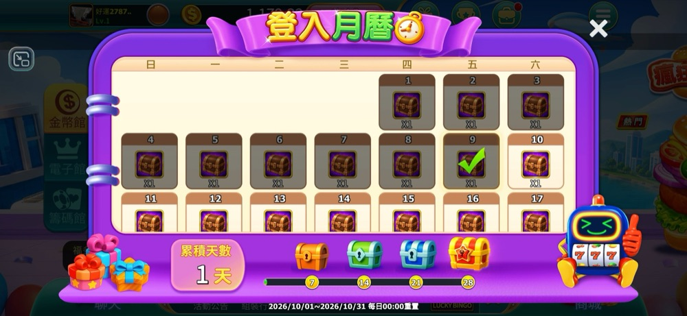
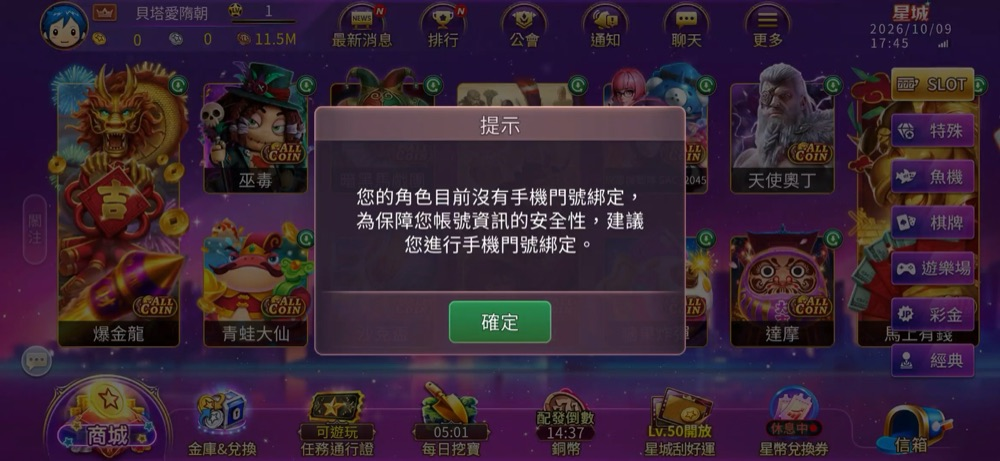
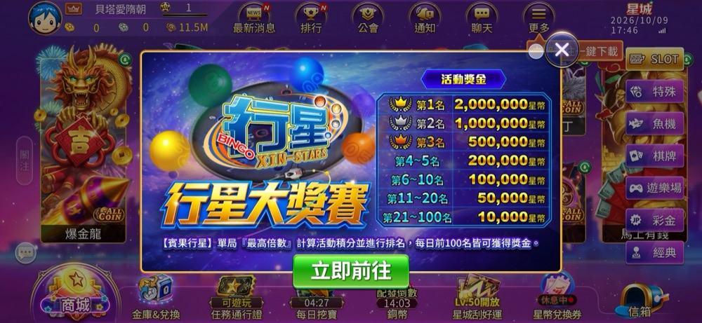
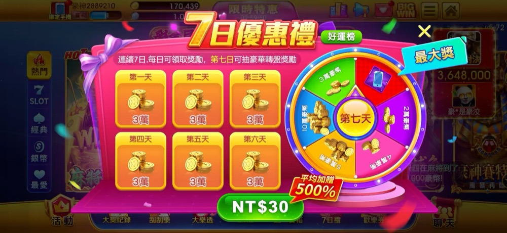
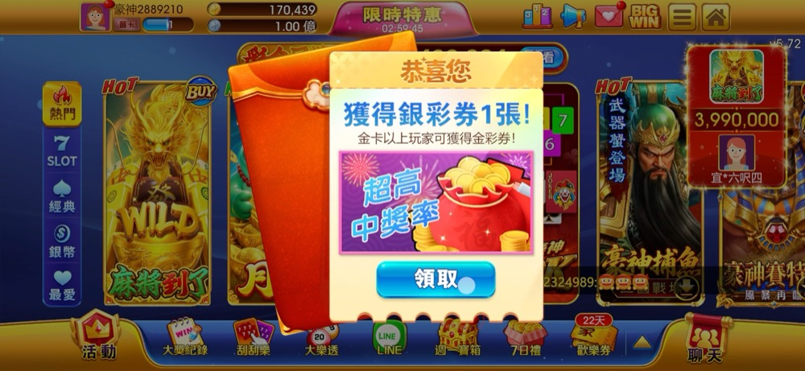
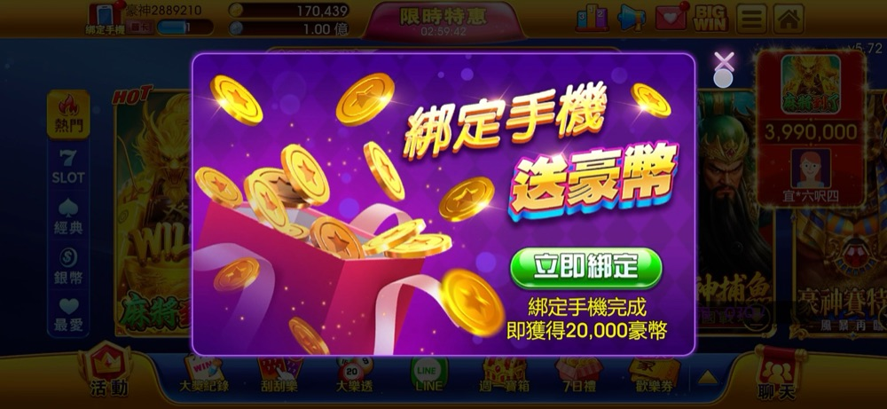
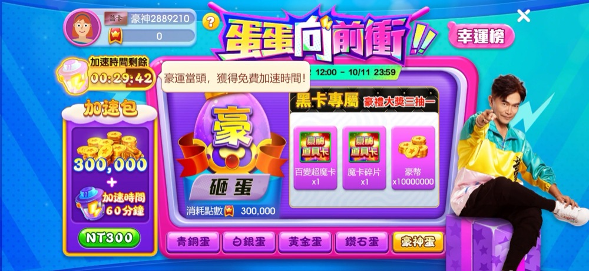
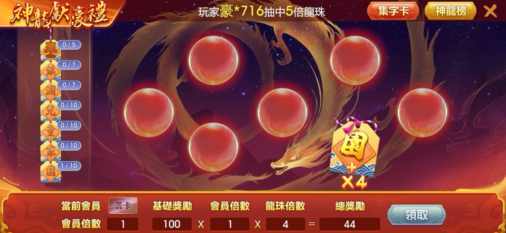
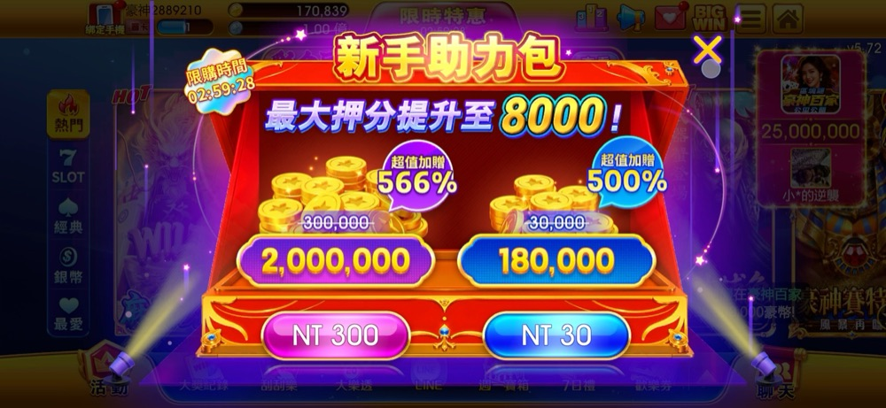
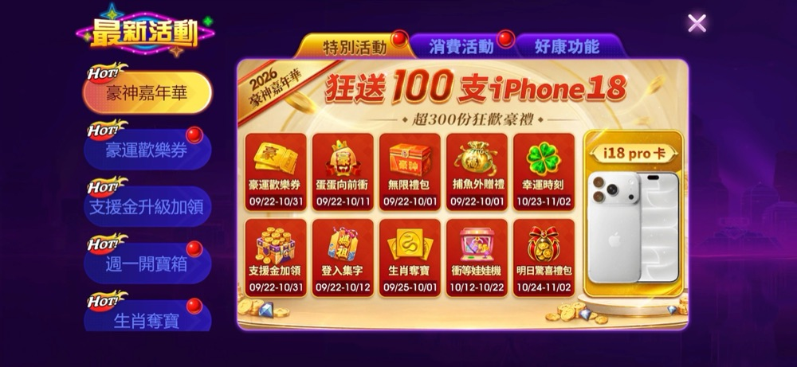
| 竞品 | 内容 | 在汇总窗口里的位置 | 单独出现 |
|---|---|---|---|
| 金好运 | 「登入月曆」签到 | 活动分页第 9 项 | 录屏开始时单独开着（怎么打开的看不到） |
| 星城 | 「行星大獎賽」排名赛 | 活動分页第 1 项 | 关掉窗口后又单独弹一次 |
| 豪神 | 新手助力包；绑 LINE；绑手机；蛋蛋向前衝 | 消費活動第 1 项；好康功能第 1、2 项；特別活動第 8 项 | 都在窗口出现之前单独弹过 |
不挡操作的提醒三款都有：金好运底栏标红点；星城入口上标红色「N」与「配發倒數」，顶栏「更多」下有「立即前往一鍵下載」气泡；豪神底栏写剩余天数（「歡樂券」22 天、「平安禮包」5 天）并有刮刮乐气泡。另：豪神录屏者自己点开「新手助力包」再关掉后，商城随后出现（推断是自动接着弹出，也可能是「限時特惠」流程的一部分）；这是录屏者操作引出的，未计入上面的数量。
活动类按单项活动弹，每次进大厅取前 3 个，一天最多 14 个。
我们 10/13 交给你的弹窗方案（修改中）：活动类拆成四条规则、每人只符合一条；回流、破产、潜在付费、潜在流失四类各有首选内容（这一人群在所在弹窗位置排第 1 个的那一项：回流、潜在流失在活动类，破产在破产弹窗，潜在付费在储值类），新增没有列首选；新增每次由 6 个减为 4 个（活动类由 3 个减为 1 个）；加每人每天弹窗上限（需开发）。
对照 弹窗方案的现有做法不因竞品而改。星城、豪神录屏里有部分内容既在窗口里、又单独弹出，与方案里首选排第 1 个弹出的做法方向相近；竞品是否按人群挑选看不出，不作为方案的依据。
提案 · 好康活动、功能梳理，不改短期范围 首选以外的活动收进一个汇总窗口，自动打开（频率待定），部分提醒改用角标、气泡。理由：我方活动类一天最多 14 个弹窗，收成一个窗口后更容易守住方案里的每人每天上限。代价：单项活动的曝光可能下降。「首选单独弹、其余收进窗口」是我方的组合，竞品录屏里看不出按人群挑首选：豪神在窗口出现前另有 6 个单独弹出（另 1 个录屏开始时已开着）；星城是窗口第 1 项在关窗后再单独弹一次，形式接近，但看不出怎么挑的。
竞品画面上给的绑定理由是账号安全；竞品是否用这些联系方式发推送，录屏看不到。本章从我方推送的需要出发借鉴：如果我方短信、LINE 要按玩家绑定的手机号或 LINE 账号发送，绑定的人越多，游戏外能触达的人就越多。
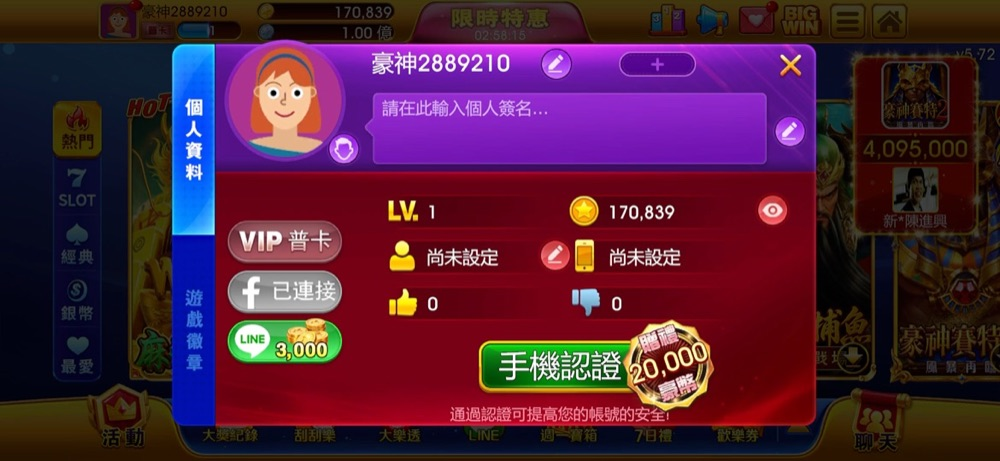
8 天以上未登录的 40,117 人（74,480 人的 53.86%）进不了大厅，只能靠游戏外推送触达。
短信由营销侧按名单发。短信、LINE 是否按玩家绑定的手机号或 LINE 账号发送、现有绑定率多少，我方未掌握（推送受众分析列为待核实）。
10/13 的弹窗方案里，首版内容列了回流、潜在流失、破产、潜在付费四类的首选，没有列新增的首选。
短期候选 · 弹窗、推送 新增人群（注册 30 天内的玩家）仅有的 1 个活动类弹窗位置放「绑定手机或 LINE」，作为新增的首选内容候选。方案把新增的活动类弹窗由 3 个减为 1 个，这一项就排在原本的活动前面；若它也设每天 1 次，每天第一次进大厅先弹绑定提示，之后再进大厅照常弹原本的活动。客户端的 2 个新手弹窗不动。两种写法并列：只提示（星城看到的做法）；送币（豪神看到的做法）。送多少待定；豪神送的 20,000 豪币约为其 NT$20 的储值量，按我方基础比例每 1 元 100 老币换算，同等储值量约为 2,000 老币，仅作参照。若我方短信、LINE 按绑定发送，这能让新增玩家日后 8 天以上未登录时仍能被触达；对现在已 8 天以上未登录的 40,117 人没有直接作用。
提案 · 标签，不改短期范围 新建「是否绑定手机」「是否绑定 LINE」两个会员标签（后台圈人用），推送前圈出能触达的人。短期标签方案只新建潜在付费、潜在流失两个。这条没有竞品依据，来自我方推送受众未知这一缺口。
金好运看到的是签到累积；星城看到的是在线时长和定时配发；豪神看到的是一天中几个固定时刻的开奖与重置。星城、豪神还都有「付一次、之后每天登录领」的商品。
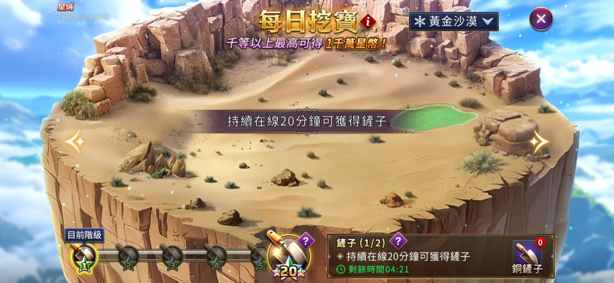
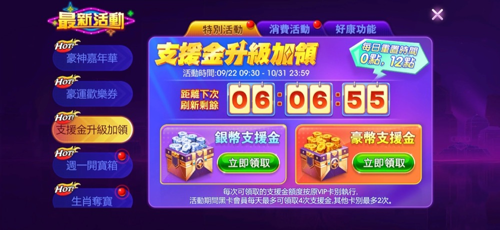
| 玩法 | 时刻 | 怎么拿到机会 |
|---|---|---|
| 支援金 | 每日 0 点、12 点重置 | 直接领取，次数按 VIP 卡别 |
| 天天大樂透 | 每晚 8 点开奖 | 原文「進行遊戲可獲號碼球」 |
| 豪神刮刮樂 | 每周六 20:00 开三星奖 | 每天登录免费送；原文「遊戲押注隨機領」 |
| 週一開寶箱 | 周五至周日登录领钥匙，周一开 | 押分累积 10,000 钥匙升级 |
金好运的签到写明每日 0 点重置；星城录屏中只看到倒数，没看到写明的时刻。一天中有多个固定时刻、以及「周末领、周一开」，只在豪神看到。
破产时可领「发财金」救助金，每天 2 次，金额按 VIP 卡别分档；平台已有每日任务框架；活动里有天天敲蛋礼、每日补给计划。
签到、定时开奖类玩法的现状，我方未掌握。
提案 · 每日任务框架 三种形式都列为候选：签到累积（金好运）、在线时长与定时配发（星城）、一天中几个固定时刻的开奖与重置（豪神）。每种举最明显的一款：金好运签到也写明每日 0 点重置；豪神也有按登录领钥匙。
提案 · 推送，不改短期范围 若采用固定时刻，在这些时刻前发推送提醒。这是推断：录屏没拍到竞品的游戏外推送。依赖推送后台需求里已列入的定时发送（较大开发）。
「付一次、之后每天登录领」（星城、豪神，2/3 款）归入第九章商城提案的第 ③ 项，不单独计数。
金好运拍到的是赠礼；星城拍到的是保险箱（同页还有货币兑换、序号兑换，没写限制）；豪神拍到的是保险箱、兑换和记录。把看到的规则归成五类，并与我方已有的转账规则对照。
| 类别 | 金好运（赠礼） | 星城（保险箱） | 豪神（保险箱、兑换、记录） | 我方（转账，9/24 盘点） |
|---|---|---|---|---|
| 门槛 | 每次最低 50,000 | 录屏中未出现 | 保险箱 50 级以上可用，身上至少留 100 万豪币 | 未掌握（转账额度按等级分段，见上限与用途） |
| 费用 | 「服務金 = 送禮數量 x 優惠%」，按 VIP 与公会；「金卡以上 0%」的优惠已于 6/18 结束 | 录屏中未出现 | 录屏中未出现 | 转出手续费：普卡、银卡 2%，金卡、白金卡 1.5%，钻石卡、黑卡 1% |
| 冷却 | 录屏中未出现 | 录屏中未出现 | 储值转盘窗口写「中獎豪幣在7日內不可贈送」，可能只限转盘奖金 | 未掌握 |
| 上限与用途 | 「今日可送禮總額」「每日可送禮次數」 | 箱内星币不能押注；可赠礼，或到官网移转 | 豪币可换银币，银币不能换回；每天 3 次、最多 50 万 | 每日转账额度：1–49 级普卡 80,000、银卡 50 万、金卡 200 万、白金卡 500 万，钻石卡、黑卡不限；50 级以上普卡至白金卡 2,000 万 |
| 凭证 | 有「送禮密碼」按钮；赠礼纪录；冻结明细 | 录屏中未出现 | 「存摺」查 30 天内或近 100 笔 | 未掌握 |
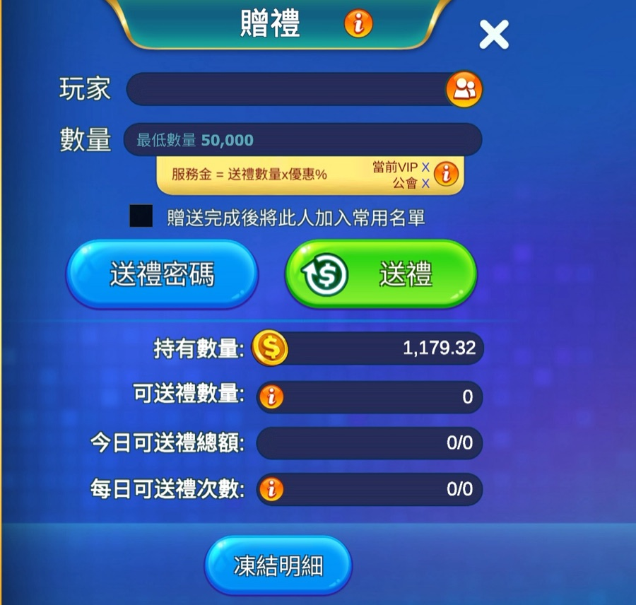
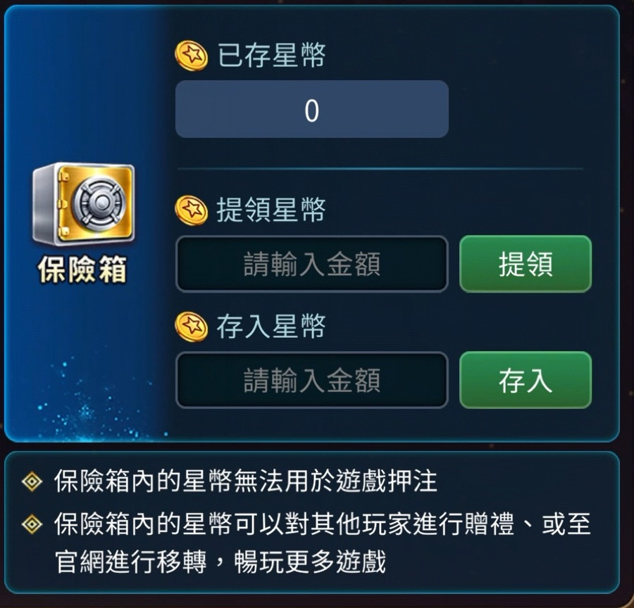
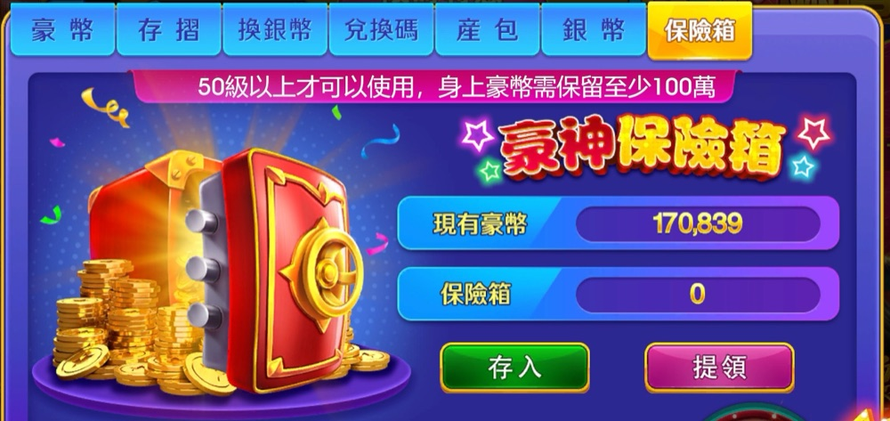
有银行功能。主管的产品计划把它列为中期优先项（「優先進行成就系統和銀行功能改造」），写法是「銀行功能改版（商城方向）」；改版是否包含转账、保险箱，计划里没写。
转账已有两类规则：转出手续费按 VIP 卡别，每日转账额度按卡别和等级（9/24 盘点）。
提案 · 银行功能改版 若改版包含转账、保险箱或货币兑换：在我方已有的转出手续费、转账额度之外，补看四类竞品规则，逐类决定要不要：门槛（每次最低额、使用等级）；冷却（中奖所得几天内不能转出）；凭证（送礼密码、冻结明细、收支记录）；保险箱和兑换的用途与上限（箱内的币能不能押注、换出去能不能换回、每天几次）。
若改版只做商城方向：本章只作参考，商城见第九章；转账、赠礼归哪个项目，我方未掌握。
录屏中看到的加送主要是：金好运是官网专属包和储值渠道活动；星城是每日、每周限购包；豪神是新手限时包。金好运同样像新号，但商城只加载出两档万元官网包；其他分页没加载或没拍到。
| 金好运 | 星城 | 豪神 | |
|---|---|---|---|
| 基础兑换 | 只看到两档，约每 1 元 110–120 金币；画面没写基础比例 | 每 1 元 100 星币 | 每 1 元 1,000 豪币（蓝新 10 档都一样，没有加送） |
| 看到的价位 | 10,000、30,000 | 1、99、100、199、250、300、499、500、1,000、3,000 | 30、150、300、500、1,000、1,500、3,000、5,000、10,000、20,000 |
| 加送方式 | 「金幣官網高返包」NT$30,000，「120% 超優惠」，只限中国信托、玉山、街口支付、LINE Pay；全家、MyCard、GASH、iWIN 储值「送最高15%金幣」 | 「每日必買」「每週優惠」各 3 档，加送 20%，各限购 1 次；通行证豪华礼包 NT$300，加送 50%，限购 1 次；回馈卡 4% | 新手助力包 NT$30（180,000 豪币，划线原数量 30,000，「超值加贈 500%」）、NT$300（2,000,000，划线 300,000，「566%」），限购倒数；「7日優惠禮」NT$30；储值满 4 次可转「幸運轉盤」 |
| 储值渠道 | 活动里提到全家、MyCard、GASH、iWIN；官网包限银行与电子支付 | GASH、星城礼包储值、游e卡、电子支付；活动里推全家、莱尔富、悠游付 | 蓝新、欧买尬（信用卡、ATM）、MyCard、全家、7-11 ibon、iWIN |
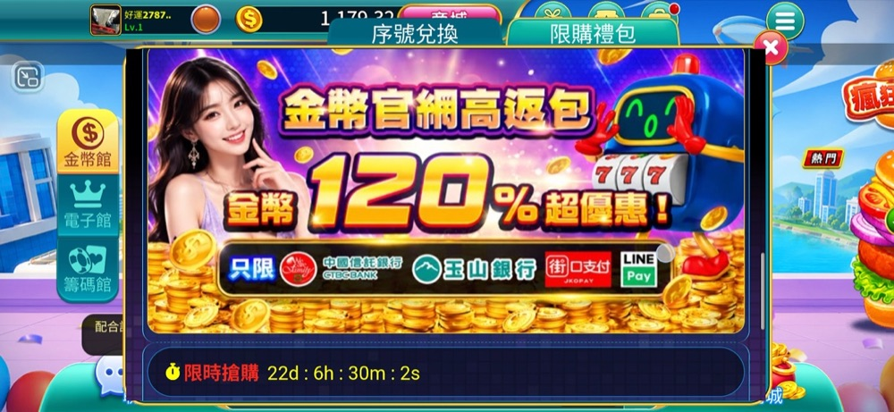
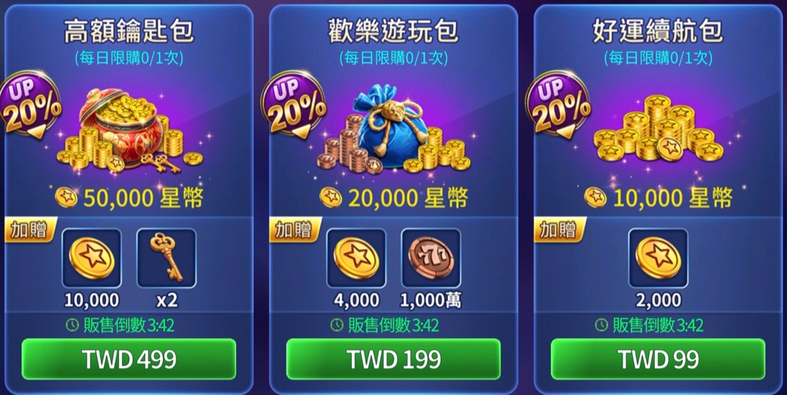
礼包几十个，最低首储礼包 NT$50、最高 NT$30,000，多数在几百到三千；新手高级通行证注册 48 小时内 NT$49；储值类弹窗排序里有每日礼包、生涯限购。
基础兑换比例为每 1 元 100 老币（新手通行证信息总结）。限时加码礼包按个人 RTP 加码 2%–12%；其余各礼包的加送比例、基础储值档位的最低价，我方未掌握。
提案 · 银行功能改版（商城方向） 三件事分开比较，都先补齐我方数据：
① 新号能买到的最低一笔（录屏中看到的）：星城 NT$1（100 星币，没有加送）、NT$99（每日必买，加送 20%）；豪神 NT$30（新手包，加送 500%）；金好运只看到万元档。我方礼包最低是首储礼包 NT$50，另有 NT$49 新手通行证（注册 48 小时内）；基础储值档位的最低价未掌握。比完决定是否需要低于 NT$49 的入口。
② 每元得币：我方基础比例是每 1 元 100 老币。算出首储礼包 NT$50 每 1 元得多少老币、是基础比例的几倍，与豪神新手包约 6 倍并列，供决定首储礼包的加送要不要调。新手通行证的币分级领取、还含卡，口径不同，放到 ③ 比对。
③ 限购包与「付一次、之后每天领」：星城每日、每周限购包（1/3 款）；星城回馈卡、豪神 7 日优惠礼（2/3 款）。先比对我方已有的每日礼包、生涯限购和新手通行证，确认缺的是什么。
| 发现 | 录屏中看到的 | 可参照的项目 |
|---|---|---|
| 公告并进活动窗口 2/3 款 | 金好运、星城的窗口里都有公告分页；豪神的窗口里没有公告分页，绑定、社群、每日免费放在「好康功能」里 | 功能梳理（我方好康、限时、公告三者功能重叠） |
| 邀请与官方社群 各 1/3 款 | 星城「應援團」分享网址邀应援（我方也有应援团）；豪神「好康資訊」列出 FB 粉丝页、FB 社团、LINE，兑换码要到粉丝页才知道怎么拿 | 裂变＋回流 |
| 免费福利里写出高卡别多拿什么 1/3 款 | 豪神「金卡以上玩家可獲得金彩券!」「黑卡專屬」，支援金次数按 VIP 卡别 | 弹窗（潜在付费人群的内容），仅作参照 |
| 只在指定游戏掉落 1/3 款 | 星城「星幣兌換券」「遊玩指定遊戲館隨機送」，指定 5 款，含新游戏「爆金龍」；豪神刮刮乐、大乐透的原文是「遊戲押注隨機領」「進行遊戲可獲號碼球」，没写限定游戏 | 外赠（掉落） |
| 新游戏进活动窗口 2/3 款 | 金好运新机「神來運轉」在活动分页第 1 项；星城新游戏「爆金龍」在推荐分页第 1 项；豪神只看到标「新品推出」的刮刮乐「射門奪金」 | 活动窗口排序 |
| 储值渠道活动 2/3 款 | 金好运全家、MyCard、GASH、iWIN 各送最高 15%；星城全家、莱尔富、悠游付（满千最高 8%） | 储值活动 |
| 实物大奖 3/3 款 | 金好运「限時組裝萬聖趴」横幅写「iPhone 18送到家」；星城酒类合作抽 LG 触控屏；豪神「狂送100支iPhone18」 | 活动策划参考 |
| 排行榜 3/3 款 | 金好运爭霸榜（海神、虎神分一般、高级、尊爵三馆奖金）；星城「行星大獎賽」每天前 100 名按名次给奖；豪神名人榜分厅、分本日到历史（大奖记录榜，没看到奖金）。按馆或厅分开的有 2/3 款（金好运、豪神） | 活动排行榜 |
另：成就只看到豪神「徽章任務 解鎖專屬稱號」的入口，三款的成就内页都没拍到。金好运商城打开后约 53 秒才加载出内容，「序號兌換」分页始终没加载出来（录屏1 t0046.0–t0098.0）。
| 类别 | 我方项目 | 建议 | 依据 | 先要定的 |
|---|---|---|---|---|
| 短期候选 | 弹窗（新增人群内容）、推送 | 新增人群仅有的 1 个活动类弹窗位置放「绑定手机或 LINE」，排在原本的活动前面；只提示、送币两种写法并列 | 提示绑定 2/3 款；送币 1/3 款（豪神） | 短信、LINE 是否按绑定发送；有没有绑定入口、弹窗能否跳过去；有没有发奖方式；已绑定的人能否不弹；注册时是否强制绑手机；玩家登录方式 |
| 提案 | 标签（不改短期范围） | 新建「是否绑定手机」「是否绑定 LINE」会员标签 | 无竞品依据，来自我方推送受众缺口 | 会员资料有没有绑定字段 |
| 提案 | 好康活动、功能梳理（不改短期范围） | 首选以外的活动收进汇总窗口，部分提醒改用角标、气泡 | 汇总窗口 3/3 款；角标 3/3 款，提醒气泡 2/3 款 | 能否逐条记录曝光、点击；计入上限的口径；好康活动或公告能否改成分页窗口 |
| 提案 | 每日任务框架 | 签到累积、在线时长与定时配发、一天中几个固定时刻三种形式列为候选 | 3/3 款都有每天回来的理由；每种形式举最明显的一款 | 我方已有的每日、定时玩法 |
| 提案 | 推送（不改短期范围） | 若采用固定时刻，在这些时刻前发提醒 | 推断；录屏没拍到竞品的游戏外推送 | 推送后台的定时发送（已列入需求，较大开发） |
| 提案 | 银行功能改版 | 在已有手续费、转账额度之外，补看四类规则：门槛；冷却；凭证；保险箱和货币兑换的用途与上限 | 3/3 款，各看到一部分 | 改版包含哪些模块；有没有盗号转币、私下交易问题 |
| 提案 | 银行功能改版（商城方向） | 三件事分开比较：最低价位；每元得币；限购包与「付一次、之后每天领」 | 最低一笔低于 NT$49：2/3 款；新手专属高加送 1/3 款；付费后每天领 2/3 款；每日每周限购 1/3 款 | 首储礼包 NT$50 给多少老币；基础储值档位的最低价；每日礼包、生涯限购、新手通行证的内容 |
| 对照 | 弹窗（10/13 方案） | 现有做法不因竞品而改 | 无竞品依据；竞品所见与方案不冲突 | 无 |
| 事项 | 不定的话 | |
|---|---|---|
| 1 | 「绑定手机或 LINE」这项短期候选：下表第 1、2 项核实成立后，是否放进 10/13 弹窗方案里新增人群仅有的 1 个活动类弹窗位置（排在原本的活动前面；若它设每天 1 次，原本的活动改在当天之后进大厅时弹）；选只提示还是送币 | 方案里新增人群仍不列首选内容 |
| 2 | 六项提案是否转给主管或对应项目 | 提案只留在本报告里 |
| 3 | 是否每月补录一次三款竞品（录法见附录 C） | 本期只作一次性记录，看不到竞品的变化 |
| 事实 | 答案不同怎么办 | |
|---|---|---|
| 1 | 短信、LINE 是否按玩家绑定的手机号或 LINE 账号发送 | 是：绑定候选成立；否：撤掉绑定候选与绑定标签 |
| 2 | 有没有绑定入口、弹窗能否点击跳到这个入口 | 都有：可进短期；任一没有：改为需开发的提案 |
| 3 | 有没有绑定的发奖方式 | 有：两种写法都可选；没有：只用只提示的写法 |
| 4 | 已绑定的玩家能否不弹 | 能：用现有功能；不能：等绑定标签提案，或接受已绑定的人也会看到 |
| 5 | 注册时是否强制绑定手机 | 是：绑定候选只做 LINE；否：手机、LINE 都做 |
| 6 | 好康活动或公告能否改成分页窗口并自动打开 | 能：汇总窗口用现有功能配置；不能：列入需开发 |
| 7 | 汇总窗口能否逐条记录曝光、点击 | 能：汇总窗口提案成立；不能：列入开发，或撤掉这项提案 |
| 8 | 银行改版包含哪些模块 | 含转账、保险箱或货币兑换：用第八章；只有商城：第八章只作参考 |
| 金好运 | 星城 | 豪神娱乐城 | |
|---|---|---|---|
| 录制时间 | 约 17:27–17:30，175 秒 | 约 17:45–17:46，66 秒 | 约 17:52–17:54，105 秒 |
| 起点 | 已在游戏内，「登入月曆」开着 | 已在大厅，绑定手机提示开着 | 已在大厅，「7日優惠禮」开着 |
| 账号 | 1 级；金币 1,179.32；签到累积从 0 天变 1 天；背包几乎空 | 1 级；星币 0、银币 0、铜币 11,565,500；手机未绑 | 1 级；普卡；豪币 170,439；存折无记录；新手助力包倒数中 |
| 身份依据 | 商城顶部与活动列表的「金好運」字样（全称未出现） | 大厅「星城」标志；公告「遊戲品牌更名《星城》」（2026-07-01） | 「FB粉絲頁：豪神娛樂城」 |
| 步骤 | 做了什么 |
|---|---|
| 取证 | 三段录屏按 0.5 秒采样去重，得关键画面 130 张；另存每秒一帧 347 张，不到 1 秒的画面从原视频补抓 |
| 观察 | 每段一名观察员逐帧记录屏幕原文、价格、操作，观察与推断分开写；先用星城一段试点，校准记录规则后再做另两段 |
| 核对 | 每段一名没参与观察的核对员，对照截图全核价格、数量、日期与弹窗顺序，其余抽核；数字类读数全部一致；核对员共提出 25 条，其中 23 条确有误，退回观察员重抓原视频复核后改正；另 2 条说的是同一处，双方意见不一，由主对话看原视频裁定观察员正确 |
| 常规档案 | 按固定十二个维度（模板见 过程/常规档案模板.md）从核对过的观察记录整理三款档案，每条带帧号；再做本期动向、活动日历与功能总览 |
| 对比与结论 | 按维度做三款与我方的对比表；我方一侧只用有出处的事实 |
| 反方审查 | 一名没参与的审稿人专找把单账号所见写成规则、计数不对、建议推不出的地方；结论初稿查出 20 处，全部改正 |
| 判卷 | 五名判卷人分别判事实（每轮抽 24 条对截图）、单账号所见是否写成规则与我方出处、建议是否写全、无背景读者复述、版面；每轮按判卷意见改正后再判，过程记录在 过程/判卷/ |
做法参照：游戏行业竞品分析的通行做法（Liquid & Grit 社交博弈月报、GameRefinery 功能追踪与 LiveOps 分类）；Anthropic 多智能体研究系统与评测方法（编排者分派、独立复核、先定验收标准）。我方事实出处：弹窗标签推送方案阶段 1 现状盘点、阶段 4 做法、弹窗标签推送盘点（9/24）、背景信息汇总、产品计划原文、短期三项工作脑图、推送系统后台集成需求、推送受众分析、新手通行证信息总结。过程文件在 过程/ 文件夹。